2 Atomes et quantité de matière
S’entraîner sur ce chapitre — Ouvrir Balmer-Cloud, puis importer la banque de questions de ce chapitre.
Ce que ce chapitre construit — Ce chapitre introduit les unités du système international avant et présente une description rigoureuse et quantitative de l’atome. Trois constructions principales sont abordées : le noyau (protons, neutrons, isotopes et défaut de masse), la mole (outil de comptage reliant la masse d’un échantillon au nombre d’atomes qu’il contient) et le nuage électronique (niveaux d’énergie, configurations électroniques et spectres de raies). Ces trois perspectives offrent des langages distincts pour décrire le même objet : l’atome.
Ce que nous saurons faire — À la fin de ce chapitre, nous aurons acquis les compétences nécessaires pour:
- calculer la masse d’un nombre quelconque d’atomes ou de molécules.
- d’écrire le symbole complet d’un élément, \(^A_Z X\), en précisant sa composition et son isotopie.
- calculer une masse atomique relative moyenne à partir des abondances isotopiques.
- d’établir la configuration électronique de n’importe quel atome et de représenter ses électrons de valence.
- relier un spectre de raies à des transitions entre niveaux d’énergie quantifiés, ce qui constitue le fondement de la chimie des liaisons que nous aborderons par la suite.
2.1 Les unités de mesure et l’échelle de taille
2.1.1 Grandeurs et unités
Une grandeur est ce que l’on mesure — la masse, la température, la pression. Une unité est l’échelle dans laquelle on exprime cette mesure — le kg, le K, le Pa. Une même grandeur peut s’exprimer dans plusieurs unités (une masse en kg, en g ou en livres), mais les propriétés de la grandeur ne dépendent pas du choix de l’unité.
Avant 1798, l’Europe comptait des milliers d’unités, chacune pouvant varier de valeur d’une ville à l’autre — de quoi transformer un simple achat de tissu ou de grain en casse-tête selon l’endroit où l’on se trouvait.
La Suisse n’était pas épargnée — bien au contraire. Jusqu’en 1877, la plupart des cantons suisses possédaient encore leur propre système, même si trois références régionales dominaient (le pied de Nuremberg à l’est de la Reuss, le pied de Berne de l’Argovie au Léman, le pied de Paris à l’ouest de la Reuss), et la livre pouvait peser de 300 grammes à plus de 900 grammes selon le canton. Une première tentative d’harmonisation, le concordat de 1835, ne fut adoptée que par douze cantons — Vaud le refusa, aux côtés d’Uri, Genève, le Tessin et le Valais. Il faudra attendre la loi fédérale de 1875, effective dès 1877, pour que le mètre, le litre et le kilogramme s’imposent enfin dans tout le pays.
C’est précisément ce chaos que le système métrique est venu partiellement résoudre, sous l’impulsion d’une commission de l’Académie des sciences dirigée par son secrétaire perpétuel Nicolas de Condorcet (1743–1794), qui en fut l’un des principaux artisans. Condorcet voyait dans un système universel et standard un moyen de permettre à chacun de calculer ses propres intérêts, condition selon lui d’une véritable égalité en droits et d’une réelle liberté. Les savants convinrent aussi que les diverses unités du nouveau système seraient toutes liées entre elles par une échelle strictement décimale — une idée déjà ancienne, utilisée bien avant eux par les Romains, les Indiens et les Arabes.
Aujourd’hui, seuls trois pays n’ont pas officiellement adopté le système métrique comme unique système légal : le Myanmar, le Liberia et les États-Unis — même si d’autres pays, comme le Canada ou le Royaume-Uni, conservent eux aussi des systèmes mixtes. Tant et si bien qu’on trouve toujours certaines exceptions dans la vie courante - par exemple la taille des écrans est en général donnée en pouces plutôt qu’en centimètres, les marins utilisent plutôt les miles pour les distances et les nœuds pour les vitesses, la température en Fahrenheit, etc.
En 1999, la confusion entre unités du système métrique et du système anglo-saxon fut à l’origine du crash de la sonde martienne de la NASA Mars Climate Orbiter. Les valeurs d’impulsion (force multipliée par le temps d’action des propulseurs) calculées par la firme Lockheed Martin étaient exprimées en livre-force·seconde, une unité encore couramment utilisée aux États-Unis, alors que les ingénieurs du Jet Propulsion Laboratory de la NASA les interprétaient comme des newton·seconde, l’unité du système international. La mise en orbite se fit beaucoup trop proche de la planète et le satellite s’écrasa…
Mais qu’est-ce qu’une unité, au juste ?
Une unité, contrairement à un objet, n’existe pas dans la nature : le mètre n’est pas une entité naturelle, pas plus que la seconde ou le kelvin. C’est une référence conventionnelle — un accord humain qui a nécessité négociation, standardisation et adoption.
2.1.2 Le système international d’unités (SI)
Aujourd’hui, pour décrire le monde qui nous entoure, nous utilisons des dizaines d’unités différentes — le mètre, le gramme, la seconde, le newton, le pascal, le joule et bien d’autres encore. Mais seules quelques unités sont réellement indépendantes. L’énorme majorité des unités peut s’écrire comme une combinaison d’un tout petit nombre d’unités, dites fondamentales, et à partir desquelles se construit l’ensemble de la physique et de la chimie.
Combien d’unités fondamentales faut-il pour décrire toutes les grandeurs physiques ? Sept. Pas une de plus.
Formalisation IUPAC : Le système international d’unités (SI) repose sur sept unités de base indépendantes :
| Grandeur | Unité | Symbole | Nature |
|---|---|---|---|
| Longueur | mètre | m | ambiguë* |
| Masse | kilogramme | kg | extensive |
| Temps | seconde | s | ambiguë* |
| Température | kelvin | K | intensive |
| Quantité de matière | mole | mol | extensive |
| Intensité électrique | ampère | A | intensive |
| Intensité lumineuse | candela | cd | intensive |
Le tableau des unités du Système international (SI) réserve quelques surprises. Il ne mentionne pas le degré Celsius, le joule ou le watt. L’unité de masse est le kilogramme, et non le gramme.
Feuille de route : Dans la suite de ce manuel :
- Nous pouvons admettre que le mètre (m) et la seconde (s) sont des notions déjà familières — nous les utiliserons sans les redéfinir.
- Trois unités qui demandent une attention particulière : la masse (kg), souvent confondue avec le poids ; la température (K), dont l’échelle diffère de celle du degré Celsius ; et la mole (mol), unité de quantité de matière et outil central de toute la chimie.
- Les ampères (A) seront traités dans le chapitre consacré à l’électrochimie.
- La candela (cd) n’est pas rencontrée dans ce manuel.
2.1.3 Grandeurs intensives et extensives
Les grandeurs fondamentales sont-elles dépendantes ou indépendantes de la quantité de matière ? Selon cette propriété fondamentale, les grandeurs se répartissent en deux catégories distinctes :
- Une grandeur extensive dépend de la quantité de matière : si l’on réunit deux systèmes identiques, la grandeur extensive du système total est la somme des deux. La masse, le volume et la quantité de matière (mol) sont extensives. Réunir deux objets de 2 kg donne un objet de 4 kg.
- Une grandeur intensive est indépendante de la quantité de matière : si l’on réunit deux systèmes identiques, les grandeurs intensives ne s’additionnent pas. La température, la pression et la concentration sont intensives. Réunir deux verres d’eau à 20 °C donne de l’eau à 20 °C — pas à 40 °C.
Astuce : pour tester si une grandeur est extensive, demandons-nous : « si nous doublons la quantité de matière, est-ce que cette grandeur double aussi ? » Si oui → extensive. Si non → intensive.
Le cas particulier de la longueur et du temps. Ces deux grandeurs échappent à la classification simple ci-dessus : leur comportement dépend du mode de combinaison choisi.
- La longueur: Mettons bout à bout deux tiges identiques de 1 mètre : la longueur totale double (2 mètres) — comportement extensif. Mais fondons deux cubes de métal identiques, de côté L, en un seul bloc compact de même forme : le côté du nouveau bloc vaut L × 2^(1/3), soit environ 1,26 L — ni le double (extensif), ni inchangé (intensif). La longueur, dans ce cas, suit une échelle intermédiaire, en racine cubique du volume : elle n’est ni pleinement extensive, ni intensive.
- le temps : deux processus identiques d’1 seconde, réalisés l’un après l’autre, durent 2 secondes au total (extensif) ; réalisés simultanément, ils ne durent toujours qu’une seconde — inchangée, donc intensif.
Contrairement à la masse (toujours extensive) ou à la température (toujours intensive), la longueur et le temps n’ont donc pas de réponse universelle : tout dépend de la façon dont on combine les systèmes, et certains cas (comme les cubes fondus) ne rentrent dans aucune des deux catégories.
Pourquoi cette distinction est-elle utile ? Reconnaître si une grandeur est extensive ou intensive évite des erreurs de calcul bien concrètes.
- En cuisine, doubler une recette double la quantité de farine (extensive), mais ne change ni la température du four ni le temps de cuisson d’une pièce épaisse (plutôt intensifs) — confondre les deux mènerait à un four réglé deux fois trop chaud.
- En laboratoire, diviser une grandeur extensive par une autre grandeur extensive donne une grandeur intensive, ce qui permet de comparer des échantillons de tailles différentes : c’est exactement le principe de la masse volumique (\(\rho = m/V\), voir plus loin dans ce chapitre) ou de la concentration — des outils qui caractérisent une substance indépendamment de la quantité prélevée.
- En ingénierie, faire passer un procédé du laboratoire à l’échelle industrielle exige de savoir quelles grandeurs vont être multipliées avec la taille (masse traitée, énergie totale dégagée) et lesquelles doivent rester constantes pour que le procédé fonctionne toujours aussi bien (température, pression, concentration).
Exercices
- Un récipient contient 2 kg d’eau à \(20\ ^\circ\text{C}\). On verse cette eau dans deux verres égaux.
- Quelle est la masse d’eau dans chaque verre ?
- Quelle est la température de l’eau dans chaque verre ?
- Pour chacune de ces deux grandeurs, dites si elle est extensive ou intensive.1
- La densité d’un morceau d’or est de 19,3 g/mL. On coupe ce morceau en deux morceaux égaux.
- Quelle est la densité de chaque morceau ?
- La densité est-elle une grandeur extensive ou intensive ?2
- Un élève affirme : “Si je chauffe 1 L d’eau de \(20\ ^\circ\text{C}\) à \(40\ ^\circ\text{C}\), j’ai besoin de deux fois plus d’énergie que pour chauffer 0,5 L d’eau de \(20\ ^\circ\text{C}\) à \(40\ ^\circ\text{C}\).”
- Est-il correct ?
- Identifiez dans cet énoncé une grandeur extensive et une grandeur intensive, et justifiez votre classification pour chacune.3
2.1.4 L’analyse dimensionnelle
On attribue au physicien américain John Wheeler (1911–2008) la citation suivante :
On ne devrait jamais faire de calcul sans en connaître le résultat au préalable. —J. Wheeler
L’analyse dimensionnelle est un exemple concret de ce principe : elle permet d’anticiper l’unité d’un résultat, avant même d’avoir terminé le calcul. Ainsi, à partir de ces sept unités de base, toutes les autres unités peuvent être obtenues par combinaison. Ce processus est connu sous le nom d’analyse dimensionnelle : un outil qui permet de vérifier qu’une formule est cohérente (homogène) et de déduire l’unité d’une grandeur à partir de celles qui la composent.
Chaque grandeur fondamentale possède sa propre unité : le mètre (m) pour la longueur, le kilogramme (kg) pour la masse, la seconde (s) pour le temps, l’ampère (A) pour l’intensité électrique, le kelvin (K) pour la température. L’unité d’une grandeur dérivée s’obtient en combinant celles de ces grandeurs fondamentales.
Deux règles suffisent pour manipuler ces unités.
- D’abord, l’homogénéité : on ne peut additionner ou soustraire que des grandeurs de même unité — une vitesse ne s’ajoute pas à une accélération.
- Ensuite, la multiplication et la division des unités suivent les mêmes règles que les puissances. Les nombres purs, les angles et les fonctions trigonométriques ou exponentielles sont, eux, sans unité (unité notée \(1\)).
Un exemple concret d’analyse dimensionnelle :
Nous connaissons normalement la relation \(P = m \cdot g\), qui relie la force de pesanteur à la masse \(m\) et à l’accélération \(g\).
- La masse s’exprime en kg
- L’accélération en \(\text{m}\cdot\text{s}^{-2}\).
Par bilan dimensionnel, la force doit donc s’exprimer en \(\text{kg}\cdot\text{m}\cdot\text{s}^{-2}\) — combinaison qui porte le nom de newton (N).
Nous y reviendrons dans la section sur la masse et le poids.
Cette même logique permet de retrouver l’unité d’une grandeur qu’on ne connaît pas encore.
- La vitesse, par exemple, est une distance parcourue par unité de temps : elle s’exprime en \(\text{m}\cdot\text{s}^{-1}\).
- L’accélération est une vitesse divisée par un temps : elle s’exprime donc en \(\dfrac{\text{m}\cdot\text{s}^{-1}}{\text{s}} = \text{m}\cdot\text{s}^{-2}\) — et l’on retrouve directement l’unité de \(g\) utilisée ci-dessus.
Au-delà de la simple vérification, l’analyse dimensionnelle sert aussi à repérer une erreur — deux membres d’une égalité doivent avoir la même unité, sans quoi la formule est nécessairement fausse — et, en physique plus avancée, à construire des lois empiriques à partir des seules dimensions des grandeurs en jeu, sans même connaître le mécanisme physique sous-jacent (théorème de Vaschy-Buckingham).
Exercices
- La pression est définie par \(P = \dfrac{F}{A}\), le rapport d’une force sur une surface.
- Déterminez l’unité de la pression à partir de l’unité du newton établie ci-dessus.
- Cette combinaison porte un nom : lequel ?4
- Un élève propose la relation suivante pour décrire une vitesse en fonction du temps : \(v = v_0 + a \cdot t^{2}\).
- Cette équation est-elle homogène ? Justifiez votre réponse par une analyse dimensionnelle, puis proposez, si nécessaire, une correction.5
- L’énergie cinétique d’un objet est donnée par \(E_c = \dfrac{1}{2} m v^{2}\).
- À partir des unités de la masse et de la vitesse, déterminez l’unité de l’énergie cinétique.
- Cette combinaison porte, elle aussi, un nom : lequel ?6
2.1.5 Les préfixes d’unité
En laboratoire, toutes les unités sont constamment modulées par des préfixes indiquant un multiple ou un sous-multiple. Ces préfixes ne changent pas la nature de la grandeur mesurée (par exemple, 3 m et 3 mm représentent tous deux une longueur), mais ils modifient la valeur numérique. Par conséquent, un chimiste peut peser 2,5 g ou 2’500 mg de sel, il en aura exactement la même quantité. De même mesurer 0.1 mL ou 100 µL d’eau est naturellement le même volume. Dans les deux cas, les valeurs numériques diffèrent mais les quantités restent identiques.
| Préfixe | Symbole | Facteur |
|---|---|---|
| téra | T | \(10^{12}\) |
| giga | G | \(10^{9}\) |
| méga | M | \(10^{6}\) |
| kilo | k | \(10^{3}\) |
| déci | d | \(10^{-1}\) |
| centi | c | \(10^{-2}\) |
| milli | m | \(10^{-3}\) |
| micro | µ | \(10^{-6}\) |
| nano | n | \(10^{-9}\) |
| pico | p | \(10^{-12}\) |
| femto | f | \(10^{-15}\) |
Cas particuliers à retenir :
- La tonne ne suit pas la règle des préfixes : \(1\ \text{tonne} = 10^{6}\ \text{g} = 1\ \text{Mg}\).
- L’angström (Å) vaut \(10^{-10}\ \text{m}\) — très utilisé pour exprimer la taille des atomes.
- Le rappel \(1\ \text{dm}^{3} = 1\ \text{L}\) (litre) est fondamental en chimie — il reviendra tout au long du cours.
2.1.5.1 Une méthode de conversion des préfixes
Voici une méthode de conversion des préfixes. Parmi les différentes méthodes existantes, celle-ci permet généralement d’effectuer la conversion mentalement. Elle consiste à :
- Convertir les valeurs en notation scientifique.
- Identifier le facteur approprié pour passer du préfixe initial au préfixe souhaité.
- Multiplier les valeurs par le facteur approprié.
Unité linéaire
Exemple travaillé — conversion :
- Convertir 28 millimètres en mètres :
- \(28\ \text{mm} = 2{,}8 \times 10^{1}\ \text{mm}\)
- Facteur approprié pour passer de mm à m : \(10^{-3}\)
- \(2{,}8 \times 10^{1} \times 10^{-3} = 2{,}8 \times 10^{-2}\ \text{m}\)
\[28\ \text{mm} = 2{,}8 \times 10^{-2}\ \text{m}\]
- Convertir 0,032 kilogrammes en microgrammes :
- \(0{,}032\ \text{kg} = 3{,}2 \times 10^{-2}\ \text{kg}\)
- Facteur approprié pour passer de kg à µg : \(10^{9}\)
- \(3{,}2 \times 10^{-2} \times 10^{9} = 3{,}2 \times 10^{7}\ \mu\text{g}\)
\[0{,}032\ \text{kg} = 3{,}2 \times 10^{7}\ \mu\text{g}\]
- Convertir 12 400 picomètres en millimètres :
- \(12\,400\ \text{pm} = 1{,}24 \times 10^{4}\ \text{pm}\)
- Facteur approprié pour passer de pm à mm : \(10^{-9}\)
- \(1{,}24 \times 10^{4} \times 10^{-9} = 1{,}24 \times 10^{-5}\ \text{mm}\)
\[12\,400\ \text{pm} = 1{,}24 \times 10^{-5}\ \text{mm}\]
Exercices :
- Convertir \(0{,}00012\ \text{mm}\) en nanomètres.7
- Convertir \(0{,}3\ \text{mm}\) en micromètres.8
- Convertir \(54 \times 10^{3}\) picomètres en kilomètres.9
- Convertir \(0{,}0027\) tonne en milligrammes.10
- Convertir \(2{,}5 \times 10^{8}\) angströms en kilomètres.11
Unités de puissances 2 et 3
Pour les unités de surface et de volume, les facteurs sont élevés à la puissance correspondante :
Exemple travaillé — conversion :
- Convertir 1 centimètre carré en mètre carré :
- \(1\ \text{cm}^{2} = 1 \times 10^{0}\ \text{cm}^{2}\)
- Facteur approprié pour passer de cm² à m² : \((10^{-2})^{2} = 10^{-4}\)
- \(1 \times 10^{0} \times 10^{-4} = 1 \times 10^{-4}\ \text{m}^{2}\)
\[1\ \text{cm}^{2} = 10^{-4}\ \text{m}^{2}\]
- Convertir 12,3 millimètres cube en nanomètres cube :
- \(12{,}3\ \text{mm}^{3} = 1{,}23 \times 10^{1}\ \text{mm}^{3}\)
- Facteur approprié pour passer de mm³ à nm³ : \((10^{6})^{3} = 10^{18}\)
- \(1{,}23 \times 10^{1} \times 10^{18} = 1{,}23 \times 10^{19}\ \text{nm}^{3}\)
\[12{,}3\ \text{mm}^{3} = 1{,}23 \times 10^{19}\ \text{nm}^{3}\]
- Convertir 0,05 millimètre cube en décimètre cube :
- \(0{,}05\ \text{mm}^{3} = 5 \times 10^{-2}\ \text{mm}^{3}\)
- Facteur approprié pour passer de mm³ à dm³ : \((10^{-2})^{3} = 10^{-6}\)
- \(5 \times 10^{-2} \times 10^{-6} = 5 \times 10^{-8}\ \text{dm}^{3}\)
\[0{,}05\ \text{mm}^{3} = 5 \times 10^{-8}\ \text{dm}^{3}\]
Exercices :
- Convertir \(0{,}23\ \text{nm}^{2}\) en \(\text{cm}^{2}\).12
- Convertir \(20\ \text{km}^{3}\) en \(\text{nm}^{3}\).13
- Convertir \(4{,}7 \times 10^{2}\ \text{µm}^{2}\) en \(\text{mm}^{2}\).14
- Convertir \(2{,}4\ \text{m}^{3}\) en \(\text{dm}^{3}\), puis exprimer ce volume en litres (rappel : \(1\ \text{dm}^{3} = 1\ \text{L}\)).15
- Convertir \(850\ \text{cm}^{3}\) en \(\text{dm}^{3}\).16
2.1.6 Masse et poids
La masse représente la quantité de matière qui composent un objet, tandis que le poids représente l’interaction de cette quantité de matière avec le champ gravitationnel. Ces deux grandeurs sont fondamentalement différentes, bien que les termes « masse » et « poids » soient souvent utilisés maladroitement de manière interchangeable.
Formalisation IUPAC :
- La masse (\(m\)) représente la quantité de matière contenue dans un objet. Elle est constante et indépendante de la gravité. L’unité SI de la masse est le kilogramme (kg), tandis que le gramme (g) est couramment utilisé en laboratoire.
- Le poids (\(P\)) est la force gravitationnelle exercée sur un objet. Il est directement proportionnel au champ de gravité local \(g\) (une accélération, exprimée en \(\text{m}\cdot\text{s}^{-2}\)) et à la masse de l’objet (\(m\)), selon la formule \(P = m \cdot g\). L’unité SI du poids est le newton (N).
Rappel: Pour exprimer l’unité newton à partir de la formule \(P = m \cdot g\), où \(m\) est exprimé en kilogrammes et \(g\) en mètres par seconde carrée :
\[1\ \text{N} = 1\ \text{kg} \cdot \text{m} \cdot \text{s}^{-2}\]
Exemple de valeur de gravité sur la terre, la lune et mars:
| Astre | Accélération de la pesanteur |
|---|---|
| Terre | \(g_{\text{Terre}} = 9{,}81\ \text{m}\cdot\text{s}^{-2}\) |
| Lune | \(g_{\text{Lune}} = 1{,}62\ \text{m}\cdot\text{s}^{-2}\) |
| Mars | \(g_{\text{Mars}} = 3{,}72\ \text{m}\cdot\text{s}^{-2}\) |
Exemple travaillé : Quel est le poids ressenti par un astronaute de 100 kg sur Terre, sur la Lune et sur Mars ?
L’astronaute conserve sa masse de 100 kg sur Terre, sur la Lune et sur Mars — la masse est une propriété intrinsèque de la matière, indépendante du lieu. Son poids, en revanche, varie considérablement d’un astre à l’autre : il passe de 981 N sur Terre à 162 N sur la Lune, soit environ six fois moins, et à 372 N sur Mars, soit environ deux fois et demi moins. Ces différences s’expliquent par les accélérations dues à la gravité propres à chaque astre.
Exercices :
- Un morceau de plomb a un poids de 15,5 N sur la Lune, où \(g_{\text{Lune}} = 1{,}622\) N/kg. Quelle est sa masse ?17
- Un objet a un poids de 42 mN sur Terre.
- Quelle est sa masse ?
- Quel serait son poids s’il se trouvait sur la Lune ?18
- Un caillou de 2,6 g se trouve sur la Lune.
- Calculez son poids sur la Lune, puis sur Mars, et comparez ces deux valeurs à son poids sur Terre.19
2.1.7 La masse volumique
Deux objets peuvent avoir la même masse mais des volumes très différents, ou inversement, le même volume mais des masses très différentes. La masse volumique, qui est le rapport entre la masse et le volume d’un matériau, est une grandeur intensive : elle ne dépend pas de la taille de l’échantillon considéré — qu’on en prenne un petit ou un grand morceau, la masse volumique du même matériau reste identique.
Par définition, la masse volumique se définit ainsi :
\[\rho = \frac{m}{V}\]
Le symbole conventionnel de la masse volumique est \(\rho\) (rho, lettre grecque). Son unité est directement donnée par le rapport masse/volume : selon le contexte, on utilise g/mL, g/L ou \(\text{kg}/\text{m}^{3}\), toutes ces unités étant équivalentes par des facteurs simples.
Masse volumique et densité
La masse volumique n’est pas à confondre avec la densité (notée \(d\), sans unité). La densité est le rapport entre la masse volumique d’un matériau et celle d’une substance de référence :
- l’eau, prise à sa température de densité maximale (\(3{,}98\ ^\circ\text{C}\), arrondie à \(4\ ^\circ\text{C}\)), où \(\rho_{\text{eau}} = 1{,}000\ \text{g/mL} = 1000\ \text{kg/m}^3\), pour les liquides et les solides ;
- l’air, à température ambiante (\(25\ ^\circ\text{C}\), TPA), où \(\rho_{\text{air}} \approx 1{,}20 \times 10^{-3}\ \text{g/mL} = 1{,}20\ \text{kg/m}^3\), pour les gaz.
Comme la masse volumique de l’eau vaut environ 1 g/mL, la densité d’un matériau prend souvent la même valeur numérique que sa masse volumique exprimée en g/mL — ce qui explique la confusion fréquente entre les deux termes. Mais contrairement à la masse volumique, la densité est un nombre pur, sans unité.
2.1.7.1 Masse volumique de la glace et de l’eau
Dans un verre de thé glacé, la glace flotte à la surface de l’eau.
Cela suggère-t-il que la forme solide de l’eau a une masse volumique inférieure à sa forme liquide ? Oui.
Il est relativement simple de mesurer la différence de masse volumique entre la glace et l’eau avec précision en laboratoire. L’expérience décrite ci-dessous permet de le faire en une seule manipulation continue.
Protocole pour mesurer expérimentalement la masse volumique de la glace et de l’eau :
- Verser un volume \(V_1\) de cyclohexane (voire explication ci-dessous) dans un cylindre gradué fermable et noter la masse \(m_1\) de l’ensemble (cylindre + cyclohexane).
- Introduire délicatement trois glaçons préalablement séchés dans le cylindre.
- Lire le nouveau volume \(V_2\) : le volume de la glace est \(V_{\text{glace}} = V_2 - V_1\).
- Peser l’ensemble et noter \(m_2\) : la masse de la glace est \(m_{\text{glace}} = m_2 - m_1\).
- Calculer la masse volumique de la glace :
\[\rho_{\text{glace}} = \frac{m_{\text{glace}}}{V_{\text{glace}}} = \frac{m_2 - m_1}{V_2 - V_1} \quad \left[\text{g/mL}\right]\]
- Fermer le cylindre (film plastique ou bouchon) pour limiter l’évaporation du cyclohexane.
- Laisser la glace fondre complètement à température ambiante.
- Lire le nouveau volume \(V_3\) : le volume de l’eau liquide est \(V_{\text{eau}} = V_3 - V_1\).
La masse de l’eau est identique à celle de la glace (\(m_{\text{eau}} = m_{\text{glace}}\), car aucune matière n’a été perdue).
- Calculer la masse volumique de l’eau liquide:
\[\rho_{\text{eau}} = \frac{m_{\text{eau}}}{V_{\text{eau}}} = \frac{m_2 - m_1}{V_3 - V_1} \quad \left[\text{g/mL}\right]\]
Pourquoi utiliser le cyclohexane ? Deux raisons principales expliquent ce choix. Tout d’abord, sa masse volumique (\(\rho \approx 0{,}78\ \text{g/mL}\)) est inférieure à celle de la glace (~\(0{,}92\ \text{g/mL}\)). Par conséquent, les glaçons coulent et sont complètement immergés, assurant ainsi une mesure de volume précise. De plus, le cyclohexane est un solvant apolaire et non miscible avec l’eau. Il ne dissout donc pas la glace fondue, et les deux liquides restent distincts. (Nous expliquerons en détail plus loin la notion de polarité et de miscibilité).
Expérience :
Résultats attendus :
| Grandeur | Valeur attendue |
|---|---|
| \(\rho_{\text{glace}}\) | \(\approx 0{,}917\ \text{g/mL}\) |
| \(\rho_{\text{eau}}\) | \(\approx 1{,}000\ \text{g/mL}\) |
On observe que \(V_3 < V_2\), ce qui signifie que la même masse occupe un volume réduit après la fusion. La glace est donc moins dense que l’eau liquide.
\[\rho_{\text{glace}} < \rho_{\text{eau}} \quad \Longrightarrow \quad V_{\text{glace}} > V_{\text{eau}} \quad \text{(à masse égale)}\]
Nous verrons plus tard, au chapitre sur les liaisons intermoléculaires, que les interactions entre molécules d’eau comptent parmi les plus fortes qui existent. C’est cette particularité qui explique, en grande partie, pourquoi la glace occupe un volume plus important que l’eau liquide de même masse — et donc pourquoi elle est moins dense.
Attention : Cette propriété est une anomalie remarquable de l’eau. Contrairement à la plupart des substances, dont le solide est plus dense que le liquide — et donc dont le solide plonge dans le liquide —, la glace flotte. Cette anomalie est essentielle à la vie : elle isole thermiquement les couches profondes des plans d’eau en hiver, protégeant ainsi les organismes aquatiques.
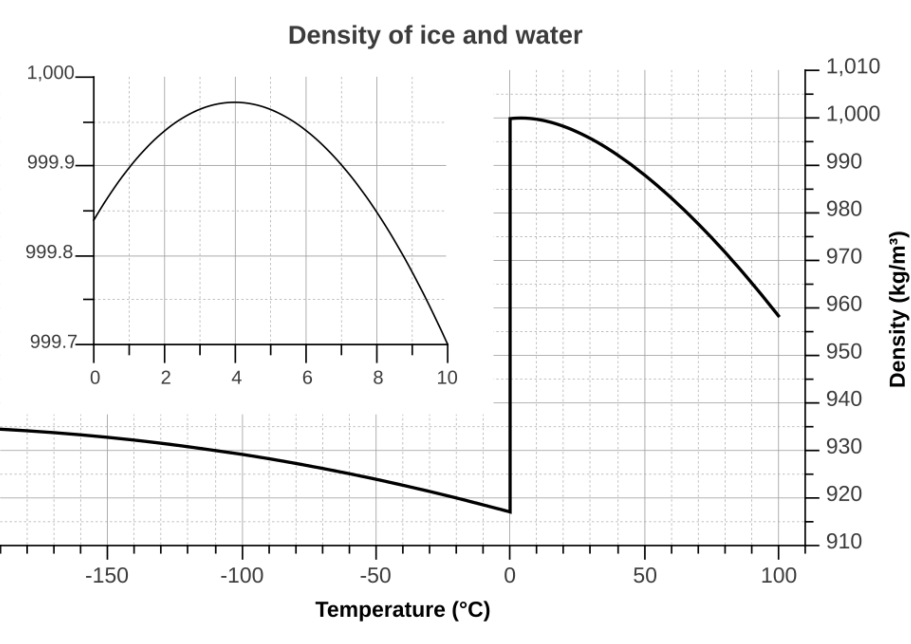
De plus, le diagramme de la masse volumique de l’eau en fonction de la température présente une autre anomalie unique : sa densité maximale est atteinte à 4 °C (précisément 3,98 °C), avec une valeur de 1000 kg/m³. C’est ce qui explique que les lacs sont rarement complètement gelés : l’eau la plus dense, à 4 °C, reste au fond à l’état liquide, sous les couches plus froides et la glace en surface. Les poissons peuvent ainsi survivre, même par grand froid, dans les eaux profondes des lacs.
2.1.7.2 Quelques ordres de grandeur de masse volumique20
| Substance | État | \(\rho\) (g/mL) |
|---|---|---|
| Bois de balsa | solide | 0,12 |
| Bois de chêne | solide | 0,75 |
| Aluminium | solide | 2,70 |
| Fer | solide | 7,87 |
| Plomb | solide | 11,3 |
| Or | solide | 19,3 |
| Éthanol | liquide | 0,79 |
| Huile d’olive | liquide | 0,91 |
| Eau | liquide | 1,00 |
| Glycérol | liquide | 1,26 |
| Mercure | liquide | 13,6 |
| Dihydrogène \(\ce{H2}\) | gaz (TPA) | 0,000 082 |
| Air | gaz (TPA) | 0,001 20 |
| Dioxyde de carbone \(\ce{CO2}\) | gaz (TPA) | 0,001 80 |
Remarques sur les masses volumiques
- Les gaz sont environ 1 000 fois moins denses que les liquides et les solides. Cette différence de densité est due à la distance entre les particules. En phase gazeuse, les molécules sont très éloignées les unes des autres, tandis qu’en phase condensée, elles sont en contact.
- Le mercure (Hg) a une masse volumique de 13,6 g/mL : un litre de mercure est donc 13,6 fois lourd qu’un litre d’eau et a une masse de 13,6 kg.
- Le bois (solide) flotte sur l’eau, donc sa masse volumique est à 1 g/cm\(^3\).
- La masse volumique du \(\ce{CO2}\) est que celle de l’air.
Exercices :
- Un sac contient 3000 pièces de 5 francs, du même type qu’à l’exercice précédent, pour une masse totale de 39,60 kg. On les immerge dans un seau contenant 50,0 dL d’eau : le niveau monte jusqu’à 96,7 dL. Quelle est la masse volumique d’une pièce ? Cette valeur est-elle cohérente avec celle trouvée à l’exercice précédent ?21
- 2,4 m³ d’air, de masse volumique \(1{,}2\) g/L à pression atmosphérique, sont comprimés dans une bouteille de 8 L. Quelle est la masse volumique de cet air comprimé, en kg/L ?22
- Quel diamètre, en centimètres, aurait une boule d’or ayant la masse d’une personne de 50 kg, sachant que la masse volumique de l’or est de 19,3 g/cm³ ?23
2.1.8 Les échelles de température : Celsius et kelvin
Un thermomètre indiquant la température en Celsius peut-il mesurer une température négative? Oui.
Est-ce que la température sur le même thermomètre de \(0\ ^\circ\text{C}\) est une absence totale d’agitation des particules de mercure? Non.
L’agitation thermique ne cesse théoriquement qu’à \(-273{,}15\ ^\circ\text{C}\), température appelée zéro absolu.
Le zéro absolu
À \(0\ \text{K}\), l’agitation thermique serait théoriquement nulle, une limite jamais atteinte en pratique.
En laboratoire, les physiciens se sont rapprochés du zéro absolu. Un record, établi en 2021 par une équipe allemande de l’Université de Brême, est de \(38\ \text{pK}\), soit \(38 \times 10^{-12}\ \text{K}\). Pour atteindre cette température, les chercheurs ont piégé environ 100 000 atomes de rubidium dans un champ magnétique, puis ont libéré ce nuage quantique depuis le sommet d’une tour de chute libre de 120 mètres, en microgravité. À cette température, la matière atteint un état quantique remarquable appelé condensat de Bose-Einstein : les atomes perdent leur individualité et se comportent comme un unique objet quantique macroscopique. L’agitation thermique n’y est pas nulle mais elle est réduite à son minimum absolu selon la physique actuelle.
L’échelle kelvin est indispensable pour les calculs, car son zéro correspond au zéro absolu — à l’absence totale d’agitation thermique.
Le problème du Celsius
Le problème de l’échelle Celsius est précisément là : son zéro ne correspond à aucune réalité physique universelle. L’échelle Celsius reste commode pour la vie courante, car calée sur l’eau (\(0\ ^\circ\text{C}\) pour la fusion, \(100\ ^\circ\text{C}\) pour l’ébullition), mais elle n’est jamais utilisée dans les équations scientifiques. Toute équation faisant intervenir la température produirait des résultats sans sens si on y injectait des degrés Celsius — multiplier ou diviser par un zéro arbitraire n’a pas de signification.
Formalisation : L’échelle kelvin (K), unité SI de température, a son zéro au zéro absolu. Une variation de \(1\ \text{K}\) est identique à une variation de \(1\ ^\circ\text{C}\). La relation de conversion est :
\[T_{\text{K}} = T_{^\circ\text{C}} + 273{,}15\]
Exemple : Quelle est la température en kelvin d’une salle à \(25\ ^\circ\text{C}\) ?
\[T_{\text{K}} = 25 + 273{,}15 = 298{,}15\ \text{K}\]
Attention : Cette relation est une fonction affine, non proportionnelle. La règle de trois est donc inapplicable entre Celsius et kelvin — doubler les degrés Celsius ne double pas la température en kelvin.
Exercices :
- Quelle est la température en kelvin d’un objet chauffé à \(100\ ^\circ\text{C}\) ?24
- Quelle est la température en Celsius d’un objet refroidi à \(52\ \text{K}\) ?25
- Quelle est la température de la salle en Celsius et en kelvin ?26
- Une eau à \(10\ ^\circ\text{C}\) est chauffée jusqu’à \(20\ ^\circ\text{C}\), soit une hausse de \(10\ ^\circ\text{C}\). Cette hausse correspond-elle à une hausse de 10 K ? Et la température en kelvin a-t-elle doublé ?27
2.1.8.1 La température observable dans le cosmos
Dans l’univers, la température moyenne du cosmos est d’environ \(2{,}7\ \text{K}\), vestige du rayonnement fossile émis quelques centaines de milliers d’années après le Big Bang.
Entre la Terre et le Soleil, la température fluctue considérablement en fonction de la position et des conditions d’irradiation.
En sortie de troposphère terrestre, elle atteint environ \(250\ \text{K}\). Dans le vide interplanétaire, à mi-distance du Soleil et hors irradiation directe, elle chute drastiquement à environ \(3\ \text{K}\).
À mesure que l’on s’approche du Soleil, la température remonte pour atteindre environ \(5800\ \text{K}\) à la photosphère — la couche la plus basse et la plus dense de l’atmosphère solaire, d’où provient l’essentiel de la lumière visible du Soleil (c’est pourquoi on la qualifie de « surface », bien que le Soleil, entièrement gazeux, n’ait aucune surface solide).
Cependant, un phénomène surprenant se produit : la couronne solaire, la couche la plus externe et la plus ténue de cette même atmosphère, qui s’étend à des millions de kilomètres au-delà de la photosphère, dépasse le million de kelvin (\(\sim 10^6\ \text{K}\)).
Ce paradoxe, où la couche externe de l’atmosphère solaire est des centaines de fois plus chaude que sa couche la plus basse, reste un mystère pour la physique moderne et constitue l’un des défis majeurs de l’astrophysique contemporaine.
| Situation | \(T\) (K) | \(T\) (\(^\circ\)C) |
|---|---|---|
| Record laboratoire (Brême, 2021) | \(38 \times 10^{-12}\) | \(-273{,}15\) |
| Rayonnement fossile (fond cosmique) | \(2{,}7\) | \(-270{,}5\) |
| Vide interplanétaire (hors irradiation) | \(\sim 3\) | \(\sim -270\) |
| Azote liquide | \(77\) | \(-196\) |
| \(\ce{CO2}\) solide — sublimation (glace sèche) | \(194{,}65\) | \(-78{,}5\) |
| Sortie de troposphère | \(\sim 250\) | \(\sim -23\) |
| Zéro Celsius (TPN) | \(273{,}15\) | \(0\) |
| Température ambiante (TPA) | \(298{,}15\) | \(25\) |
| Surface du Soleil (photosphère) | \(\sim 5 800\) | \(\sim 5 527\) |
| Couronne solaire | \(\sim 10^6\) | \(\sim 10^6\) |
2.1.9 L’échelle de taille : observation de l’univers à la longueur de Planck
Notre cerveau est naturellement calibré pour appréhender des objets d’échelle humaine, allant de quelques millimètres à quelques kilomètres. Au-delà de ces limites, les termes « immense » ou « minuscule » ne font que souligner notre difficulté à nous représenter réellement ces dimensions.
Dans cette section, nous entreprendrons un voyage logarithmique à travers l’univers, de l’immensité de 10²⁶ m jusqu’à la longueur de Planck, l’échelle la plus petite ayant un sens physique connu, d’environ 10⁻³⁵ m.
2.1.9.1 Échelle de taille entre \(10^{26}\ \text{m}\) et \(10^{6}\ \text{m}\) (téléscope a longueur d’onde variable)
L’échelle des tailles dans l’univers est vertigineuse.
Commençons notre voyage en partant de l’univers observable, qui s’étend sur environ \(10^{26}\ \text{m}\).
Qu’y a-t-il au-delà de cette limite ? Nous ne le saurons peut-être jamais : au-delà de \(10^{26}\ \text{m}\), la lumière n’a tout simplement pas eu le temps de nous atteindre depuis le Big Bang. Ce n’est pas un mur, mais un horizon – ce qui s’étend plus loin existe peut-être, mais restera à jamais hors de notre portée d’observation. L’Univers, d’un point de vue scientifique, est l’ensemble de la matière et de l’énergie distribuées dans l’espace-temps.
En zoomant dans l’univers, nous y trouvons, 1000 fois plus petits, d’énormes amas de galaxies, mesurant environ \(10^{23}\ \text{m}\).
Ensuite, environ 100 fois plus petites, les galaxies elles-mêmes, d’une taille d’environ \(10^{21}\ \text{m}\). Parmi ces galaxies se trouve la nôtre, la Voie lactée, avec un diamètre dans la moyenne de \(10^{21}\ \text{m}\).
Nous zoomons encore pour y trouver les nuages de poussière géants, comme la nébuleuse d’Orion, qui s’étend sur environ \(10^{17}\ \text{m}\).
En descendant encore, nous croisons les géantes de l’univers stellaire : les étoiles massives, au moins huit fois plus lourdes que notre Soleil. L’une d’elles, comme la supergéante rouge Bételgeuse, atteint un diamètre d’environ \(10^{12}\ \text{m}\) – de quoi engloutir l’orbite de Mars et s’approcher de celle de Jupiter si elle prenait la place du Soleil.
Au cœur de ces étoiles se joue toute la chimie de l’univers, la nucléosynthèse stellaire. Couche après couche, comme les pelures d’un oignon, les fusions des atomes composant l’univers y progresse : \(\text{H} \rightarrow \text{He} \rightarrow \text{C} \rightarrow \text{O} \rightarrow \ldots \rightarrow \text{Fe}\). Le fer est bien le dernier produit de fusion : au-delà, la fusion coûte de l’énergie au lieu d’en libérer – ce qui provoque l’effondrement du cœur et la mort de l’étoile en supernova. Mais alors, d’où viennent le plomb, l’or ou le mercure, plus lourds que le fer ? Ils ne viennent pas de la fusion – ils naissent par capture neutronique (processus s et r), lors de l’explosion en supernova ou de la fusion d’étoiles à neutrons.
En descendant encore, nous trouvons les petites étoiles comme la nôtre : les étoiles productrices d’hélium. Notre Soleil, avec un diamètre d’environ \(1{,}4 \times 10^{9}\ \text{m}\), est un petit gabarit dans sa catégorie – sa masse ne lui permettra jamais de fusionner au-delà de l’hélium. La Terre profite pleinement des éléments lourds produits par les étoiles massives pour construire la vie, mais ne fait, par la force des choses, pas grand-chose de l’hélium produit par notre Soleil.
Notre Soleil est naturellement l’étoile centrale de notre système solaire.
La planète la plus grande de notre système est Saturne, d’un diamètre environ 10 fois plus petit que celui du Soleil.
La Terre, elle, a un diamètre d’environ \(1{,}3 \times 10^{7}\ \text{m}\). Le rapport entre le diamètre du Soleil et celui de la Terre est d’environ 100, ce qui signifie qu’on pourrait aligner une centaine de Terres côte à côte sur le diamètre du Soleil !!!
La Lune, avec un diamètre d’environ \(3{,}5 \times 10^{6}\ \text{m}\), pourrait quant à elle être alignée un peu moins de quatre fois sur le diamètre de la Terre.
| Objet | Taille typique |
|---|---|
| Univers observable | \(\sim 10^{26}\ \text{m}\) |
| Filaments de matière noire | \(\sim 10^{24}\ \text{m}\) |
| Amas de galaxies | \(\sim 10^{23}\ \text{m}\) |
| Diamètre de la Voie lactée | \(\sim 10^{21}\ \text{m}\) |
| Nébuleuse d’Orion | \(\sim 10^{17}\ \text{m}\) |
| Diamètre d’une supergéante (ex. Bételgeuse) | \(\sim 10^{12}\ \text{m}\) |
| Distance Terre-Soleil | \(\sim 1{,}5 \times 10^{11}\ \text{m}\) |
| Diamètre du Soleil | \(\sim 1{,}4 \times 10^{9}\ \text{m}\) |
| Distance Terre-Lune | \(\sim 3{,}8 \times 10^{8}\ \text{m}\) |
| Rayon de la Terre | \(\sim 6{,}4 \times 10^{6}\ \text{m}\) |
| Diamètre de la Lune | \(\sim 3{,}5 \times 10^{6}\ \text{m}\) |
Exercices :
- La distance entre le Soleil et la Terre est d’environ \(1{,}5 \times 10^{2}\) gigamètres, et celle entre la Terre et Mars, lors d’une opposition favorable, d’environ \(5{,}5 \times 10^{7}\) km. Combien de Terres pourrions-nous aligner sur la distance Soleil-Terre, puis sur la distance Terre-Mars ?28
- Le diamètre du Soleil est d’environ \(1{,}4 \times 10^{9}\ \text{m}\), celui de la Terre d’environ \(1{,}3 \times 10^{7}\ \text{m}\). Le volume d’une sphère est donné par \(V = \dfrac{4}{3}\pi r^{3}\). En considérant le Soleil et la Terre comme des sphères, combien de Terres pourrait-on, en théorie, faire tenir dans le volume du Soleil ?29
2.1.9.2 Échelle de taille entre \(10^{6}\ \text{m}\) et \(100\ \mu\text{m}\) (oeil nu)
En descendant encore, nous atteignons des échelles familières.
La plus haute montagne du monde, l’Everest, culmine à \(8{,}8 \times 10^{3}\ \text{m}\) – et la fosse des Mariannes, point le plus profond des océans, plonge à \(\sim 1{,}1 \times 10^{4}\ \text{m}\) sous la surface.
En descendant encore, l’arbre le plus grand du monde – un séquoia californien nommé Hyperion – atteint \(115\ \text{m}\). Le pont Bessières, à Lausanne. Il mesure environ \(23\ \text{m}\) de hauteur – ce qui se déduit en comptant les étages des immeubles à ses pieds (\(\sim 7\ \text{étages} \times 3\ \text{m} \approx 21\ \text{m}\), une estimation proche de la valeur réelle). C’est une grandeur que nous pouvons visualiser, presque toucher du regard.
Nous trouvons ensuite des objets du quotidien que nous manipulons sans y penser : un grain de sel (\(\sim 0{,}5\ \text{mm}\)), un grain de sable (\(\sim 1\ \text{mm}\)), une fourmi (\(\sim 1\ \text{mm}\) de largeur de tête), ou encore un acarien (\(\sim 0{,}3\ \text{mm}\)). Ces objets sont encore visibles, dénombrables, saisissables.
La limite de résolution de l’œil nu se situe autour de \(0{,}1\ \text{mm}\) – soit \(10^{-4}\ \text{m}\). En pratique, le diamètre d’un cheveu humain, de \(\sim 100\ \mu\text{m}\), se trouve exactement à cette frontière : certains d’entre nous le distinguent à l’œil nu, d’autres non.
A la limite de ce que l’œil nu peut encore discerner, se cache quelque chose de remarquable : l’ovule humain. Avec ses \(\sim 100\ \mu\text{m}\), il est la plus grande cellule du corps humain – et l’une des rares cellules visibles sans instrument. La cellule à l’origine de chaque être humain tient dans un dixième de millimètre.
| Objet | Taille typique |
|---|---|
| Fosse des Mariannes (profondeur) | \(\sim 1{,}1 \times 10^{4}\ \text{m}\) |
| Everest (altitude) | \(\sim 8{,}8 \times 10^{3}\ \text{m}\) |
| Hyperion (séquoia, hauteur) | \(\sim 1{,}15 \times 10^{2}\ \text{m}\) |
| Pont Bessières (Lausanne) | \(\sim 2{,}3 \times 10^{1}\ \text{m}\) |
| Grain de sable | \(\sim 1\ \text{mm} = 10^{-3}\ \text{m}\) |
| Grain de sel | \(\sim 0{,}5\ \text{mm}\) |
| Acarien | \(\sim 0{,}3\ \text{mm}\) |
| Diamètre d’un cheveu | \(\sim 100\ \mu\text{m} = 10^{-4}\ \text{m}\) |
| Ovule humain | \(\sim 100\ \mu\text{m}\) |
En dessous de \(100\ \mu\text{m}\), l’œil nu capitule. Les objets qui peuplent cette tranche ne sont plus accessibles sans instrument – c’est là que le microscope optique prend le relais.
Exercices :
- Modélisons un cheveu comme un cylindre de diamètre \(100\ \mu\text{m}\) (son diamètre typique) et de longueur \(20\ \text{cm}\). Sachant que le volume d’un cylindre est donné par \(V = \pi r^{2} h\), calculez le volume d’un seul cheveu, en mètres cubes. Sachant qu’une tête compte en moyenne 100 000 cheveux, quel est le volume total de cheveux sur une tête, exprimé en dm³ ?30
2.1.9.3 Échelle de taille entre 100 µm et 500 nm (microscope optique)
Les objets de cette tranche ne sont plus accessibles sans instrument – et le premier outil qui s’impose est le microscope optique, capable de résoudre des détails jusqu’à environ \(0{,}5\ \mu\text{m}\).
La biologie cellulaire commence.
Le premier jalon de cette tranche est la cellule végétale (\(\sim 50\ \mu\text{m}\)) et le globule rouge (\(\sim 8\ \mu\text{m}\)) – deux objets biologiques emblématiques, invisibles à l’œil nu mais parfaitement résolvables au microscope optique.
En descendant, nous rencontrons les composants internes des cellules, les organites, comme les mitochondries (\(\sim 1{-}2\ \mu\text{m}\)), et les bactéries type E. coli (\(\sim 1\ \mu\text{m}\)).
Pour donner un sens concret à ces dimensions, mentionnons que l’atome fait environ \(0{,}1\ \text{nm}\) de diamètre. Les objets de cette tranche représentent donc entre \(\sim 5 \times 10^{5}\) atomes (à \(50\ \mu\text{m}\)) et \(\sim 1 \times 10^{4}\) atomes (à \(1\ \mu\text{m}\)) de largeur.
| Objet | Taille typique | Équivalent en atomes | Instrument |
|---|---|---|---|
| Cellule végétale | \(\sim 50\ \mu\text{m}\) | \(\sim 5 \times 10^{5}\) atomes | Microscope optique |
| Globule rouge | \(\sim 8\ \mu\text{m}\) | \(\sim 8 \times 10^{4}\) atomes | Microscope optique |
| Mitochondrie | \(\sim 2\ \mu\text{m}\) | \(\sim 2 \times 10^{4}\) atomes | Microscope optique |
| Bactérie (\(E.\ coli\)) | \(\sim 1\ \mu\text{m}\) | \(\sim 1 \times 10^{4}\) atomes | Microscope optique (limite) |
2.1.9.4 Échelle de taille entre 500 nm et 0,1 nm (microscope électronique et cristallographie X)
Nous approchons de l’autre extrémité de l’échelle de taille.
Dans cette tranche, nous quittons le monde du vivant pour entrer dans celui de la chimie moléculaire.
Le microscope optique utilise la lumière visible (\(\lambda \sim 400{-}700\ \text{nm}\)) : il a donc atteint sa limite.
Pour observer cette nouvelle tranche, il faut changer d’instrument – le microscope électronique prend le relais. La lumière est ainsi remplacée par un faisceau d’électrons.
Le microscope électronique couvre une plage étonnamment large. Contrairement à un microscope optique, la résolution pratique est limitée par les aberrations des lentilles électromagnétiques, bien plus difficiles à corriger que des lentilles en verre.
Concrètement :
- microscope électronique conventionnel : résolution \(\sim 0{,}1{-}0{,}2\ \text{nm}\) – la résolution atomique est déjà atteignable ;
- microscope électronique corrigé des aberrations (meilleurs instruments actuels) : jusqu’à \(\sim 0{,}05\ \text{nm}\), résolvant des atomes individuels.
Côté limite supérieure, un microscope électronique image sans problème des objets de plusieurs micromètres (coupes cellulaires, gros complexes protéiques, virus entiers). Son domaine d’observation réel s’étend donc de \(\sim 0{,}05\ \text{nm}\) à quelques \(\mu\text{m}\) – chevauchant à la fois le microscope optique (en haut) et la cristallographie aux rayons X (en bas). Historiquement, les structures de l’hémoglobine et de l’ADN ont été résolues par cristallographie aux rayons X (Perutz, Franklin) – mais aujourd’hui, la cryo-microscopie électronique atteint aussi la résolution quasi-atomique pour ces mêmes molécules, une prouesse qui a valu le prix Nobel de chimie 2017 à Jacques Dubochet, professeur à l’Université de Lausanne.
Les objets qui peuplent cette échelle sont d’abord à la limite du vivant, comme les virus (\(\sim 100\ \text{nm}\)). Très rapidement, cependant, il ne s’agit plus de cellules ou d’organites, mais d’assemblages d’atomes : des molécules. C’est à ce niveau que se trouvent les très grosses molécules biologiques comme certaines protéines (par exemple l’albumine : \(\sim 7\ \text{nm}\)), ou l’hémoglobine.
Les molécules plus modestes – comme le saccharose (sucre de table, \(\sim 1\ \text{nm}\)), la largeur d’une molécule d’ADN (\(\sim 2\ \text{nm}\)) ou une molécule d’eau (\(\ce{H2O}\), seulement \(0{,}3\ \text{nm}\)) – ferment la marche de cette tranche. En termes d’atomes, nous parlons d’objets entre \(\sim 50\) atomes (à \(5\ \text{nm}\)) et \(\sim 3\) atomes (à \(0{,}3\ \text{nm}\)) de largeur.
| Objet | Taille typique | Équivalent en atomes | Instrument |
|---|---|---|---|
| Virus (grippe) | \(\sim 100\ \text{nm}\) | \(\sim 1 \times 10^{3}\) atomes | Microscope électronique |
| Protéine (albumine) | \(\sim 7\ \text{nm}\) | \(\sim 70\) atomes | Microscope électronique (cryo-EM) |
| Hémoglobine | \(\sim 5\ \text{nm}\) | \(\sim 50\) atomes | Microscope électronique (cryo-EM) |
| ADN double brin (diamètre) | \(\sim 2\ \text{nm}\) | \(\sim 20\) atomes | Microscope électronique (cryo-EM) |
| Collagène (diamètre) | \(\sim 1{,}5\ \text{nm}\) | \(\sim 15\) atomes | Cristallographie X |
| Saccharose | \(\sim 1\ \text{nm}\) | \(\sim 10\) atomes | Cristallographie X |
| Molécule d’eau | \(\sim 0{,}3\ \text{nm}\) | \(\sim 3\) atomes | Cristallographie X |
2.1.9.5 Échelle de taille entre \(0{,}1\ \text{nm}\) et \(1\ \text{fm}\) (structure de l’atome)31
Nous atteignons ici l’atome lui-même.
Un atome a un diamètre d’environ \(0{,}1\ \text{nm} = 100\ \text{pm}\). Cette distance est si fréquente en physique atomique qu’elle porte son propre nom : l’ångström (Å), défini comme \(10^{-10}\ \text{m}\).
L’atome n’est pas la limite de la matière. Il possède une structure interne : un noyau central, entouré d’un nuage électronique composé d’électrons. Le noyau, constitué de protons et de neutrons, est extraordinairement petit – environ \(1\ \text{fm} = 10^{-15}\ \text{m}\) – soit \(10^{5}\) fois plus petit que l’atome lui-même. Ce rapport est difficile à saisir abstraitement ; une analogie permet de le visualiser.
Analogie – le noyau au centre d’un terrain de football :
Imaginons que le noyau d’un atome d’hydrogène soit agrandi à la taille d’une épingle (\(\varnothing = 1\ \text{mm}\)), placée au centre d’un terrain de football (100 m de longueur, 50 m de largeur).
Exercices :
- Quel est le rapport de taille atome/noyau ?32
- Considérer qu’un noyau d’atome soit agrandit à la taille d’un ballon de foot (diamètre d’un ballon de foot ≈ 22 cm). Est ce qu’un hectare de terrain suffit-il pour accueillir l’entier du nuage électronique ?33
- Si un atome était agrandi à la taille du pont Bessières (\(23\ \text{m}\)), quelle serait la taille de son noyau ? À quel objet du quotidien cela correspond-il ?34
2.1.9.6 Échelle de taille entre \(10^{-15}\ \text{m}\) et \(10^{-35}\ \text{m}\) (quarks et longueur de Planck)
En dessous de la taille des protons et des neutrons, les distances deviennent extraordinairement difficiles à mesurer directement. Nos théories actuelles considèrent les quarks, qui composent protons et neutrons, comme des particules ponctuelles, sans dimension mesurable – les expériences ne font que fixer des limites supérieures à une éventuelle sous-structure, sans jamais en révéler une taille propre.
Ensuite, il y a un énorme saut vers une distance appelée longueur de Planck : une limite inférieure à la notion même de distance. Cette longueur est une échelle théorique construite à partir des constantes fondamentales de la physique (vitesse de la lumière, constante de Planck, constante gravitationnelle).
En dessous de cette échelle, nos théories actuelles – relativité générale et mécanique quantique – cessent de faire des prédictions fiables. Certains physiciens pensent que l’espace lui-même pourrait y devenir granulaire, mais ce n’est pas un fait établi – c’est une question de recherche ouverte.
2.1.10 Les limites de la notion de distance
Les distances qui composent notre univers auraient donc deux limites.
- Une limite supérieure à ce que nous pouvons observer – indépassable, car la lumière la plus lointaine ne nous atteindra jamais pour en confirmer l’existence.
- Et une limite inférieure, celle de la longueur de Planck, où nos théories elles-mêmes s’arrêtent.
2.1.11 FIN DE SECTION 1 — Exercices de consolidation
- Voici une liste de grandeurs physiques, accompagnées pour certaines de leur formule de définition :
- la masse (\(m\))
- le temps (\(t\))
- la température (\(T\))
- l’intensité électrique (\(I\))
- la vitesse : \(v = d / t\)
- la force : \(F = m \cdot a\) (où \(a\) est une accélération, exprimée en \(\text{m}\cdot\text{s}^{-2}\))
- l’énergie cinétique : \(E_c = \frac{1}{2} m v^{2}\)
- la pression : \(P = F / A\)
- l’aire d’un carré : \(A = c \times c\) (où \(c\) est la longueur d’un côté)
Grandeurs dérivées :
- Vitesse : \(v = d/t \Rightarrow \text{m} / \text{s} = \text{m}\cdot\text{s}^{-1}\)
- Force : \(F = m \cdot a \Rightarrow \text{kg} \cdot \text{m}\cdot\text{s}^{-2}\) (newton, N)
- Énergie cinétique : \(E_c = \frac{1}{2}mv^{2} \Rightarrow \text{kg} \cdot (\text{m}\cdot\text{s}^{-1})^{2} = \text{kg}\cdot\text{m}^{2}\cdot\text{s}^{-2}\) (joule, J)
- Pression : \(P = F/A \Rightarrow \dfrac{\text{kg}\cdot\text{m}\cdot\text{s}^{-2}}{\text{m}^{2}} = \text{kg}\cdot\text{m}^{-1}\cdot\text{s}^{-2}\) (pascal, Pa)
- Aire : \(A = c \times c \Rightarrow \text{m} \times \text{m} = \text{m}^{2}\)
Parmi ces neuf grandeurs, lesquelles correspondent à l’une des sept unités fondamentales du SI ? Pour les grandeurs restantes (dérivées), déterminez leur unité en fonction des unités fondamentales, par analyse dimensionnelle.
Pour chacune des neuf grandeurs, indiquez si elle est extensive, intensive, ou si sa nature dépend du mode de combinaison des systèmes.35
- Convertissez la masse d’un proton (\(1{,}67\times10^{-24}\) g) en kilogrammes, puis en nanogrammes.36
- Convertir \(4{,}2\) centimètres en micromètres.37
- Convertir \(750\) milligrammes en kilogrammes.38
- Convertir \(0{,}066\) microsecondes en nanosecondes.39
- L’azote liquide bout à \(-196\ ^\circ\text{C}\). Exprimez cette température en kelvin.40
- Le record de froid en laboratoire, établi à Brême en 2021, est de 38 pK. Exprimez cette température en degrés Celsius.41
- Un cube d’aluminium, de masse volumique \(2{,}70\) g/cm³, a 3 cm de côté. Quelle est sa masse ? Quel est son poids sur la lune ?42
- Une sphère en acier, de 10 cm de diamètre, a une masse de 4,03 kg. On la partage en quatre parties égales. Quelle est la masse volumique de chaque partie ?43
- Un cylindre gradué vide pèse 27,08 g. Rempli de mercure, de masse volumique \(13{,}534\) kg/L, il pèse 365,43 g. Quel est le volume du cylindre ?44
- Le diamètre de la Terre est d’environ \(1{,}3 \times 10^{7}\ \text{m}\), sa masse d’environ \(5{,}97 \times 10^{24}\ \text{kg}\). Le diamètre de la Lune est d’environ \(3{,}5 \times 10^{6}\ \text{m}\), sa masse d’environ \(7{,}35 \times 10^{22}\ \text{kg}\). En considérant la Terre et la Lune comme des sphères (\(V = \dfrac{4}{3}\pi r^{3}\)), calculez leur masse volumique respective.45
- Une molécule d’eau a un diamètre d’environ \(0{,}28\ \text{nm}\). En la considérant comme une sphère (\(V = \dfrac{4}{3}\pi r^{3}\)), calculez le nombre de molécules d’eau contenues dans une baignoire remplie de 150 litres d’eau.46
- Calculez le nombre total d’atomes dans l’univers, sachant que l’on estime à \(2\times10^{12}\) le nombre de galaxies, à \(10^{11}\) le nombre moyen d’étoiles par galaxie, à \(2\times10^{30}\) kg la masse moyenne d’une étoile, et à \(1{,}67\times10^{-27}\) kg la masse d’un atome d’hydrogène.47
2.2 La constitution de l’atome et son symbole
2.2.1 Les particules élémentaires
Dans l’histoire… Dès le \(V^e\) siècle avant notre ère, Leucippe et Démocrite proposent que diviser la matière indéfiniment mène nécessairement à une particule insécable — l’atomos. L’idée reste marginale pendant vingt siècles, éclipsée par la théorie des quatre éléments. Il faudra attendre John Dalton (1803) pour que l’atome redevienne une hypothèse scientifique testable : il postule que chaque élément correspond à un type d’atome distinct et formule cinq hypothèses fondamentales — dont deux se révéleront fausses.
Le modèle standard de la physique des particules recense aujourd’hui dix-sept particules élémentaires, réparties en deux grandes familles.
Les fermions, qui constituent la matière, se divisent en:
- six quarks : up, down, charm, strange, top, bottom — qui s’assemblent par deux ou trois pour former des particules composites comme le proton ou le neutron
- six leptons (l’électron, le muon, le tau, et leurs trois neutrinos associés).
Les bosons, eux, sont les médiateurs des forces fondamentales :
- le photon pour l’électromagnétisme
- les huit gluons pour l’interaction forte
- les bosons W et Z pour l’interaction faible.
- Un dix-septième boson, le boson de Higgs, découvert en 2012 au CERN, complète ce tableau : il confère leur masse aux autres particules par son interaction avec elles.
Chaque fermion possède en outre une antiparticule de charge opposée mais de même masse — l’antimatière —, ce qui porte le compte total à plus d’une trentaine d’entités si l’on inclut ces symétriques.
En 1940, le physicien John Wheeler (1911–2008) téléphone à son jeune doctorant Richard Feynman (1918–1988) avec une idée saugrenue : et si tous les électrons de l’univers n’étaient en réalité qu’une seule et même particule, zigzaguant dans le temps — tantôt en avançant, tantôt en reculant ? Vu de face, cet électron voyageant à rebours apparaîtrait comme une particule de charge opposée : un positron - l’antiparticule de l’électron. Feynman transforme cette intuition en un outil de calcul rigoureux — aujourd’hui appelé l’interprétation de Stückelberg-Feynman — où, dans les diagrammes qui portent son nom, un positron se traite mathématiquement comme un électron d’énergie négative remontant le temps. Il faut préciser : il s’agit d’une équivalence formelle utile aux calculs, pas d’une preuve que le temps se remonte réellement. L’idée n’en demeure pas moins vertigineuse — au point d’avoir inspiré au réalisateur Christopher Nolan le principe central de son film Tenet (2020), où des objets et des personnes « inversés » remontent littéralement le fil du temps.
La gravité échappe encore à modèle particulaire: aucun boson médiateur (le hypothétique « graviton ») n’a jamais été observé.
2.2.2 Les trois particules composant la matière : \(p^+\), \(n^0\), \(e^-\)
Dans l’histoire… En 1895, Wilhelm Röntgen découvre fortuitement les rayons X — un signal invisible capable de traverser la matière, indice que quelque chose se joue à l’intérieur de l’atome. Deux ans plus tard, en 1897, Joseph Thomson confirme l’intuition : grâce au tube de Crookes, il découvre que l’atome contient des particules chargées négativement bien plus légères que lui, les électrons — l’atome de Dalton, considéré indivisible depuis un siècle, vient de s’effondrer.
Il est surprenant de réaliser que parmi le grand nombre de particules recensées par la physique des particules, la chimie n’en utilise que trois pour décrire l’ensemble de la matière : le proton (\(\text{p}^+\)), le neutron (\(\text{n}^0\)) et l’électron (\(\text{e}^-\)). Trois particules. Pas une de plus.
Ces trois particules s’organisent pour former les atomes — les briques fondamentales de toute la matière qui nous entoure. Les protons et les neutrons se regroupent au centre de l’atome pour former le noyau ; les électrons occupent le nuage électronique qui l’entoure.
Toute la chimie — des liaisons aux réactions, des acides aux métaux — se construit à partir de cet arrangement.
Formalisation : L’atome est constitué de trois types de particules :
| Particule | Symbole | Charge | Masse | Diamètre | Localisation |
|---|---|---|---|---|---|
| Proton | \(\text{p}^+\) | \(+1\) | \(1{,}673 \times 10^{-27}\ \text{kg}\) | \(\sim 1\ \text{fm}\) | Noyau |
| Neutron | \(\text{n}^0\) | \(0\) | \(1{,}675 \times 10^{-27}\ \text{kg}\) | \(\sim 1\ \text{fm}\) | Noyau |
| Électron | \(\text{e}^-\) | \(-1\) | \(9{,}109 \times 10^{-31}\ \text{kg}\) | \(\sim 0\) (ponctuel) | Nuage |
Nous allons voir que même si la structure de l’atome est radicalement contre-intuitive, son organisation est richement décrit grace aux théories des savants.
Dans un premier temps, étudions de plus près ces trois particules.
2.2.2.1 Masse des trois particules
Le proton et le neutron ont des masses quasi identiques.
L’électron, lui, est environ 1836 fois plus léger qu’un proton : sa contribution à la masse totale de l’atome est si négligeable que nous pouvons l’ignorer dans tous nos calculs de masse atomique.
Le proton et le neutron, eux, ne sont pas élémentaires : ce sont des particules secondaires, formées chacune de trois quarks.
- un proton contient deux quarks up et un quark down ;
- un neutron, deux quarks down et un quark up.
Mais voici un fait troublant : si nous additionnons les masses des trois quarks d’un proton ou d’un neutron, nous n’obtenons qu’environ 1 % de sa masse totale. Les 99 % restants proviennent de l’énergie de liaison entre ces quarks. La matière solide, dense, pesante que nous percevons est donc, au sens le plus rigoureux du terme, presque entièrement constituée d’énergie.
2.2.2.2 Les charges des trois particules
Dans l’histoire… C’est Robert Millikan qui, en 1909, mesure pour la première fois avec précision cette charge élémentaire — par sa célèbre expérience de la goutte d’huile — et en déduit du même coup la masse de l’électron. Il recevra le prix Nobel de physique en 1923.
Charge élémentaire relative ou en coulomb?: Les charges élémentaires relatives pour le proton de +1 et l’électron de -1 n’ont pas d’unité. La valeur absolue d’une charge élémentaire vaut en coulomb (\(e = 1{,}602 \times 10^{-19}\ \text{C}\)) — un nombre extraordinairement petit. La valeur en coulomb n’est que peu utilisée dans les premiers chapitres car les charges exprimées en charges élémentaires relatives sont largement suffisantes pour les modèles enseignés. La valeur précise d’une charge élémentaire en coulomb sera introduite lors du chapitre d’électrochimie.
Pour rappel, le proton et le neutron ne sont pas des particules élémentaires, mais des assemblages de quarks, dont les charges sont fractionnaires:
- \(+2/3\) pour le quark up
- \(-1/3\) pour le quark down
Ainsi:
-le proton (deux quarks up, un quark down) porte ainsi une charge de \(2/3 + 2/3 - 1/3 = +1\) ;
- le neutron (un quark up, deux quarks down) porte une charge de \(2/3 - 1/3 - 1/3 = 0\).
Contrairement à la masse — où la masse d’un proton n’est pas la simple somme des masses de ses quarks — la charge électrique, elle, s’additionne de façon parfaitement exacte. C’est ce qui explique que la charge du proton soit rigoureusement +1 et celle du neutron rigoureusement 0, sans aucune approximation.
Plus remarquable encore : la charge \(+1\) du proton est, à la précision expérimentale la plus fine connue, exactement de même intensité et de signe opposé à la charge \(-1\) de l’électron — alors que ces deux particules n’ont rien de commun sur le plan structurel (l’une est faite de quarks, l’autre est élémentaire). Cette égalité parfaite, appelée quantification de la charge, reste aujourd’hui l’un des faits les plus intrigants de la physique des particules.
2.2.2.3 Volume des trois particules
L’électron n’a aucune structure interne connue : aucune sous-structure n’a jamais été détectée. La théorie le décrit effectivement comme un point géométrique, de diamètre nul. Ce sont pourtant ces électrons ponctuels, organisés en nuage autour du noyau, qui définissent le volume de toute la matière que nous touchons, voyons et manipulons.
Le volume des protons et des neutrons est environ 100 000 fois inférieur à celui des atomes, mais non nul. Ils sont de plus enfouis en leur sein, donc presque insignifiants à l’échelle de la matière que nous connaissons.
Taper une table avec sa main ? On imagine spontanément que frapper une table, c’est un contact entre deux surfaces solides. En réalité, aucun noyau ne s’est jamais touché. Des milliards de milliards de nuages électroniques de la main se sont repoussés face aux milliards de milliards de nuages électroniques de la table.
Mais qu’est-ce qui empêche réellement ces nuages de se superposer ? La répulsion électrostatique entre charges de même signe y contribue, mais elle ne suffit pas à elle seule à expliquer la rigidité de la matière — une simple répulsion coulombienne pourrait, en théorie, être vaincue par une pression suffisante. Le véritable rempart est plus subtil : le principe d’exclusion de Pauli, une règle purement quantique sans équivalent classique, qui interdit à deux électrons d’occuper le même état quantique. C’est cette exclusion qui génère l’essentiel de la résistance de la matière à la compression — nous y reviendrons en détail dans le chapitre sur la structure électronique.
La matière est donc, à l’échelle particulaire, principalement constituée de vide. Nous approfondirons dans une prochaine section comment les nuages électroniques interagissent entre eux et avec la lumière pour donner à la matière ses propriétés macroscopiques apparentes.
2.2.3 Symbole chimique d’un atome
Dans l’histoire… C’est Jöns Jacob Berzelius (1813) qui introduit la notation symbolique moderne — une ou deux lettres par élément — remplaçant les symboles alchimiques et picturaux utilisés jusque-là. C’est grâce à lui que nous écrivons aujourd’hui \(\ce{H2O}\) et \(\ce{CO2}\).
Pour décrire un atome, nous avons besoin de décrire
- le noyau par le nombre de protons et le nombre de neutrons
- le nuage électronique par le nombre d’électrons.
\[^{A}_{Z}\text{X}^{q}\]
où
- X est le symbole chimique de l’élément
- A, Z et q sont décrits ci-dessous.
2.2.4 Le noyau par le numéro atomique \(Z\) et le nombre de masse \(A\)
Dans l’histoire… Henry Moseley (1913) démontre que l’identité d’un élément est déterminée par son numéro atomique \(Z\) — le nombre de protons — et non par sa masse, permettant de corriger les anomalies du tableau de Mendeleïev. Il meurt au combat en 1915, sans jamais recevoir le prix Nobel que plusieurs historiens des sciences jugent lui avoir été injustement refusé.
2.2.4.1 Définition du numéro atomique \(Z\) et du nombre de masse \(A\)
- Le numéro atomique \(Z\) est le nombre de proton (\(\text{p}^+\)) dans le noyau. Il définit l’identité chimique de l’élément — il est en quelque sorte le chef d’orchestre de tout atome : il lui attribue son nom, sa position dans le tableau périodique, et donne des informations sur la stabilité du nuage électronique.
- Illustration : tout atome avec \(Z = 6\) est appelé carbone, sans exception.
- Le nombre de masse \(A\) est le nombre total de nucléons - particules dans le noyau - (proton (\(\text{p}^+\)) et le neutron (\(\text{n}^0\))) dans le noyau : \(A = Z + N\), où \(N\) est le nombre de neutrons. Le nombre de neutrons influe sur la masse finale de l’atome, car le neutron pèse autant que le proton. Il joue également un rôle important sur la stabilité du noyau.
Exemple travaillé :
Le carbone le plus abondant possède 6 protons et 6 neutrons.
- \(Z = 6\) → élément : carbone (C)
- \(N = 6\) → \(A = 6 + 6 = 12\)
- Notation : \(^{12}_{6}\text{C}\)
Exercices
- Un noyau contient 3 protons. Son nuage électronique peut contenir 2, 3 ou 4 électrons selon les cas. Calculez la charge résiduelle \(q\) dans chacune de ces trois situations.48
- Un atome est composé de 27 neutrons, 25 protons et 23 électrons. Quelle est sa charge résiduelle, en unités de charge élémentaire \(e\) ? À quel élément appartient cet atome ?49
- L’atome de potassium possède 19 protons et 20 neutrons. Donnez son symbole complet \(^A_Z\text{X}\).50
- L’atome de sodium possède 11 protons et 12 neutrons. Donnez son symbole complet \(^A_Z\text{X}\) et précisez son nombre d’électrons.51
- Un atome possède \(Z = 8\) et \(A = 16\). De quel élément s’agit-il ? Combien de neutrons contient-il ? Donnez sa notation complète.52
2.2.5 Isotopes
Dans l’histoire… Frederick Soddy (1913) invente le mot isotope pour désigner ces éléments chimiquement identiques mais de masses différentes — du grec isos topos, « même place » dans le tableau périodique. La même année, J.J. Thomson construit un premier spectrographe et découvre ainsi les deux isotopes du néon, premier isotope stable jamais mis en évidence. En 1919, Francis Aston construit un spectrographe de masse bien plus précis : il prouve définitivement l’existence des isotopes pour de nombreux éléments et en mesure les masses avec exactitude — travaux récompensés par le prix Nobel de chimie en 1922. Il faudra attendre James Chadwick (1932) pour comprendre enfin pourquoi ces isotopes existent : la découverte du neutron, troisième brique de l’atome, résout le mystère.
Formalisation IUPAC : Les isotopes sont des atomes d’un même élément (\(Z\) identique) ayant un nombre de neutrons différent (donc \(A\) différent).
- Les isotopes de l’élément hydrogène H (\(Z = 1\)) :
| Isotope | \(Z\) | \(N\) | \(A\) | Abondance naturelle |
|---|---|---|---|---|
| \(^{1}_{1}\)H (protium) | 1 | 0 | 1 | 99,9885 % |
| \(^{2}_{1}\)H (deutérium) | 1 | 1 | 2 | 0,0115 % |
| \(^{3}_{1}\)H (tritium) | 1 | 2 | 3 | traces |
- Les isotopes de l’élément carbone C (\(Z = 6\)) :
| Isotope | \(Z\) | \(N\) | \(A\) | Abondance naturelle |
|---|---|---|---|---|
| \(^{12}_{6}\)C | 6 | 6 | 12 | 98,93 % |
| \(^{13}_{6}\)C | 6 | 7 | 13 | 1,07 % |
| \(^{14}_{6}\)C (radioactif) | 6 | 8 | 14 | traces |
- Les isotopes de l’élément oxygène O (\(Z = 8\)) :
| Isotope | \(Z\) | \(N\) | \(A\) | Abondance naturelle |
|---|---|---|---|---|
| \(^{16}_{8}\)O | 8 | 8 | 16 | 99,759 % |
| \(^{17}_{8}\)O | 8 | 9 | 17 | 0,037 % |
| \(^{18}_{8}\)O | 8 | 10 | 18 | 0,204 % |
Les isotopes de l’élément fluor F (\(Z = 9\)) :
| Isotope | \(Z\) | \(N\) | \(A\) | Abondance naturelle |
|---|---|---|---|---|
| \(^{19}_{9}\)F | 9 | 10 | 19 | 100 % |
2.2.5.1 Eau lourde
Il est par exemple courant de parler d’eau lourde. Pourquoi lourde ? Si nous regardons les isotopes pour l’hydrogène et l’oxygène, nous constatons que l’hydrogène existe sous les formes \(^1\text{H}\) et \(^2\text{H}\) (le \(^3\text{H}\) est radioactif), et que l’oxygène possède trois isotopes stables : \(^{16}\text{O}\), \(^{17}\text{O}\) et \(^{18}\text{O}\).
La très grande majorité de l’eau qui nous entoure, qui nous constitue, que nous buvons, est composée des isotopes majoritaires : \(^1\text{H}_2{}^{16}\text{O}\). Mais il existe des variantes naturelles plus lourdes :
- \(^1\text{H},^2\text{H},^{16}\text{O}\) — l’eau semi-lourde (HDO) : un atome d’hydrogène est remplacé par du deutérium, ajoutant 1 neutron à la molécule.
- \(^2\text{H}_2{}^{16}\text{O}\) — l’eau lourde (D\(_2\)O) : les deux hydrogènes sont du deutérium, soit 2 neutrons supplémentaires. C’est cette forme qui est utilisée comme modérateur dans certains réacteurs nucléaires.
- \(^1\text{H}_2{}^{17}\text{O}\) — une variante alourdie côté oxygène, dont le noyau \(^{17}\text{O}\) est actif en spectroscopie par résonance magnétique nucléaire (RMN).
Ces molécules sont chimiquement quasi-identiques à l’eau ordinaire, mais leur masse légèrement supérieure entraîne des différences mesurables : point d’ébullition, densité, vitesse de diffusion. C’est précisément cette sensibilité à la masse qui rend le \(^{18}\text{O}\) précieux en géologie : en analysant le rapport \(^{18}\text{O}/^{16}\text{O}\) dans les carottes de glace ou les sédiments marins, les géologues reconstituent les températures océaniques du passé sur des centaines de milliers d’années.
2.2.5.2 Datation et imagerie : les isotopes radioactifs au travail
Contrairement aux isotopes de l’eau lourde, tous stables, certains isotopes sont radioactifs – ils se désintègrent spontanément, à un rythme parfaitement prévisible. Cette instabilité, loin d’être un problème, est devenue l’un des outils les plus précieux de la science moderne.
Le carbone 14 (\(^{14}\text{C}\)) en est l’exemple le plus connu. Le carbone naturel existe sous trois isotopes : \(^{12}\text{C}\) et \(^{13}\text{C}\), stables, et \(^{14}\text{C}\), radioactif, produit en continu dans la haute atmosphère par le bombardement de l’azote atmosphérique par les rayons cosmiques. Tant qu’un organisme est vivant – qu’il respire ou se nourrit – il renouvelle son stock de \(^{14}\text{C}\) et maintient un rapport \(^{14}\text{C}/^{12}\text{C}\) constant. À sa mort, les échanges cessent : le \(^{14}\text{C}\) se désintègre alors sans être remplacé, avec une demi-vie d’environ 5730 ans. En mesurant ce qu’il en reste dans un fragment de bois, d’os ou de tissu, on remonte à la date de la mort de l’organisme – c’est la datation au carbone 14, fiable jusqu’à environ 50 000 ans.
Le fluor 18 (\(^{18}\text{F}\)) illustre l’autre extrême : là où le carbone 14 se compte en millénaires, le fluor 18 se compte en minutes. Sa demi-vie n’est que d’environ 110 minutes – il n’existe pas naturellement et doit être produit artificiellement, dans un cyclotron, juste avant son utilisation. Incorporé dans une molécule de glucose (le FDG, ou fluorodésoxyglucose), il est injecté dans l’organisme puis capté préférentiellement par les cellules les plus actives métaboliquement – notamment les cellules cancéreuses. Sa désintégration émet un positron, dont l’annihilation avec un électron produit deux photons gamma détectés par la caméra : c’est le principe de l’imagerie par tomographie par émission de positons (PET-scan), aujourd’hui incontournable en oncologie.
Un même phénomène – la désintégration radioactive à rythme fixe – permet ainsi de remonter des dizaines de milliers d’années dans le passé ou de photographier, en temps réel, l’activité métabolique d’une tumeur.
Exercices :
- Le tableau ci-dessus indique que le deutérium (\(^2\)H) et le tritium (\(^3\)H) sont tous deux des isotopes de l’hydrogène. Combien de protons et de neutrons chacun possède-t-il ? Ont-ils les mêmes propriétés chimiques ? Justifiez.53
- Le carbone-14 est-il un isotope du carbone-12, ou un isotope de l’azote-14 ? Justifiez votre réponse.54
- La répartition isotopique de l’oxygène, entre \(^{16}\text{O}\) et \(^{18}\text{O}\), est utilisée en paléoclimatologie pour reconstituer les températures anciennes. Sur quel principe physique cette méthode repose-t-elle ?55
2.2.6 Le nuage électronique par la charge résiduelle \(q\)
La charge résiduelle \(q\) est une mesure indirecte du nombre d’électrons. Plutôt que de mentionner directement le nombre d’électrons, la convention retient la différence de charge entre les charges présentes dans le noyau (somme des charges positives des protons) et les charges présentes dans le nuage électronique (somme des charges négatives des électrons) :
\[q = Z - n_e\]
où \(n_e\) est le nombre d’électrons du nuage électronique.
Le nombre d’électrons dans le nuage électronique joue un rôle déterminant dans l’apparence et la stabilité de la matière :
- Illustration : le nuage électronique d’un noyau composé de 17 protons peut accueillir 17 ou 18 électrons.
- Le nombre de neutrons n’influe pas sur le nuage électronique.
- L’atome avec 17 protons et 17 électrons a une charge résiduelle \(q = 17 - 17 = 0\).
- L’atome avec 17 protons et 18 électrons a une charge résiduelle \(q = 17 - 18 = -1\).
Par convention, lorsque la charge élémentaire résiduelle est nulle (\(q = 0\)), elle n’est pas indiquée.
La charge résiduelle \(q\) a un rôle immense en chimie. Nous touchons même au cœur de la chimie. N’allons pas trop loin dans les explications pour l’instant, mais gardez en tête que le nombre d’électrons dans le nuage d’un noyau joue un rôle fondamental dans l’apparence, le comportement et les propriétés chimiques de la matière.
Exemple travaillé :
Quelle est la charge résiduelle des combinaisons atomiques suivantes :
- Un noyau composé de 3 protons et un nuage de 3 électrons ?
- \(3\text{ p}^+ - 3\text{ e}^- = 0\). Charge résiduelle nulle (\(q = 0\)).
- Un noyau composé de 3 protons et un nuage de seulement 2 électrons ?
- \(3\text{ p}^+ - 2\text{ e}^- = +1\). Charge résiduelle de \(+1\).
- Un noyau composé de 9 protons et un nuage de 10 électrons ?
- \(9\text{ p}^+ - 10\text{ e}^- = -1\). Charge résiduelle de \(-1\).
Pour rappel :
- \(Z\) détermine les propriétés chimiques potentielles d’une structure atomique, car le nombre de charges positives dans le noyau influence directement le nombre d’électrons qui produira la stabilité du nuage électronique.
- \(A\) donne une information sur la masse par le biais du nombre de nucléons.
Ainsi :
- Deux atomes de même \(Z\) et de même \(q\) mais de \(A\) différent sont chimiquement identiques mais de masses différentes.
- Deux atomes de même \(Z\) et de même \(A\) mais de \(q\) différent sont chimiquement différents, mais de masses quasi identiques — la masse de l’électron est négligeable devant celle des nucléons.
Exercices — charge résiduelle q :
- Un noyau composé de 9 protons est entouré d’un nuage de 10 électrons. Quelle est sa charge résiduelle ?56
- Un atome a une charge résiduelle nulle et compte 15 protons dans son noyau. Combien d’électrons possède-t-il ?57
- Un ion a une charge résiduelle de \(+3\) et un noyau composé de 13 protons. Combien d’électrons possède-t-il ? De quel élément s’agit-il ?58
Notion clé — Qu’entend-on par « stable » ?
En chimie comme en physique, dire qu’un système est stable, c’est dire qu’il se trouve dans un état d’énergie minimale : sa transformation n’est pas favorisée. Imaginez une bille déposée au fond d’un bol — elle y reste naturellement. Si vous la placez sur le bord, elle roule vers le bas dès que vous la lâchez. Le fond du bol, c’est l’état stable.
Stabilité nucléaire. Au sein du noyau, l’équilibre entre le nombre de protons et le nombre de neutrons détermine si le noyau est stable ou s’il tend à se désintégrer. Les règles qui gouvernent cet équilibre relèvent de la physique nucléaire — elles dépassent le cadre de ce cours.
Que devient un noyau instable ? Un noyau instable ne reste pas éternellement dans cet état : il se désintègre, en émettant une particule, pour atteindre une configuration plus stable. Trois grands types d’émission existent :
- Désintégration alpha (α) : le noyau éjecte une particule alpha — qui n’est autre qu’un noyau d’hélium (2 protons + 2 neutrons, \(^{4}_{2}\text{He}^{2+}\)). Le nombre de masse \(A\) diminue de 4, le numéro atomique \(Z\) diminue de 2.
- Désintégration bêta moins (β⁻) : un neutron du noyau se transforme en proton, en émettant un électron (la particule bêta) — le même électron que celui du nuage électronique, mais éjecté du noyau cette fois. \(Z\) augmente de 1, \(A\) reste inchangé.
- Désintégration bêta plus (β⁺) : un proton du noyau se transforme en neutron, en émettant cette fois un positron — l’antiparticule de l’électron (même masse, charge opposée +1). Attention à ne pas confondre le positron avec l’antiproton : le positron est l’antiparticule de l’électron, pas celle du proton — ce sont deux particules totalement différentes. \(Z\) diminue de 1, \(A\) reste inchangé.
À ces trois émissions s’ajoute presque toujours une particule quasi indétectable qui accompagne systématiquement les désintégrations bêta : le (anti)neutrino. Nous y reviendrons.
Stabilité électronique. Dans le nuage électronique, certaines configurations d’électrons sont énergétiquement favorisées : elles correspondent à un état d’énergie plus basse, vers lequel le système évolue spontanément.
C’est ce principe — l’évolution spontanée vers une configuration électronique d’énergie plus basse, donc vers un état plus favorable — qui explique la formation des liaisons chimiques, la réactivité des éléments et les propriétés de la matière. Tout au long de ce manuel, lorsque nous dirons qu’un atome gagne en stabilité, nous voulons dire qu’il atteint un état énergétique plus favorable, c’est-à-dire d’énergie plus basse.
- Pourquoi certaines combinaisons protons-neutrons sont-elles stables et d’autres pas ? Le présent manuel n’y donne aucune explication — c’est une question qui appartient à la physique nucléaire, au-delà du cadre de ce cours.
- Illustration : un noyau composé de 17 protons peut être trouvé dans la nature avec 18 neutrons. Mais ce même nombre de protons peut aussi se trouver accompagné de 20 neutrons. Ces deux combinaisons (configurations nucléaires) sont des arrangements rencontrés dans l’univers de manière significative. Aucune autre configuration nucléaire ne se maintient de façon stable dans l’univers.
2.2.7 Table des isotopes (extrait Z = 0 à Z = 18)
| Z | Nom | Symbole | A | Masse atomique (u) | Abondance (%) | Demi-vie et type d’émission |
|---|---|---|---|---|---|---|
| 0 | électron | \(\text{e}^-\) | 0 | 0,000 548 | ||
| 0 | neutron | n | 1 | 1,008 665 | 10,6 min, \(\beta^-\) | |
| 1 | proton | p | 1 | 1,007 276 | ||
| 2 | alpha | \(\alpha\) | 4 | 4,001 506 | ||
| 1 | hydrogène | H | 1 | 1,007 825 | 99,985 | |
| 1 | deutérium | D | 2 | 2,014 102 | 0,015 | |
| 1 | tritium | T | 3 | 3,016 050 | (0,0001) | 12,33 a, \(\beta^-\) |
| 2 | hélium | He | 3 | 3,016 029 | 0,000 14 | |
| 2 | hélium | He | 4 | 4,002 603 | 99,998 | |
| 3 | lithium | Li | 6 | 6,015 123 | 7,52 | |
| 3 | lithium | Li | 7 | 7,016 005 | 92,482 | |
| 4 | béryllium | Be | 7 | 7,016 930 | 53,3 d, \(\gamma\) | |
| 4 | béryllium | Be | 8 | 8,005 305 | ||
| 4 | béryllium | Be | 9 | 9,012 183 | 100,00 | |
| 4 | béryllium | Be | 10 | 10,013 535 | 2,7 Ma, \(\beta^-\) | |
| 5 | bore | B | 10 | 10,012 938 | 19,8 | |
| 5 | bore | B | 11 | 11,009 305 | 80,2 | |
| 6 | carbone | C | 11 | 11,011 434 | 20,4 min, \(\beta^+\) | |
| 6 | carbone | C | 12 | 12,000 000 | 98,892 | |
| 6 | carbone | C | 13 | 13,003 355 | 1,108 | |
| 6 | carbone | C | 14 | 14,003 242 | \(1{,}3 \times 10^{-10}\) | 5730 a, \(\beta^-\) (0,158) |
| 7 | azote | N | 13 | 13,005 739 | 9,96 min, \(\beta^+\) (1,20) | |
| 7 | azote | N | 14 | 14,003 074 | 99,635 | |
| 7 | azote | N | 15 | 15,000 109 | 0,365 | |
| 7 | azote | N | 16 | 16,006 100 | 7,13 s, \(\beta^-\) | |
| 7 | azote | N | 17 | 17,008 450 | 4,17 s, \(\beta^-\) | |
| 8 | oxygène | O | 15 | 15,003 066 | 122 s, \(\beta^+\) | |
| 8 | oxygène | O | 16 | 15,994 915 | 99,759 | |
| 8 | oxygène | O | 17 | 16,999 130 | 0,037 | |
| 8 | oxygène | O | 18 | 17,999 159 | 0,204 | |
| 9 | fluor | F | 18 | 18,000 950 | 1,87 h, \(\beta^+\) | |
| 9 | fluor | F | 19 | 18,998 403 | 100 | |
| 10 | néon | Ne | 20 | 19,992 439 | 90,92 | |
| 10 | néon | Ne | 22 | 21,991 383 | 8,82 | |
| 11 | sodium | Na | 22 | 21,994 435 | 2,602 a, \(\beta^+\), \(\gamma\) | |
| 11 | sodium | Na | 23 | 22,989 768 | 100 | |
| 11 | sodium | Na | 24 | 23,990 963 | 15 h, \(\beta^-\), \(\gamma\) | |
| 12 | magnésium | Mg | 23 | 22,994 127 | 9,5 min, \(\beta^-\) | |
| 12 | magnésium | Mg | 24 | 23,985 043 | 78,60 | |
| 12 | magnésium | Mg | 27 | 26,983 346 | 9,46 min, \(\beta^-\) (1,75) | |
| 13 | aluminium | Al | 27 | 26,981 541 | 100 | |
| 13 | aluminium | Al | 29 | 28,980 530 | 6,7 min, \(\beta^-\) (2,5) | |
| 14 | silicium | Si | 27 | 26,986 703 | 4,16 s, \(\beta^+\) (3,85) | |
| 14 | silicium | Si | 28 | 27,976 928 | 92,27 | |
| 14 | silicium | Si | 30 | 29,973 770 | 3,05 | |
| 14 | silicium | Si | 31 | 30,975 349 | 2,62 h, \(\beta^-\), \(\gamma\) | |
| 15 | phosphore | P | 30 | 29,978 308 | ||
| 15 | phosphore | P | 31 | 30,973 762 | 100 | |
| 15 | phosphore | P | 32 | 31,973 906 | 14,28 d, \(\beta^-\) (1,71) | |
| 16 | soufre | S | 32 | 31,972 071 | 95,05 | |
| 16 | soufre | S | 35 | 34,969 030 | 87,4 d, \(\beta^-\) (0,167) | |
| 16 | soufre | S | 36 | 35,967 091 | 0,016 | |
| 17 | chlore | Cl | 35 | 34,968 853 | 75,4 | |
| 17 | chlore | Cl | 36 | 35,968 312 | 0,4 Ma, \(\beta^-\) (0,71) | |
| 17 | chlore | Cl | 37 | 36,965 903 | 24,6 | |
| 17 | chlore | Cl | 38 | 37,968 002 | 37,3 min, \(\beta^-\) (4,8) | |
| 18 | argon | Ar | 37 | 36,966 772 | 35 d, CE | |
| 18 | argon | Ar | 40 | 39,962 384 | 99,600 | |
| 18 | argon | Ar | 41 | 40,964 508 | 1,82 h, \(\beta^-\) (1,20) |
2.2.8 FIN DE SECTION 2 — Exercices de consolidation
- Un atome a 6 protons et 6 neutrons.
- Quel est son nombre de masse ?
- De quel élément s’agit-il ?59
- Un atome a 17 protons, 20 neutrons et 17 électrons.
- Quelle est sa charge résiduelle ?
- De quel élément s’agit-il ?60
- Un atome a 17 protons, 18 neutrons et 18 électrons.
- Quelle est sa charge résiduelle ?
- Donnez son symbole complet.61
- Vrai ou faux, et justifiez votre réponse : deux atomes de même numéro atomique \(Z\) mais de nombre de masse \(A\) différent ont des propriétés chimiques différentes.62
- Deux atomes ont chacun 17 protons ; l’un possède 18 neutrons, l’autre 20. Sont-ils isotopes du même élément ? Justifiez.63
- Vrai ou faux : la charge résiduelle d’un atome neutre est toujours nulle.64
- Un noyau contient 92 protons et 143 neutrons. Quel est son nombre de masse ? De quel élément s’agit-il ?65
- Un ion possède 26 protons, un nombre de masse de 56 et une charge résiduelle de \(+2\). Combien d’électrons possède-t-il ? De quel élément s’agit-il ?66
- Un atome d’or (\(Z=79\)) perd 3 électrons. Quelle est sa charge résiduelle ? Combien d’électrons lui reste-t-il ?67
- Deux isotopes ont-ils nécessairement le même nombre de neutrons ? Construisez un contre-exemple pour justifier votre réponse.68
- Un atome neutre a un nombre de masse de 40 et 21 neutrons. Quel est son numéro atomique ? De quel élément s’agit-il ?69
- (exercice capstone) Un atome neutre de potassium (\(Z=19\)) a un nombre de masse de 39. Donnez son nombre de protons, de neutrons et d’électrons. S’il perd un électron, que devient sa charge résiduelle ? Citez une propriété de l’atome qui change alors, et une qui ne change pas.70
2.3 Le noyau et la masse molaire
2.3.1 Calcul de la masse volumique de l’atome d’hydrogène et de son noyau
Dans l’histoire… En 1911, Ernest Rutherford bombarde une fine feuille d’or avec des particules alpha : la plupart traversent sans dévier, mais quelques-unes rebondissent violemment. Il en déduit que la masse de l’atome est concentrée dans un noyau minuscule et chargé positivement, entouré d’un espace immense et vide — cent mille fois plus petit que l’atome lui-même. Le modèle du plum-pudding de Thomson vient de s’effondrer à son tour.
Dans le tableau périodique : Ainsi, le nombre de protons est le patron — celui qui définit la position de l’atome dans le tableau périodique. Ce dernier se lit comme un texte, de gauche à droite et de haut en bas : l’élément 1 est le noyau avec 1 proton, l’élément 2 est le noyau avec 2 protons, l’élément 3 est le noyau avec 3 protons, et ainsi de suite. Mais le nombre de neutrons peut varier d’un atome à l’autre du même élément — et cela a des conséquences sur la masse, sans toucher à l’identité chimique.
Avant d’approfondir la description des atomes, examinons, par un calcul simple de masse volumique, l’étrangeté des atomes. Prenons l’atome le plus simple de l’univers, l’atome d’hydrogène, qui se compose d’un seul proton dans son noyau (pas de neutron) et d’un seul électron dans son nuage électronique. Et ensuite, nous calculerons la masse volumique d’un noyau.
Calcul de la masse volumique de l’atome d’hydrogène
Dans le calcul suivant, nous assimilons l’atome d’hydrogène à une sphère de diamètre \(d_{\text{atome}} = 0{,}1\ \text{nm} = 10^{-10}\ \text{m}\).
Étape 1 — Volume de l’atome : \[V_{\text{atome}} = \frac{4}{3}\pi \left(\frac{d}{2}\right)^3 = \frac{4}{3}\pi \left(\frac{10^{-10}}{2}\right)^3 = \frac{4}{3}\pi \times (5 \times 10^{-11})^3 \approx 5{,}24 \times 10^{-31}\ \text{m}^3\] Étape 2 — Masse de l’atome : La masse de l’électron étant négligeable, on retient uniquement celle du proton : \[m_{\text{H}} \approx m_{\text{p}} = 1{,}673 \times 10^{-27}\ \text{kg}\] Étape 3 — Masse volumique : \[\rho_{\text{atome}} = \frac{m}{V} = \frac{1{,}673 \times 10^{-27}\ \text{kg}}{5{,}24 \times 10^{-31}\ \text{m}^3} \approx 3{,}2 \times 10^{3}\ \text{kg/m}^3\] = \(3{,}2\ \text{g/cm}^3\)
La masse volumique de l’atome d’hydrogène — noyau et nuage électronique confondus — est de l’ordre de \(3{,}2\ \text{g/cm}^3\).
À titre de comparaison, la masse volumique de l’eau est \(1{,}0\ \text{g/cm}^3\) et celle du plomb \(11{,}3\ \text{g/cm}^3\).
Ainsi de manière assez approximative, nous constatons que la masse volumique de l’atome d’hydrogène est de l’ordre de grandeur de la matière ordinaire qui nous entoure.
Calcul de la masse volumique du noyau de l’atome d’hydrogène
Refaisons le même calcul, cette fois en ne considérant que le noyau : un proton seul, de diamètre \(d_{\text{noyau}} = 1\ \text{fm} = 10^{-15}\ \text{m}\).
Étape 1 — Volume du noyau : \[V_{\text{noyau}} = \frac{4}{3}\pi \left(\frac{10^{-15}}{2}\right)^3 = \frac{4}{3}\pi \times (5 \times 10^{-16})^3 \approx 5{,}24 \times 10^{-46}\ \text{m}^3\] Étape 2 — Masse du noyau : La masse du noyau est celle du proton : \[m_{\text{p}} = 1{,}673 \times 10^{-27}\ \text{kg}\] Étape 3 — Masse volumique du noyau : \[\rho_{\text{noyau}} = \frac{m_{\text{p}}}{V_{\text{noyau}}} = \frac{1{,}673 \times 10^{-27}\ \text{kg}}{5{,}24 \times 10^{-46}\ \text{m}^3} \approx 3{,}2 \times 10^{18}\ \text{kg/m}^3\]
Convertissons en \(\text{g/cm}^3\) pour mieux apprécier le résultat : \[\rho_{\text{noyau}} = 3{,}2 \times 10^{18}\ \text{kg/m}^3 \times \frac{10^3\ \text{g}}{1\ \text{kg}} \times \frac{1\ \text{m}^3}{10^6\ \text{cm}^3} = 3{,}2 \times 10^{15}\ \text{g/cm}^3\]
La masse volumique du noyau de l’atome d’hydrogène, qui s’avère être donc la masse volumique du proton, est d’environ \(2{,}3 \times 10^{14}\ \text{g/cm}^3\).
Cette densité est si extrême qu’elle évoque non plus la matière du quotidien, mais les objets les plus denses de l’univers — les étoiles à neutrons, ces astres effondrés où une cuillère à café de matière pèserait un milliard de tonnes.
Ce n’est pas un hasard : la matière d’une étoile à neutrons est, essentiellement, un noyau atomique géant, où gravité et pression ont écrasé les atomes jusqu’à cette même densité nucléaire — et ce sont précisément ces astres, ou leur fusion, qui forgent par capture neutronique les éléments les plus lourds de l’univers, comme le plomb, l’or et le mercure que nous avons croisés plus haut.
Le noyau atomique n’est pas une abstraction : c’est l’état le plus dense que la matière ordinaire puisse atteindre — et les physiciens en connaissent la valeur précise depuis moins d’un siècle.
Comparaison de masse volumique
| Objet | Masse volumique approximative |
|---|---|
| Eau liquide | \(1\ \text{g/cm}^3\) |
| Atome d’hydrogène (sphère) | \(\sim 3{,}2\ \text{g/cm}^3\) |
| Plomb | \(11\ \text{g/cm}^3\) |
| Noyau atomique | \(\sim 3{,}2 \times 10^{15}\ \text{g/cm}^3\) |
| Étoile à neutrons | \(\sim 10^{15}\ \text{g/cm}^3\) |
Exercices :
- Recalculez la masse volumique d’un atome de carbone, assimilé à une sphère de 154 pm de diamètre et de masse environ 12 u. Comparez le résultat à la masse volumique de l’eau.71
- Le noyau d’un atome d’or a un rayon d’environ 7 fm et une masse d’environ 197 u. Calculez sa masse volumique et comparez-la à celle du noyau d’hydrogène, environ \(3{,}2\times10^{15}\) g/cm³.72
2.3.2 L’unité de masse atomique (u)
Dans l’histoire… En 1803, John Dalton propose la première échelle de masses atomiques relatives, en prenant l’hydrogène comme référence (H = 1) — mais ses mesures restent grossières. Jöns Jacob Berzelius (1818, puis révisée en 1826) publie des tables bien plus précises, en s’appuyant cette fois sur l’oxygène comme référence (O = 100, puis O = 16) : l’oxygène se combine avec un plus grand nombre d’éléments, ce qui permet des mesures bien plus fiables. Pendant plus d’un siècle, chimistes et physiciens continuent pourtant à se disputer la référence idéale — les uns préfèrent l’oxygène naturel, les autres l’isotope \(^{16}\text{O}\) pur. En 1961, l’IUPAC tranche : le \(^{12}\text{C}\) devient la référence universelle, fixée à exactement 12 u. Ce compromis réconcilie les deux communautés et donne naissance à l’unité de masse atomique moderne.
En pratique, les masses atomiques sont si petites (\(\sim 10^{-24}\ \text{g}\)) qu’une unité adaptée s’est imposée, l’unité de masse atomique (u).
Formalisation IUPAC : Le \(^{12}\text{C}\) est fixé à 12 u. L’unité de masse atomique (u, aussi notée Da — dalton) est définie comme \(\frac{1}{12}\) de la masse de l’atome \(^{12}\text{C}\) :
\[1\ \text{u} = m(^{12}\text{C})/12 = 1{,}66054 \times 10^{-24}\ \text{g}\]
Mais comment passe-t-on de « 12 u par définition » à une valeur en grammes ?
Ce manuel a pris le parti de définir en gramme l’unité \(u\) avant la définition du nombre d’Avogadro. Mais nous comprenons que la définition de l’unité de masse atomique fixe une proportion (1/12 de la masse du \(^{12}\text{C}\)), pas une valeur absolue en grammes – il faut encore savoir combien d’atomes de \(^{12}\text{C}\) composent une masse que l’on peut effectivement peser sur une balance de laboratoire. C’est précisément ce que mesure le nombre d’Avogadro \(N_A\).
Une nuance historique. Avant 2019, le nombre d’Avogadro était justement défini ainsi : le nombre exact d’atomes contenus dans 12 g de \(^{12}\text{C}\). Ce nombre n’était donc pas fixé a priori — il fallait le mesurer expérimentalement, avec la précision permise par la technologie de l’époque. Depuis la redéfinition du Système international en 2019, la logique s’est inversée : \(N_A = 6{,}02214076 \times 10^{23}\ \text{mol}^{-1}\) est désormais une valeur fixée par définition, exacte par convention. C’est la relation « 12 g de \(^{12}\text{C}\) contiennent \(N_A\) atomes » qui devient, à l’inverse, une conséquence mesurée — extrêmement précise, mais plus tout à fait exacte au sens strict. Cette distinction reste invisible dans la pratique de tous les jours, mais elle illustre bien comment les définitions des unités évoluent avec la précision de nos instruments de mesure. Nous y reviendrons en détail lors du chapitre consacré à la mole.
Exercice: Calculons la masse en u d’un proton, d’un neutron et d’un électron:
Dans cette unité, un proton et un neutron ont une masse un peu plus grande que 1 u, nous y reviendrons. Un électron a lui une masse environ 1836 fois plus petite, d’environ \(5{,}5 \times 10^{-4}\ \text{u}\) (négligeable).
Pourquoi l’\(u\) est une unité si bien choisie?
Nous comprenons que l’unité u est rigoureusement 1/12 de la masse d’un carbone 12 \(^{12}\)C, et pour cause : c’est lui qui définit l’unité.
Donc la masse moyenne d’un nucléon dans le noyau de \(^{12}\)C est exactement 1,000 u par déduction.
Pour tous les autres atomes, la valeur n’est qu’approchée, car — comme nous allons le voir dans la section d’après — la masse d’un nucléon dans un noyau n’est pas strictement constante : elle dépend de la composition du noyau!
Mais malgré tout, la définition de l’u révèle ainsi une cohérence remarquable : puisque chaque nucléon a une masse d’environ 1 u dans un noyau, la masse d’un atome exprimée en u est approximativement égale à son nombre de masse \(A\).
Cette approximation rend l’unité particulièrement intuitive.
Mise en pratique:
- Quelle est la masse approximative de \(^{1}\)H ? Environ 1 u.
- Celle de \(^{17}\)O ? Environ 17 u.
2.3.2.1 Exercices — L’unité de masse atomique (u)
- En utilisant l’approximation « masse en u ≈ nombre de masse A », estimez la masse approximative des atomes suivants : \(^{23}\)Na, \(^{35}\)Cl, \(^{56}\)Fe, \(^{238}\)U. Expliquez en une phrase pourquoi cette approximation fonctionne.73
- Un atome a une masse de \(3{,}3211 \times 10^{-23}\) g. Exprimez cette masse en unités u (donnée : \(1\ \text{u} = 1{,}66054 \times 10^{-24}\) g). De quel atome pourrait-il s’agir ?74
2.3.3 Défaut de masse et énergie de liaison
Dans l’histoire… Albert Einstein (1905) publie la relation \(E = mc^2\) comme conséquence quasi accessoire de la relativité restreinte, dans un article de trois pages. Ce n’est que vingt ans plus tard, avec les premières mesures précises de masses nucléaires par Aston, que les physiciens réalisent que cette équation prédit exactement le défaut de masse observé. Lise Meitner et Otto Frisch (1938) sont les premiers à comprendre que la fission de l’uranium libère de l’énergie précisément par ce mécanisme — une intuition formulée lors d’une promenade dans la neige en Suède à Noël 1938, quelques mois avant que le monde bascule.
Nous avons mentionné que le proton \(\text{p}^+\) avait une masse égale à \(1{,}673 \times 10^{-27}\ \text{kg}\) et le neutron de \(1{,}675 \times 10^{-27}\ \text{kg}\). Il s’avère que ces masses ne sont attribuables qu’aux protons et neutrons non fusionnés. Dès que nous trouvons un proton ou un neutron dans un noyau autre que celui de l’hydrogène, ils n’ont plus leur masse annoncée.
2.3.3.1 Notre soleil brûle-t-il ?
Non, il subit un phénomène de fusion.
Le Soleil perd chaque seconde environ 4,3 millions de tonnes de masse, soit environ \(1{,}3 \times 10^{14}\) tonnes par an. Ce chiffre est vertigineux en valeur absolue, mais le Soleil ayant une masse est colossale ((\(\sim 2 \times 10^{30}\ \text{kg}\))), cela ne représente que \(6{,}8 \times 10^{-12}\) de la masse solaire par an — un rythme dérisoire à l’échelle humaine. Sur toute la durée de vie du Soleil (environ 10 milliards d’années), cette perte cumulée n’atteint qu’environ 0,07 % de sa masse totale.
L’énergie colossale libérée par notre Soleil provient d’un phénomène de fusion. Le cœur du Soleil ne contient au départ que des protons. Soumis à des conditions très particulières de température et de pression, certains d’entre eux se transforment en neutrons par désintégration β⁺ (émission d’un positron et d’un neutrino). Les neutrons n’existent donc pas comme particules à part entière avant la fusion — ils apparaissent pendant la réaction elle-même. Deux protons (\(\text{p}^+\)) et deux neutrons (\(\text{n}^0\)) se rapprochent au point de fusionner et former un nouveau noyau : nous n’avons donc plus 4 nucléons distincts et séparés, mais un seul noyau composé de 2 protons et 2 neutrons. Ce dernier est naturellement appelé hélium-4. Voilà ce que notre Soleil génère à longueur d’année : à partir de protons (noyau d’atomes d’hydrogène), il produit de l’hélium.
L’énergie produite par cette réaction est étonnamment bien reliée à une légère perte de masse. En effet, la masse du noyau d’hélium-4 ainsi formé est légèrement inférieure à la somme des masses des 4 nucléons libres qui le constituent. Ce phénomène s’appelle le défaut de masse : en s’assemblant, les nucléons « perdent » une infime fraction de leur masse, qui se convertit en une quantité d’énergie considérable.
Ce défaut de masse implique que les masses d’un proton et d’un neutron sont toujours plus petites dans un noyau que pris isolément. Inversement, séparer un proton ou un neutron d’un noyau nécessite de reconstituer cette masse à partir d’énergie.
Les centrales nucléaires, les bombes atomiques et les bombes à hydrogène exploitent précisément cette énergie de liaison nucléaire. La fission de l’uranium (centrales, bombes atomiques) ou la fusion de l’hydrogène (bombes à hydrogène) libèrent de l’énergie parce que les noyaux produits sont plus stables (plus liés) que les noyaux initiaux.
La courbe d’Aston ci-dessous nous permettra de mieux comprendre ce phénomène d’instabilité.
Formalisation : La masse mesurée d’un noyau est toujours inférieure à la somme des masses de ses nucléons pris séparément. Cette différence est le défaut de masse \(\Delta m\) :
\[\Delta m = Z \cdot m_{\text{p}} + N \cdot m_{\text{n}} - m_{\text{noyau}}\]
Où \(Z\) est le nombre de protons (numéro atomique), et \(N\) est le nombre de neutrons.
L’énergie de liaison correspondante est donnée par la relation d’Einstein :
\[E_{\text{liaison}} = \Delta m \cdot c^{2} \quad \text{avec } c = 2{,}998 \times 10^{8}\ \text{m/s}\]
Le défaut de masse correspond à l’énergie qu’il faudrait fournir pour désassembler complètement le noyau en nucléons isolés — c’est donc aussi, par symétrie, l’énergie libérée lors de la formation du noyau à partir de ces mêmes nucléons.
Exemple: Calcul du défaut de masse de l’helium \(^{4}_{2}\text{He}\)
Le noyau de \(^{4}_{2}\text{He}\) contient 2 protons et 2 neutrons.
- Calculez la masse théorique du noyau en additionnant les masses des nucléons (proton ≈ neutron ≈ 1 u). La masse réelle mesurée de \(^4\)He est 4,0026 u.
- Calculez le défaut de masse et l’énergie de liaison du noyau d’hélium-4 (\(^{4}_{2}\text{He}\)).
Données : \(m_{\text{p}} = 1{,}00728\ \text{u}\) ; \(m_{\text{n}} = 1{,}00866\ \text{u}\) ; \(m_e = 0{,}000548\ \text{u}\) ; \(m_{^{4}\text{He}} = 4{,}00260\ \text{u}\) (masse atomique) ; \(1\ \text{u} = 931{,}5\ \text{MeV}/c^{2}\).
Note de méthode : Pour des raisons de rigueur, pour comparer des valeurs mesurées à des valeurs théoriques, on ajoute Z électrons du côté des constituants séparés (ce qui revient à comparer deux masses atomiques). La masse mesurée en laboratoire \(m_{^4\text{He}}\) est une masse atomique, qui inclut la masse des 2 électrons de l’atome. On ajoute donc, dans le cas de \(m_{^4\text{He}}\), deux électrons.
Étape 1 — masse des constituants séparés (2 protons + 2 neutrons + 2 électrons) : \[m_{\text{séparés}} = 2 \times 1{,}00728 + 2 \times 1{,}00866 + 2 \times 0{,}000548 = 2{,}01456 + 2{,}01732 + 0{,}001096 = 4{,}032976\ \text{u}\]
Étape 2 — défaut de masse : \[\Delta m = 4{,}032976 - 4{,}00260 = 0{,}030376\ \text{u}\]
Étape 3 — énergie de liaison : \[E = 0{,}030376\ \text{u} \times 931{,}5\ \text{MeV/u} = 28{,}3\ \text{MeV}\]
(Cette valeur correspond bien à l’énergie de liaison réelle et bien connue de l’hélium-4.)
Exercices
- Calculez le défaut de masse et l’énergie de liaison du \(^{40}_{19}\text{K}\) en MeV. La masse mesurée (atomique) du potassium-40 est \(39{,}9640\ \text{u}\).75
- Le \(^{56}_{26}\text{Fe}\) a une masse atomique de \(55{,}9349\ \text{u}\). Calculez son énergie de liaison en MeV.76
- Le béryllium (\(Z=4\)) ne possède qu’un seul isotope stable, le \(^9\)Be, dont la masse mesurée est de 9,0121 u. Calculez le défaut de masse et l’énergie de cohésion, en MeV par nucléon.77
- Comparez l’énergie de liaison par nucléon du \(^{56}\)Fe (8,91 MeV/nucléon) et du \(^{62}\)Ni (8,795 MeV/nucléon, maximum de la courbe d’Aston). Que peut-on en conclure sur leur stabilité relative ?78
2.3.3.2 L’énergie de liaison par nucléon
L’énergie de liaison totale que nous avons calculée plus haut dépend naturellement du nombre de nucléons dans le noyau.
Pour comparer des noyaux différents, nous calculons l’énergie de liaison par nucléon — l’énergie moyenne nécessaire pour extraire un seul nucléon du noyau :
\[E = \frac{E_l}{A}\]
Calcul pour l’hélium-4, le potassium-40 et le fer-56 :
\[E(^{4}\text{He}) = \frac{27{,}3\ \text{MeV}}{4} = 7{,}08\ \text{MeV/nucléon}\]
\[E(^{40}\text{K}) = \frac{346{,}2\ \text{MeV}}{40} = 8{,}65\ \text{MeV/nucléon}\]
\[E(^{56}\text{Fe}) = \frac{498{,}7\ \text{MeV}}{56} = 8{,}91\ \text{MeV/nucléon}\]
Plus l’énergie de liaison par nucléon est grande, plus le noyau a libéré d’énergie en se formant à partir de ses constituants séparés — donc plus il est stable. Le fer (\(^{56}\text{Fe}\)) compte parmi les noyaux les plus stables de l’univers.
2.3.3.3 La courbe d’Aston
La figure ci-dessous représente l’énergie de liaison par nucléon en fonction du nombre de masse \(A\) — c’est la courbe d’Aston.
Les nucléides les plus stables sont ceux pour lesquels il faut beaucoup d’énergie pour extraire un nucléon : ces nucléides se trouvent proches du maximum de la courbe. Les noyaux stables ont donc une énergie de liaison par nucléon élevée.
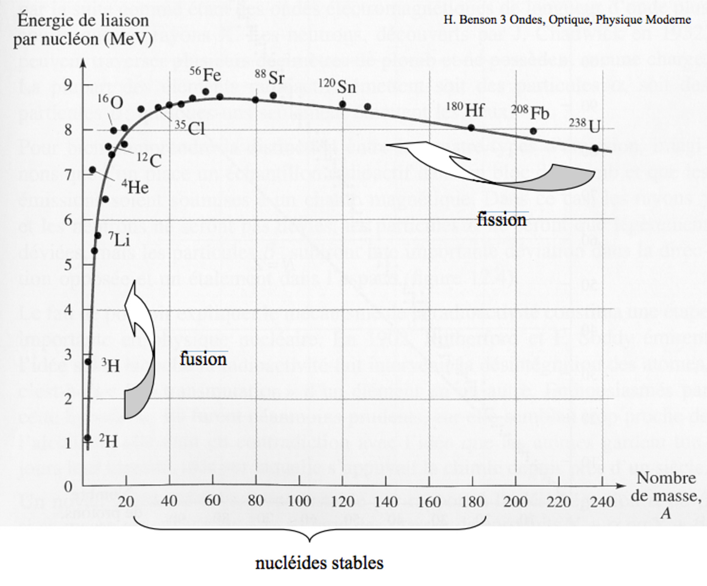
Note : Le maximum d’énergie de liaison par nucléon est atteint pour le \(^{62}_{28}\text{Ni}\), pour lequel l’énergie de liaison par nucléon vaut \(8{,}795\ \text{MeV/nucléon}\), très légèrement devant le \(^{56}_{26}\text{Fe}\). L’écart est infime, et le fer reste souvent la référence historique et pédagogique, car c’est lui que produit en abondance la nucléosynthèse stellaire.
La courbe montre également que les noyaux stables sont ceux dont le nombre de masse n’est ni trop petit ni trop grand (\(20 < A < 190\)). Cette courbe met en lumière deux phénomènes énergétiques majeurs :
- La fusion : assembler des noyaux légers (\(A\) faible) produit des noyaux plus stables — l’énergie de liaison par nucléon augmente. C’est le mécanisme qui alimente notre Soleil, celui de la nucléosynthèse , et celui exploité par les bombes à hydrogène.
- La fission : briser des noyaux très lourds (\(A\) élevé) produit des fragments plus stables — l’énergie de liaison par nucléon augmente également. C’est le principe des réacteurs des centrales nucléaires, ainsi que des bombes atomiques.
Dans les deux cas, la stabilité croissante se traduit par une libération d’énergie — conformément à \(E_l = \Delta_m \cdot c^2\).
Exercices :
- L’uranium naturel est un mélange de deux isotopes principaux : l’uranium 235 (\(^{235}_{92}\text{U}\), \(N = 143\)) et l’uranium 238 (\(^{238}_{92}\text{U}\), \(N = 146\)).
- Masse d’un neutron : \(m_n = 1{,}008665\ \text{u}\)
- Masse d’un atome d’hydrogène \(^1_1\text{H}\) (conformément à la note de méthode, on utilise la masse atomique de l’hydrogène pour inclure l’électron du côté des constituants séparés) : \(m_{^1\text{H}} = 1{,}007825\ \text{u}\)
- Masse atomique mesurée en laboratoire de \(^{235}_{92}\text{U}\) : \(m_{235} = 235{,}043930\ \text{u}\)
- Masse atomique mesurée en laboratoire de \(^{238}_{92}\text{U}\) : \(m_{238} = 238{,}050788\ \text{u}\)
- \(1\ \text{u} = 931{,}494\ \text{MeV/c}^2\)
- Pour chacun des deux isotopes, calculer la masse des constituants séparés, en utilisant \(Z\) atomes d’hydrogène et \(N\) neutrons.
- En déduire le défaut de masse \(\Delta m\) de chaque isotope.
- Calculer l’énergie de liaison \(E_\ell = \Delta m \cdot c^2\) de chaque isotope (en MeV).
- Calculer l’énergie de liaison par nucléon de chaque isotope.
- Lequel des deux isotopes est le plus stable ?79
- Le défaut de masse du noyau de \(^{12}\)C vaut \(\Delta m = 0{,}09894\) u. Calculez l’énergie de liaison totale en MeV et l’énergie par nucléon (\(1\ \text{u} = 931{,}5\ \text{MeV}/c^2\)).80
- Où se situe le maximum de stabilité sur la courbe d’Aston ? Pourquoi la fusion de noyaux légers et la fission de noyaux lourds libèrent-elles toutes deux de l’énergie ?81
- Pourquoi la fusion de l’hydrogène en hélium libère-t-elle de l’énergie, alors que la fusion de deux noyaux de fer n’en libérerait pas ?82
2.3.4 Masse atomique relative moyenne et abondance isotopique
Dans le tableau périodique, la masse atomique relative d’un élément est souvent indiquée. Elle n’est pas celle d’un isotope particulier, mais la moyenne pondérée par l’abondance naturelle de chaque isotope :
\[M_A = \sum_{i} a_i \cdot M_{A,i}\]
où \(a_i\) est l’abondance fractionnaire (entre 0 et 1) et \(M_{A,i}\) la masse de l’isotope \(i\) en u. C’est cette valeur qui figure dans le tableau périodique.
Exemple travaillé :
Le chlore naturel est constitué de \(^{35}\)Cl (\(a = 75{,}77\ %\), \(M_A = 34{,}969\ \text{u}\)) et de \(^{37}\)Cl (\(a = 24{,}23\ %\), \(M_A = 36{,}966\ \text{u}\)).
\[M_A(\text{Cl}) = 0{,}7577 \times 34{,}969 + 0{,}2423 \times 36{,}966 = 26{,}50 + 8{,}96 = 35{,}45\ \text{u} \checkmark\]
Exercices :
- Le bore naturel est constitué de \(^{10}\)B (19,9 %, \(M_A = 10{,}013\) u) et de \(^{11}\)B (80,1 %, \(M_A = 11{,}009\) u). Calculez la masse atomique relative moyenne du bore.83
- Le magnésium possède trois isotopes : \(^{24}\)Mg (78,99 %, 23,985 u), \(^{25}\)Mg (10,00 %, 24,986 u), \(^{26}\)Mg (11,01 %, 25,983 u). Calculez sa masse atomique relative et comparez-la à la valeur du tableau périodique (24,31 u).84
- Pourquoi la masse atomique relative du carbone vaut-elle 12,011 u et non exactement 12,000 u ?85
2.3.5 La mole, la quantité de matière et le nombre d’Avogadro
Nous revenons ici à l’une des sept unités du système international. À quoi pourrait bien servir l’unité mol ? Pour décrire une distance ? Non, ce sont les mètres. Pour décrire une masse ? Non, ce sont les kilogrammes. Pour décrire un temps ? Non, ce sont les secondes. Pour quelle grandeur la mole mérite-t-elle donc d’être au panthéon des unités internationales ?
Dans l’histoire… L’hypothèse d’Avogadro (1811) reste ignorée pendant près de cinquante ans, jusqu’à ce que Stanislao Cannizzaro la ressuscite en 1858 dans un ouvrage pédagogique et la diffuse avec un succès décisif au premier congrès international de chimie à Karlsruhe (1860) — permettant enfin d’harmoniser les masses atomiques entre nations. Il faudra toutefois attendre 1908-1909 pour que Jean Perrin donne à cette hypothèse une réalité expérimentale : en observant le mouvement brownien, il mesure pour la première fois le nombre d’Avogadro — un travail qui lui vaudra le prix Nobel de physique en 1926.
La mole est ainsi l’unité de la quantité d’objets — dite aussi quantité de matière. Autrement dit, l’unité qui nous permet de compter les objets. C’est en réalité une réponse concrète à un problème pratique fondamental : les atomes sont si petits qu’on ne peut pas les compter un par un. La mole est l’unité de comptage du chimiste — comme la douzaine pour le boulanger.
Formalisation IUPAC : La mole (mol) est l’unité SI de la quantité d’objets. Elle contient exactement \(6{,}022 \times 10^{23}\) entités élémentaires (atomes, molécules, ions, voitures…). La constante d’Avogadro \(N_A\), définie depuis 2019 comme une constante exacte par le Système international, s’exprime :
\[N_A = 6{,}022 \times 10^{23}\ \text{mol}^{-1}\]
Notons ce que le nombre d’Avogadro a l’unité 1/mol: \(N_A\) est un nombre d’objets par mole — exactement comme une douzaine est un nombre d’objets par groupe de douze. Nous avons donc toujours \(6{,}022 \times 10^{23}\) objets par mole.
Mais comment un nombre aussi précis a-t-il pu être établi ?
Comme présenté dans l’historique, la détermination de \(N_A\) à commencé par Perrin. Mais elle s’est raffinée pendant plus d’un siècle ensuite, par des méthodes physiques indépendantes les unes des autres :
- En 1903, Robert Millikan, avec sa fameuse expérience de la goutte d’huile, mesure la charge de l’électron \(e\). Combinée à la constante de Faraday \(F\) (connue par électrolyse depuis le XIX\(^e\) siècle), la relation \(N_A = F / e\) confirme la valeur de \(N_A\) de manière totalement indépendante de celle de Perrin.
- Le Projet Avogadro : Au début des années 1990 (la phase décisive démarrant en 2003), plusieurs instituts nationaux de métrologie s’associent à des instituts russes pour une collaboration internationale prenant le nom d’International Avogadro Coordination (IAC) : le PTB (Allemagne), le NMIJ (Japon), le NIM (Chine), le METAS (Suisse), le NIST (États-Unis), l’INRiM (Italie), le BIPM (France) et l’IRMM (Belgique). Ils décident de fabriquer un monocristal de silicium-28 enrichi d’environ 5 kg, dans lequel sont ensuite taillées des sphères. Polies à l’échelle atomique près, ces sphères de silicium monocristallin sont étudiées par cristallographie aux rayons X, qui a permis de mesurer la distance entre atomes dans un cristal parfait, puis de compter le nombre d’atomes contenus dans un volume connu, à partir de sa densité. C’est à ce jour la méthode de détermination de \(N_A\) la plus précise.
Ces méthodes indépendantes convergent toutes vers la même valeur — une convergence qui, historiquement, a été l’un des arguments les plus forts en faveur de la réalité physique des atomes.
2.3.5.1 Calcul simple autour du nombre d’Avogadro
De manière didactique, considérons une ancienne définition du nombre d’Avogadro — valable jusqu’en 2019 — qui nous explique avec élégance comment obtenir simplement ce nombre :
\(N_A\) était longtemps défini comme le nombre d’atomes de \(^{12}\text{C}\) contenus dans exactement 12 g de \(^{12}\text{C}\).
Analogie : Imaginons que nous devions compter des grains de sable se trouvant dans un sac de 10 kg. Deux approches s’offrent à nous : les prélever un par un avec les doigts — ce qui est évidemment impraticable — ou raisonner autrement. Si nous connaissons la masse totale du sable contenu dans le sac et la masse d’un seul grain de sable, alors diviser l’une par l’autre nous donne directement le nombre de grains. Une balance suffit pour peser les deux masses. La mole repose exactement sur ce principe : relier une masse mesurable à un nombre d’entités.
Limite de l’analogie : Les grains de sable ont des tailles variables ; tous les atomes d’un même isotope sont, eux, strictement identiques. La mole est donc un pont exact, pas approximatif.
Calcul du nombre d’atomes de \(^{12}\text{C}\) contenus dans exactement 12 g de \(^{12}\text{C}\)
Nous avons vu que la masse de l’isotope \(^{12}\text{C}\) est exactement de \(12{,}000\ \text{u}\) par définition, et que la valeur de u en grammes provient justement de mesures comme celles de Perrin, Millikan et de la cristallographie aux rayons X. Le calcul est alors immédiat :
\[N_A = \frac{12\ \text{g}}{12\ \text{u}} = \frac{12\ \text{g}}{12 \times 1{,}66054 \times 10^{-24}\ \text{g}} = 6{,}022 \times 10^{23}\ \text{mol}^{-1}\]
\(u\) et \(N_A\) sont donc deux faces d’une même pièce : ils ont été calibrés ensemble par ces mesures indépendantes, et l’un se déduit immédiatement de l’autre.
Ce que cette construction révèle est particulièrement élégant : une mole de \(^{12}\text{C}\) pèse exactement 12 g.
Et plus généralement, une mole d’un objet de masse \(m\) exprimée en u pèse exactement \(m\) grammes.
\[1\ \text{u} \times N_A = 1\ \text{g}\]
Voilà le pont fondamental entre l’échelle atomique et l’échelle du laboratoire. Cette relation est au cœur de la notion de masse molaire — incontournable en chimie, et que nous allons maintenant formaliser.
Exercice
- Combien d’atomes de \(^{12}\text{C}\) sont contenus dans 24 g de \(^{12}\text{C}\) ?86
- Une mole de \(^1\text{H}\) (masse atomique \(1{,}007825\ \text{u}\)) et une mole de \(^{12}\text{C}\) ont-elles la même masse ? Le même nombre d’atomes ? Justifiez et donnez les deux masses en grammes.87
- Le fer naturel a une masse atomique moyenne de \(55{,}85\ \text{u}\). Quelle est la masse, en grammes, d’une mole de fer ? Quelle est la masse d’un seul atome de fer, en grammes ?88
- Combien de moles, puis combien d’atomes de carbone-12, sont contenus dans 5,00 g de \(^{12}\text{C}\) ?89
- Une pièce d’or pur a une masse de 15,7 g. Sachant que la masse atomique de l’or est d’environ \(197{,}0\ \text{u}\), combien d’atomes d’or contient cette pièce ?90
2.3.6 La masse molaire
Nous venons d’établir que si nous prenons 1 mole d’objet de 1 u, cela pèserait 1g:
\[1\ \text{u} \times N_A = 1\ \text{g}\]
Cette relation a une conséquence immédiate et très pratique :
- si nous prenons une mole d’un atome de masse \(m\) en u, cette mole pèse exactement \(m\) grammes.
Autrement dit, la masse d’une mole d’atomes — la masse molaire — a la même valeur numérique que la masse atomique, mais exprimée en g/mol plutôt qu’en u.
Formalisation IUPAC : La masse molaire (symbole \(M\)) est la masse d’une mole d’une substance, exprimée en g/mol. Sa valeur numérique est donc identique à la masse atomique relative en u.
Quelques exemples pour ancrer l’idée :
En texte :
- un atome de carbone a une masse atomique relative de 12,011 u, donc une mole de carbone — soit \(6{,}022 \times 10^{23}\) atomes — pèse 12,011 g.
- un atome d’or a une masse de 196,97 u, donc une mole d’or pèse 196,97 g.
- un atome de plomb pèse 207,2 u, donc une mole de plomb pèse 207,2 g.
En symbole :
\[M_A(\text{C}) = 12{,}011\ \text{u} \quad\Rightarrow\quad M(\text{C}) = 12{,}011\ \text{g/mol}\] \[M_A(\text{Au}) = 196{,}97\ \text{u} \quad\Rightarrow\quad M(\text{Au}) = 196{,}97\ \text{g/mol}\] \[M_A(\text{Pb}) = 207{,}2\ \text{u} \quad\Rightarrow\quad M(\text{Pb}) = 207{,}2\ \text{g/mol}\]
Exemple travaillé :
Quelle masse d’aluminium (\(M = 26{,}98\ \text{g/mol}\)) contient \(3{,}01 \times 10^{23}\) atomes ?
Étape 1 — nombre de moles : \(n = N / N_A = 3{,}01 \times 10^{23} / 6{,}022 \times 10^{23} = 0{,}500\ \text{mol}\)
Étape 2 — masse : \(m = n \cdot M = 0{,}500 \times 26{,}98 = 13{,}5\ \text{g}\)
2.3.6.1 Triangle des conversions
Les trois grandeurs clés sont reliées par :
\[n\ [\text{mol}] = \frac{m\ [\text{g}]}{M\ [\text{g/mol}]} \qquad n\ [\text{mol}] = \frac{N\ [-]}{N_A\ [\text{mol}^{-1}]} \qquad m\ [\text{g}] = n\ [\text{mol}] \cdot M\ [\text{g/mol}]\]
où \(n\) est la quantité de matière (mol), \(m\) la masse (g), \(M\) la masse molaire (g/mol) et \(N\) le nombre d’entités.
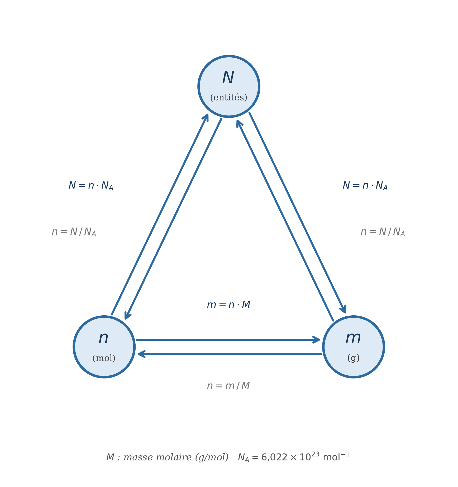
Conseil : plutôt que d’apprendre ces conversions par cœur, concentrez-vous sur les unités et leur analyse dimensionnelle — elles vous indiqueront toujours la bonne opération à effectuer.
Exercices
- Une pièce de 1 centime d’euro pèse 1,1 g et est supposée en cuivre pur (\(M = 63{,}55\) g/mol). Quelle quantité de matière d’atomes de cuivre contient-elle ? Combien d’atomes cela représente-t-il ?91
- Calculez la masse de 2,50 mol de fer (\(M = 55{,}85\) g/mol).92
- Combien de moles y a-t-il dans 50,0 g de plomb (Pb, \(M = 207{,}2\) g/mol) ?93
- Quelle est la masse, en grammes, de 0,75 mole d’or (Au, \(M = 196{,}97\) g/mol) ?94
- Combien d’atomes de carbone sont contenus dans 3,00 g de carbone naturel (\(M = 12{,}011\) g/mol) ?95
- Un bijou contient \(2{,}50 \times 10^{22}\) atomes d’or. Quelle est sa masse, en grammes ? (\(M(\text{Au}) = 196{,}97\) g/mol)96
2.3.6.2 Masse molaire d’une molécule ou d’un composé :
La masse molaire d’une substance composée de plusieurs atomes s’obtient en additionnant les masses molaires de chaque atome constitutif.
Pour l’eau \(\ce{H2O}\) :
\[M(\ce{H2O}) = 2 \times M(\text{H}) + M(\text{O}) = 2 \times 1{,}008 + 15{,}999 = 18{,}015\ \text{g/mol}\]
Pour le dioxyde de carbone \(\ce{CO2}\) :
\[M(\ce{CO2}) = M(\text{C}) + 2 \times M(\text{O}) = 12{,}011 + 2 \times 15{,}999 = 44{,}009\ \text{g/mol}\]
Pour l’acide sulfurique \(\ce{H2SO4}\) :
\[M(\ce{H2SO4}) = 2 \times 1{,}008 + 32{,}06 + 4 \times 15{,}999 = 98{,}07\ \text{g/mol}\]
Ce principe s’applique à n’importe quelle formule chimique, quelle que soit la taille de la molécule.
Exercices
- Calculez la masse molaire du chlorure de sodium \(\ce{NaCl}\) (sel de cuisine). Données : \(M(\text{Na}) = 22{,}99\) g/mol ; \(M(\text{Cl}) = 35{,}45\) g/mol.97
- Calculez la masse molaire du glucose \(\ce{C6H12O6}\). Données : \(M(\text{C}) = 12{,}011\) g/mol ; \(M(\text{H}) = 1{,}008\) g/mol ; \(M(\text{O}) = 15{,}999\) g/mol.98
- Combien de moles y a-t-il dans 9,00 g d’eau (\(M = 18{,}015\) g/mol) ? Combien de molécules cela représente-t-il ?99
- Combien d’atomes d’oxygène y a-t-il dans 0,100 mol de dioxyde de carbone \(\ce{CO2}\) ?100
2.3.7 Masses molaires élevées — le cas des biomolécules :
Certaines molécules biologiques atteignent des masses molaires considérables. L’hémoglobine, protéine qui transporte l’oxygène dans le sang, a une masse molaire d’environ 64 500 g/mol — autrement dit, une mole d’hémoglobine pèse 64,5 kg. L’ADN du plus grand chromosome humain dépasse quant à lui \(10^{11}\) g/mol.
Comme nous l’avons vu, les biologistes utilisent couramment le dalton (Da) ou le kilodalton (kDa) plutôt que l’u. Cette équivalence n’est pas un raccourci approximatif, mais une identité exacte déjà établie plus haut : \(1\ \text{Da} = 1\ \text{u}\), donc \(1\ \text{Da} \times N_A = 1\ \text{g}\).
Ainsi, une molécule d’hémoglobine a une masse de 64,5 kDa ; une mole d’hémoglobine pèse donc 64,5 kg.
Exercice
- Une molécule d’insuline humaine a une masse molaire de 5 808 g/mol.
- Exprimez la masse d’une seule molécule d’insuline en dalton (Da).
- Quelle est la masse, en grammes, d’une seule molécule d’insuline ?
- Un patient diabétique reçoit une injection contenant 0,20 mg d’insuline. Combien de moles et de molécules d’insuline cette dose contient-elle ?101
2.3.8 Composition élémentaire du corps humain
Nous savons désormais calculer la masse molaire de n’importe quelle formule chimique, de l’eau à l’hémoglobine.
Appliquons cet outil à l’objet le plus familier qui soit : notre propre corps.
L’exercice n’a rien d’anecdotique, car il révèle que la question « de quoi sommes-nous faits ? » n’admet pas une réponse, mais deux — selon que l’on pèse la matière ou qu’on la compte.
Les deux classements qui suivent portent sur le même corps, avec les mêmes données de départ ; seule la conversion par la masse molaire \(M\) les sépare. Ils ne se ressemblent pourtant en rien, et c’est précisément ce désaccord qui instruit : passer des grammes aux moles ne change pas le corps, mais la question qu’on lui pose.
Les chiffres qui suivent se rapportent à un corps de référence de 70 kg — l’adulte standard des tables de physiologie. Les masses absolues sont donc à ajuster à votre propre gabarit, mais les pourcentages, eux, valent quelle que soit la masse.
2.3.8.1 Tableau complet
| Élément | Symbole | Masse (g) | % masse | Moles | % des atomes |
|---|---|---|---|---|---|
| Hydrogène | H | 6 650 | 9,51 | 6 597 | 61,34 |
| Oxygène | O | 45 500 | 65,06 | 2 844 | 26,44 |
| Carbone | C | 12 950 | 18,52 | 1 078 | 10,02 |
| Azote | N | 2 240 | 3,20 | 159,9 | 1,487 |
| Calcium | Ca | 1 050 | 1,50 | 26,20 | 0,244 |
| Phosphore | P | 700 | 1,00 | 22,60 | 0,210 |
| Potassium | K | 280 | 0,40 | 7,161 | 0,067 |
| Soufre | S | 210 | 0,30 | 6,550 | 0,061 |
| Sodium | Na | 140 | 0,20 | 6,090 | 0,057 |
| Chlore | Cl | 140 | 0,20 | 3,949 | 0,037 |
| Magnésium | Mg | 70 | 0,10 | 2,880 | 0,027 |
| Fluor | F | 2,6 | 0,004 | 0,137 | 0,0013 |
| Fer | Fe | 4,2 | 0,006 | 0,075 | 0,0007 |
| Silicium | Si | 1,0 | 0,001 | 0,036 | 0,0003 |
| Zinc | Zn | 2,3 | 0,003 | 0,035 | 0,0003 |
| Cuivre | Cu | 0,072 | 0,0001 | 0,0011 | ~0 |
| Sélénium | Se | 0,015 | 0,00002 | 0,00019 | ~0 |
| Iode | I | 0,013 | 0,00002 | 0,00010 | ~0 |
Totaux : ≈ 10 755 mol, soit ≈ 6,5 × 10²⁷ atomes.
Méthode et réserves
- Les masses sont dérivées des pourcentages massiques standards de la littérature physiologique, appliqués à un corps de 70 kg.
- Les masses molaires utilisées sont les valeurs IUPAC (H = 1,008 ; C = 12,011 ; N = 14,007 ; O = 15,999 g/mol, etc.).
- Les quatre premières lignes (H, O, C, N) sont robustes et varient peu d’une source à l’autre.
- Les oligo-éléments (Fe, Zn, Cu, Se, I) varient sensiblement selon la source et l’individu — à considérer comme des ordres de grandeur.
- La composition réelle dépend de l’âge, du sexe, de la masse grasse et de l’état d’hydratation. Un corps plus gras contient proportionnellement plus de carbone et d’hydrogène, et moins d’oxygène (les lipides sont pauvres en oxygène comparés à l’eau).
2.3.8.2 Le renversement masse / moles
En masse, l’oxygène écrase tout (65 %). En moles, c’est l’hydrogène qui domine (61 % des atomes) : il est léger — 1,008 g/mol contre 16,0 pour l’oxygène — et le corps est constitué à ~60 % d’eau.
Trois éléments seulement, H, O et C, représentent 98 % de tous vos atomes.
Le rapport calcium / phosphore
Le calcium passe devant le phosphore en moles (26,2 contre 22,6) alors que leurs masses sont proches. C’est cohérent avec l’hydroxyapatite osseuse :
\[\mathrm{Ca_{10}(PO_4)_6(OH)_2} \quad\Rightarrow\quad \frac{\mathrm{Ca}}{\mathrm{P}} = \frac{10}{6} = 1{,}67\]
Rapport observé dans le tableau : 26,20 / 22,60 = 1,16. L’écart s’explique par le phosphore non osseux — ATP, ADN/ARN, phospholipides membranaires — qui n’entre pas dans le squelette.
Exercices
Les trois exercices ci-dessous s’appuient sur le tableau de composition élémentaire du corps de référence de 70 kg. Ils sont conçus pour être enchaînés : chacun demande de convertir dans les deux sens entre masse, quantité de matière et nombre d’entités, et de porter un jugement sur la plausibilité du résultat obtenu.
Données communes (g/mol) : H = 1,008 ; C = 12,011 ; N = 14,007 ; O = 15,999 ; P = 30,974 ; Ca = 40,078 ; Fe = 55,845. \(N_A = 6{,}022 \times 10^{23}\ \text{mol}^{-1}\).
- Où sont les atomes d’hydrogène ? Le corps de référence contient 6 597 mol d’hydrogène et 2 844 mol d’oxygène. On admet qu’il est constitué à 60 % de sa masse en eau.
**a)** Calculer la masse molaire de l'eau, puis la quantité de matière d'eau contenue dans le corps. **b)** En déduire quelle fraction des atomes d'hydrogène du corps se trouve engagée dans des molécules d'eau. Même question pour l'oxygène. **c)** Les deux fractions ne sont pas égales. Expliquer pourquoi, sans calcul supplémentaire. **d)** Combien de moles d'oxygène restent-elles disponibles hors de l'eau ? Sachant que la masse sèche du corps est de 28 kg, cet oxygène résiduel peut-il en représenter une part significative ?- Le fer de l’hémoglobine, et un contrôle par le sang. Le corps contient 4,2 g de fer, dont on estime que 65 % est engagé dans l’hémoglobine. Chaque molécule d’hémoglobine porte 4 atomes de fer et a une masse molaire de 64 500 g/mol.
**a)** Quelle est la fraction massique de fer dans l'hémoglobine ? Commenter l'ordre de grandeur. **b)** Calculer la quantité de matière d'hémoglobine présente dans le corps, puis le nombre de molécules correspondant. **c)** En déduire la masse totale d'hémoglobine. **d)** _Contrôle indépendant._ Un adulte possède environ 5 L de sang, dont la concentration en hémoglobine est de l'ordre de 150 g/L. Que conclure sur l'hypothèse des 65 % ?- Le squelette, et l’énigme du rapport Ca/P. Le minéral osseux est de l’hydroxyapatite, \(\ce{Ca10(PO4)6(OH)2}\). On admet que 99 % du calcium du corps s’y trouve. Le corps contient 26,20 mol de Ca et 22,60 mol de P.
a) Établir la masse molaire de l’hydroxyapatite.
b) Calculer la quantité de matière d’hydroxyapatite du squelette, puis sa masse. Le résultat est-il compatible avec un squelette humain ?
c) Quelle quantité de phosphore ce minéral mobilise-t-il ? En déduire la part du phosphore corporel qui n’est pas dans les os.
d) Montrer que ce résultat explique quantitativement pourquoi le rapport molaire Ca/P mesuré sur le corps entier (1,16) est inférieur au rapport stœchiométrique de l’hydroxyapatite (1,67).
e) Piège. Un étudiant propose que ce phosphore extra-osseux soit essentiellement de l’ATP (\(\ce{C10H16N5O13P3}\), 3 atomes de P par molécule). Calculer la masse d’ATP que cela impliquerait. Sachant que le corps n’en contient qu’environ 50 g à un instant donné, réfuter l’hypothèse et proposer une autre localisation.
2.3.8.2.1 Corrigés
Exercice 100
a) \(M(\ce{H2O}) = 2 \times 1{,}008 + 15{,}999 = 18{,}015\ \text{g/mol}\).
Masse d’eau : \(0{,}60 \times 70 000 = 42 000\ \text{g}\).
\[n(\ce{H2O}) = \frac{42 000}{18{,}015} \approx 2 331\ \text{mol}\]
b) Chaque molécule d’eau contient 2 H et 1 O.
\[n(\text{H})_{\text{eau}} = 2 \times 2 331 = 4 663\ \text{mol} \qquad \frac{4 663}{6 597} = \boxed{70{,}7\ \%}\]
\[n(\text{O})_{\text{eau}} = 2 331\ \text{mol} \qquad \frac{2 331}{2 844} = \boxed{82{,}0\ \%}\]
c) L’hydrogène est présent dans pratiquement toutes les molécules organiques — lipides, protéines, glucides — qui en sont très riches (les chaînes hydrocarbonées des graisses ne contiennent quasiment que C et H). L’oxygène, lui, est beaucoup plus concentré dans l’eau : les lipides en sont presque dépourvus. Une plus grande part de l’oxygène corporel est donc « piégée » dans l’eau.
d) \(2 844 - 2 331 = 513\ \text{mol}\) d’oxygène hors de l’eau, soit \(513 \times 15{,}999 \approx 8{,}2\ \text{kg}\). Rapportés aux 28 kg de masse sèche, cela représente 29 % — considérable. Cet oxygène est celui des protéines (liaisons peptidiques), des glucides et de l’os (\(\ce{PO4^3-}\), \(\ce{OH-}\)).
Exercice 101
a) \[w(\text{Fe}) = \frac{4 \times 55{,}845}{64 500} = 3{,}46 \times 10^{-3} = \boxed{0{,}346\ \%}\]
L’hémoglobine est une très grosse molécule dont la fonction entière repose sur quatre atomes pesant ensemble à peine trois millièmes de sa masse. La chaîne protéique n’est pas un accessoire : elle règle l’affinité pour \(\ce{O2}\) et empêche l’oxydation du fer.
b) Fer engagé : \(0{,}65 \times 4{,}2 = 2{,}73\ \text{g}\).
\[n(\text{Fe}) = \frac{2{,}73}{55{,}845} = 4{,}889 \times 10^{-2}\ \text{mol} \qquad n(\text{Hb}) = \frac{n(\text{Fe})}{4} = 1{,}222 \times 10^{-2}\ \text{mol}\]
\[N = n \cdot N_A = 1{,}222 \times 10^{-2} \times 6{,}022 \times 10^{23} = \boxed{7{,}36 \times 10^{21}\ \text{molécules}}\]
c) \(m = n \cdot M = 1{,}222 \times 10^{-2} \times 64 500 = \boxed{788\ \text{g}}\)
d) Par la voie sanguine : \(5 \times 150 = 750\ \text{g}\).
L’écart est de \(\dfrac{788 - 750}{750} \approx 5\ \%\), remarquable pour deux chemins totalement indépendants (l’un part d’un dosage du fer corporel, l’autre d’une numération sanguine). L’hypothèse des 65 % est donc solide ; on la trouve d’ailleurs souvent citée entre 60 et 70 %, ce qui encadre les 750 g.
Exercice 102
a) \[M = 10 \times M(\text{Ca}) + 6\left[M(\text{P}) + 4 \times M(\text{O})\right] + 2\left[M(\text{O}) + M(\text{H})\right]\]
\[M = 400{,}78 + 6 \times 94{,}970 + 2 \times 17{,}007 = 400{,}78 + 569{,}82 + 34{,}01 = \boxed{1\,004{,}61\ \text{g/mol}}\]
b) Calcium osseux : \(0{,}99 \times 26{,}20 = 25{,}94\ \text{mol}\).
Chaque motif en contient 10 :
\[n = \frac{25{,}94}{10} = 2{,}594\ \text{mol} \qquad m = 2{,}594 \times 1\,004{,}61 = \boxed{2{,}61\ \text{kg}}\]
Compatible : la fraction minérale du squelette d’un adulte de 70 kg est estimée entre 2,5 et 3 kg. Le squelette entier pèse davantage (~10 kg), le reste étant l’eau, le collagène et la moelle.
c) \[n(\text{P})_{\text{os}} = 6 \times 2{,}594 = 15{,}56\ \text{mol}\]
\[n(\text{P})_{\text{hors os}} = 22{,}60 - 15{,}56 = 7{,}04\ \text{mol} \qquad \frac{7{,}04}{22{,}60} = \boxed{31\ \%}\]
d) Le calcium est presque intégralement osseux (99%), alors que près d’un tiers du phosphore ne l’est pas. Le dénominateur du rapport Ca/P est donc « gonflé » par ce phosphore étranger au squelette. Vérification :
\[\left(\frac{\text{Ca}}{\text{P}}\right)_{\text{os seul}} = \frac{25{,}94}{15{,}56} = 1{,}67 \quad\checkmark\]
On retrouve exactement la stœchiométrie de l’hydroxyapatite. Le rapport de 1,16 mesuré sur le corps entier n’est donc pas une anomalie : c’est la signature du phosphore non minéral.
e) Si les 7,04 mol de P étaient sous forme d’ATP, à raison de 3 P par molécule :
\[n(\text{ATP}) = \frac{7{,}04}{3} = 2{,}35\ \text{mol}\]
\[M(\ce{C10H16N5O13P3}) = 120{,}11 + 16{,}13 + 70{,}04 + 207{,}99 + 92{,}92 = 507{,}18\ \text{g/mol}\]
\[m = 2{,}35 \times 507{,}18 = \boxed{1{,}19\ \text{kg}}\]
Soit 24 fois la quantité réellement présente. L’hypothèse est donc à rejeter — et le contraste est instructif : l’ATP n’est pas une réserve, c’est une monnaie d’échange recyclée en permanence (un adulte en régénère plusieurs dizaines de kilogrammes par jour à partir d’un stock minuscule).
Le phosphore extra-osseux se trouve en réalité surtout dans les phospholipides des membranes cellulaires — dont la surface totale est gigantesque — ainsi que dans l’ADN et l’ARN (un groupement phosphate par nucléotide) et dans les protéines phosphorylées.
2.3.9 La suite du manuel?
Le noyau et ses propriétés nous ont livré l’essentiel de ce dont nous avons besoin pour la chimie quantitative. Avec la masse molaire, nous disposons du pont entre le monde atomique et la balance du laboratoire. La chimie quantitative repose désormais sur trois grandeurs solidaires : \(n\), \(m\) et \(M\). La masse molaire \(M\) sera mobilisée dans plusieurs chapitres qui suivent.
Tournons-nous maintenant vers l’autre constituant de l’atome — le nuage électronique — dont la structure gouverne toute la chimie des liaisons.
2.3.10 FIN DE SECTION 3 — Exercices de consolidation
- Un atome a une masse de \(2{,}66 \times 10^{-23}\) g. Exprimez cette masse en unités u. De quel atome pourrait-il s’agir ?102
- Calculez la masse de 3,0 mol d’atomes de soufre (\(M = 32{,}1\) g/mol).103
- Calculez la masse molaire de l’hydroxyde de sodium \(\ce{NaOH}\). Combien de moles y a-t-il dans 20 g de ce composé ?104
- Le méthacrylate de méthyle, utilisé pour fabriquer le Plexiglas, a pour formule \(\ce{C5H8O2}\) et une masse molaire de 100 g/mol. Quelle quantité de matière y a-t-il dans 10 g de ce composé ?105
- L’isoprène a pour formule \(\ce{C5H8}\), de masse molaire 68 g/mol. Le caoutchouc naturel est un assemblage en chaîne de molécules d’isoprène. Une macromolécule de caoutchouc naturel a une masse molaire de 204 000 g/mol : combien d’unités d’isoprène constituent cette chaîne ?106
- Le lithium naturel est constitué de \(^6\)Li (7,72 %, \(M_A = 6{,}0169\) u) et de \(^7\)Li (92,28 %, \(M_A = 7{,}0182\) u). Calculez sa masse atomique relative moyenne.107
- Le krypton naturel possède six isotopes : \(^{78}\)Kr (0,354 %), \(^{80}\)Kr (2,27 %), \(^{82}\)Kr (11,56 %), \(^{83}\)Kr (11,55 %), \(^{84}\)Kr (56,90 %), \(^{86}\)Kr (17,37 %). Calculez son nombre de masse moyen.108
- Le zinc naturel possède quatre isotopes principaux : \(^{64}\)Zn (48,6 %), \(^{66}\)Zn (27,9 %), \(^{67}\)Zn (4,7 %), et \(^{68}\)Zn pour le reste. Calculez sa masse atomique relative moyenne.109
- Calculez le défaut de masse et l’énergie de liaison par nucléon du \(^{16}\)O, dont la masse mesurée est de 15,994915 u.110
- Qu’est-ce qui est le plus lourd : 2 moles de sodium (\(M = 22{,}99\) g/mol) ou 1 mole de magnésium (\(M = 24{,}31\) g/mol) ?111
- (exercice de synthèse) Une boîte de sucre contient 1,00 kg de saccharose, de formule \(\ce{C12H22O11}\), ce qui correspond à 2,92 mol. Calculez sa masse molaire de deux façons différentes, le nombre de molécules de saccharose que contient la boîte, puis la masse d’une seule molécule.112
- (exercice capstone) Une goutte d’eau de 1 mL contient environ \(1{,}67 \times 10^{21}\) molécules. Le lac Léman a un volume d’environ 89 milliards de m³, et il faut environ 20 gouttes de 1 mL pour faire 1 mL. Combien de gouttes d’eau le lac Léman contient-il ? Comparez ce nombre au nombre de molécules contenues dans une seule goutte.113
Bloc QCM de consolidation — Isotopes, unité de masse atomique et mole
Cochez les cases correspondant aux affirmations correctes (entre 1 et 3 par question).
Question 1
\(\square\) a) Tous les atomes d’or (Au) ont la même masse.
\(\square\) b) Le nombre de masse correspond au nombre de neutrons + protons
\(\square\) c) \(^{56}\text{Fe}\) et \(^{58}\text{Ni}\) ont le même nombre de neutrons
\(\square\) d) Le nombre de masse de l’atome \(^{39}\text{K}\) correspond exactement à la masse atomique indiquée dans le tableau périodique
Question 2
\(\square\) a) Si je pouvais ajouter 2 protons à \(^{55}\text{Mn}\), j’obtiendrais du \(^{55}\text{Co}\)
\(\square\) b) \(^{56}\text{Fe}\) et \(^{55}\text{Fe}\) ont le même nombre de protons
\(\square\) c) Les masses de \(^{32}\text{S}\) et \(^{32}\text{P}\) sont pratiquement identiques (on considère que \(m_{\text{p}^+} = m_{\text{n}^0}\))
\(\square\) d) Le nombre de masse permet de déterminer l’identité d’un atome
Question 3
\(\square\) a) L’élément fer regroupe tous les atomes qui ont 26 comme numéro atomique
\(\square\) b) Si le \(^{4}\text{He}\) gagne 2 protons, 3 neutrons et 2 électrons, j’obtiens du \(^{9}\text{Be}\)
\(\square\) c) La masse atomique 22,99 indiquée dans le tableau périodique pour le Na correspond à la masse atomique relative moyenne des isotopes du sodium en fonction de leur abondance sur terre
\(\square\) d) Tous les isotopes du silicium ont un numéro atomique et un nombre de masse identiques
Question 4
\(\square\) a) Le noyau d’un atome est principalement constitué de vide
\(\square\) b) Un atome contient 99,99 % de sa masse dans son noyau
\(\square\) c) Le nombre d’Avogadro représente le nombre d’atomes de \(^{12}\text{C}\) dans 12 g de \(^{12}\text{C}\)
\(\square\) d) L’unité de masse atomique u correspond à la masse d’un atome de \(^{12}\text{C}\) divisé par 12
Question 5
\(\square\) a) L’unité de masse atomique u est approximativement la masse d’un nucléon
\(\square\) b) Le nombre d’Avogadro est plus petit que \(10^{9}\)
\(\square\) c) La moitié d’une mole de \(^{28}\text{S}\) représente \(3{,}01 \times 10^{23}\) atomes de \(^{28}\text{S}\)
\(\square\) d) Une mole de l’élément naturel magnésium (Mg) a une masse d’environ 24 g
Question 6
\(\square\) a) La masse atomique de l’élément magnésium (Mg) est environ 24 u
\(\square\) b) La masse d’une mole de \(^{7}\text{Li}\) est plus grande que la masse de cinq moles de \(^{1}\text{H}\)
\(\square\) c) Une mole d’or \(^{197}\text{Au}\) contient toujours \(6{,}02 \times 10^{23}\) atomes de \(^{197}\text{Au}\)
\(\square\) d) \(6{,}02 \times 10^{23}\) atomes de \(^{40}\text{Ca}\) pèsent environ 4 g
Corrigé du QCM :
Q1 : a, b, c vraies — d fausse (39 ≠ 39,10 u, la valeur du tableau périodique est une moyenne pondérée des isotopes du potassium, pas le nombre de masse d’un isotope précis).
Q2 : b, c vraies — a fausse (ajouter 2 protons sans neutrons donne \(^{57}\text{Co}\), pas \(^{55}\text{Co}\)) ; d fausse (des isobares comme \(^{40}\text{K}\), \(^{40}\text{Ca}\), \(^{40}\text{Ar}\) partagent le même A).
Q3 : a, b, c vraies — d fausse (les isotopes partagent le numéro atomique Z, mais ont par définition un nombre de masse différent).
Q4 : b, c, d vraies — a fausse (c’est l’atome dans son ensemble qui est surtout du vide ; le noyau, lui, est extrêmement dense).
Q5 : a, c, d vraies — b fausse (\(N_A \approx 6{,}022 \times 10^{23} \gg 10^{9}\)).
Q6 : a, b, c vraies — d fausse (1 mole de \(^{40}\text{Ca}\) pèse environ 40 g, pas 4 g).
2.4 Le nuage électronique et la notation de Lewis
2.4.1 Description du nuage électronique
Dans l’histoire… L’histoire de ce nuage tient en trois noms : Balmer (1885) décrit sans expliquer, Bohr (1913) explique par des orbites — avant que son modèle n’échoue dès l’hélium —, et Schrödinger (1926) le remplace enfin par des orbitales probabilistes. C’est cette dernière image que nous développons ici.
Analogie du stade Le noyau occupe un volume infime au centre de l’atome — nous l’avons vu. En prenant l’analogie d’un stade, si l’atome était l’entier d’un stade, le noyau serait une petite bille posée au centre du terrain. Tout le reste de ce stade, c’est le nuage électronique. C’est le nuage électronique qui forme l’essentiel du volume de la matière, et c’est ce nuage qui gouverne toute la chimie des liaisons.
Mais cette image du nuage n’a pas toujours été celle des physiciens. Historiquement, les électrons ont d’abord été représentés comme de petites billes tournant sur des orbites circulaires autour du noyau, à la manière des planètes autour du Soleil — c’est le modèle planétaire de Bohr (1913).
2.4.1.1 Le modèle planétaire de Bohr
Ce modèle a le mérite d’être intuitif, et il introduit une idée importante :
- les électrons ne peuvent occuper que des niveaux d’énergie discrets, numérotés n = 1, 2, 3, …. Ces niveaux sont appelés couches.
- chaque couche n peut accueillir au maximum 2n² électrons.
- ces couches sont désignées respectivement K, L, M, N… — une notation empruntée à la spectroscopie des rayons X (Charles Barkla, 1911), antérieure au modèle de Bohr, puis reprise pour nommer les couches électroniques :
- la couche n = 1 — appelée K — accueille 2 électrons
- la couche n = 2 — appelée L — accueille 8 électrons
- la couche n = 3 — appelée M — accueille 18 électrons
- la couche n = 4 — appelée N — accueille 32 électrons
- … et ainsi de suite.
Tableau périodique: Mais ce modèle pose sérieusement un problème: la structure du tableau périodique. Si les électrons se répartissaient simplement couche par couche selon \(2n^2\), les lignes du tableau compteraient 2, 8, 18, 32 éléments dans cet ordre strict. Or ce n’est pas ce que nous observons — les deux premières périodes comptent bien 2 et 8 éléments, mais la logique se rompt ensuite.
Il faut donc une description plus fine du nuage électronique.
2.4.1.2 La métaphore du stade
Le stade vide : une architecture fixe Reprenons notre stade — mais regardons-le d’abord vide, un jour sans match.
Un stade est construit avec un nombre précis d’emplacements : - chaque tribune est divisée en rangées - chaque rangée en sièges.
Cette architecture existe indépendamment de tout événement — elle est fixée par la construction du stade. Chaque siège possède une adresse unique (tribune, rangée, numéro), que ce siège soit occupé ou non un soir donné.
Le nuage électronique se décrit de la même manière : les adresses possibles ne sont pas créées par les électrons d’un atome donné — elles existent par construction, indépendamment de l’atome que l’on regarde.
- La couche (n) est la tribune
- la sous-couche est la rangée
- l’orbitale est le siège.
Ce plan est universel : l’hydrogène et l’uranium partagent exactement la même architecture de tribunes, de rangées et de sièges. Seul le nombre de sièges occupés un soir de match diffère.
Un soir de match : qui occupe quel siège ? Un soir de match, tous les sièges ne sont pas occupés. Le nombre de supporters présents varie selon le match — c’est-à-dire selon l’atome considéré : l’hydrogène ne remplit souvent qu’un siège, l’uranium en remplit nonante-deux. (Un même atome peut d’ailleurs avoir plus ou moins de supporters que d’habitude : ce sont les ions — on y reviendra.) Mais que le siège soit occupé ou vide, son adresse, elle, existe toujours.
Un siège occupé n’est pas figé Les supporters aiment être proches du terrain, mais un supporter n’est pas immobile comme une statue : on ne sait jamais dire exactement où il se trouve dans sa zone à un instant donné. On connaît très bien où il a le plus de chances d’être — dense près du terrain, plus diffus en s’éloignant. L’orbitale occupée est cette carte de probabilité de présence, dont la forme (sphérique pour s, en haltère pour p) dépend du type de siège.
Pour décrire précisément l’adresse de chaque électron dans ce stade, nous avons besoin de quatre paramètres — les nombres quantiques — dont la combinaison est unique pour chaque électron d’un atome donné. C’est ce qu’énonce le principe d’exclusion de Pauli : deux électrons d’un même atome ne peuvent pas partager la même adresse complète.
Exercices :
- Pourquoi le modèle de Bohr, avec ses couches de capacité \(2n^2\), ne suffit-il pas à expliquer la structure du tableau périodique ?114
- Dans la métaphore du stade, à quoi correspondent respectivement une couche, une sous-couche et une orbitale ?115
2.4.2 Les nombres quantiques
Dans l’histoire… Wolfgang Pauli (1925) formule son principe d’exclusion sans pouvoir l’expliquer théoriquement : c’est une règle qui « marche », sans justification profonde à l’époque — Richard Feynman la décrira plus tard comme l’une des rares règles de la physique énonçables très simplement, mais qu’aucun physicien n’a su expliquer simplement. Friedrich Hund (1925) établit empiriquement sa règle de remplissage des orbitales dégénérées. Avec la mécanique quantique relativiste de Paul Dirac (1928), le spin de l’électron reçoit enfin une origine théorique : il émerge naturellement de l’équation de Dirac, sans devoir être ajouté à la main. Il faudra toutefois attendre 1940, avec le théorème spin-statistique formulé par Pauli lui-même, pour que le lien rigoureux entre spin et principe d’exclusion soit pleinement établi. Ce que nous appliquons comme une règle pratique est le résultat de quinze ans de tâtonnements entre les plus grands physiciens du XX\(^e\) siècle.
Formalisation : L’état d’un électron est décrit par quatre nombres quantiques. Dans la métaphore du stade, chacun précise un niveau de l’adresse :
- le nombre quantique principal — la couche — l’énergie principale
- le nombre quantique orbitalaire — la sous-couche — la forme de l’orbitale
- le nombre quantique magnétique — l’orientation de l’orbitale dans l’espace
- le nombre quantique de spin — la composante intrinsèque de l’électron dans l’orbitale
| Nombre quantique | Symbole | Valeurs possibles | Ce qu’il décrit |
|---|---|---|---|
| Principal | \(n\) | \(1, 2, 3, \ldots\) | Couche (énergie principale, taille) |
| Orbitalaire | \(l\) | \(0, 1, \ldots, n-1\) | Sous-couche (forme de l’orbitale) |
| Magnétique | \(m_l\) | \(-l, \ldots, 0, \ldots, +l\) | Orientation dans l’espace |
| Spin | \(m_s\) | \(+\frac{1}{2}\) ou \(-\frac{1}{2}\) | Spin de l’électron |
Le nombre quantique principal \(n\) est le numéro de la couche — l’énergie principale. Il prend les valeurs entières \(n = 1, 2, 3, \ldots\), une par couche principale. Plus \(n\) est grand, plus la couche est éloignée du noyau et haute en énergie.
Le nombre quantique orbitalaire \(l\) décrit le type de sous-couche à l’intérieur d’une couche — la forme de l’orbitale dans l’espace. Il peut prendre toutes les valeurs entières de \(0\) à \(n-1\) où \(n\) est le nombre principal. À chaque valeur de \(l\) correspond une lettre conventionnelle :
\[l = 0 \to \text{sous-couche } s\] \[l = 1 \to \text{sous-couche } p\] \[l = 2 \to \text{sous-couche } d\] \[l = 3 \to \text{sous-couche } f\]
La combinaison de \(n\) et de la lettre de \(l\) forme déjà une information importante de la position à considérer dans le nuage électronique.
Considérons les différentes combinaisons \(nl\) :
- au niveau \(n = 1\), seul \(l = 0\) est possible : il existe une orbitale appelée \(1s\).
- au niveau \(n = 2\), \(l\) peut valoir \(0\) ou \(1\) : il existe donc une orbitale \(2s\) — semblable en forme à \(1s\) mais un peu plus grande — et des orbitales \(2p\).
- au niveau \(n = 3\), on trouve les orbitales \(3s\), \(3p\) et \(3d\).
- au niveau \(n = 4\), on ajoute \(4f\).
La contrainte \(l \leq n - 1\) explique pourquoi il n’existe pas d’orbitale \(1p\), \(2d\), ou \(3f\).
Le nombre quantique magnétique \(m_l\) affine la description en précisant l’orientation de l’orbitale dans l’espace. Il prend toutes les valeurs entières entre \(-l\) et \(+l\), soit \(2l + 1\) valeurs :
- Si \(l = 0\) (sous-couche \(s\)) : \(m_l = 0\) uniquement → 1 orbitale
- Si \(l = 1\) (sous-couche \(p\)) : \(m_l = -1, 0, +1\) → 3 orbitales
- Si \(l = 2\) (sous-couche \(d\)) : \(m_l = -2, -1, 0, +1, +2\) → 5 orbitales
- Si \(l = 3\) (sous-couche \(f\)) : \(m_l = -3, \ldots, +3\) → 7 orbitales
Le spin \(m_s\) est le quatrième et dernier paramètre. C’est une propriété intrinsèque de l’électron, indépendante de sa position, qui ne peut prendre que deux valeurs : \(+\frac{1}{2}\) ou \(-\frac{1}{2}\). Dans la métaphore du stade, c’est la place dans le siège — gauche ou droite. Chaque orbitale (chaque siège) peut donc accueillir exactement deux électrons, de spins opposés. C’est précisément ce qu’énonce le principe d’exclusion de Pauli : deux électrons d’un même atome ne peuvent pas avoir les quatre nombres quantiques identiques.
2.4.2.1 Domaine d’existence des nombres quantiques
Nous avons détaillé jusqu’ici les niveaux \(n = 1\) à \(4\). Généralisons maintenant le raisonnement jusqu’à \(n = 7\), la valeur la plus élevée rencontrée dans le tableau périodique actuel. Comme mentionné plus haut, les quatre nombres quantiques ont chacun un domaine d’existence :
| \(n\) | \(l\) | \(m_l\) | \(m_s\) |
|---|---|---|---|
| \(1\) à \(7\) | \(0 \leq l \leq n-1\) | \(-l \leq m_l \leq l\) | \(-\frac{1}{2}\) ou \(+\frac{1}{2}\) |
En suivant ces règles d’attribution, déduisez pour \(n = 1, 2, 3, \ldots, 7\) :
- le nombre maximal d’électrons que peut accueillir chaque niveau principal ;
- le nom des types d’orbitales qui composent ces niveaux principaux.
2.4.2.2 Construction du nuage
Dénombrons les combinaisons possibles décrit par le domaines d’existence des nombres quantiques couche par couche et vérifions la cohérence avec la formule de Bohr \(2n^2\) :
- Pour \(n = 1\) : seule la combinaison \((n, l, m_l) = (1, 0, 0)\) existe, avec \(m_s = +\frac{1}{2}\) ou \(-\frac{1}{2}\) — soit 2 électrons. En accord avec \(2 \times 1^2 = 2\).
Tableau périodique Remarquons au passage que le tableau périodique compte bien 2 colonnes à gauche (bloc \(s\)).
- Pour \(n = 2\) : les combinaisons \((2, 0, 0)\) donnent 2 électrons en \(2s\), et \((2, 1, -1)\), \((2, 1, 0)\), \((2, 1, +1)\) donnent 6 électrons en \(2p\) — soit 8 électrons au total. En accord avec \(2 \times 2^2 = 8\).
Tableau périodique Remarquons au passage que le tableau périodique compte bien 2 colonnes à gauche (bloc \(s\)) et 6 colonnes à droite (bloc \(p\)) pour cette période.
Comme nous l’avons mentionné, ces lieux de résidence des électrons sont des volumes géométriques autour du noyau. Les orbitales s (1s, 2s, 3s…) sont sphériques. Les orbitales de type p sont quant à elles bilobées (en forme d’haltère) et sont au nombre de 3 (px, py, pz).
- Pour \(n = 3\) : Nous avons donc les 3s, 3p et nous y ajoutons les 10 combinaisons de \(3d\) aux 2 de \(3s\) et aux 6 de \(3p\) — soit 18 électrons. En accord avec \(2 \times 3^2 = 18\).
Tableau périodique Effectivement, le bloc \(d\) du tableau périodique compte exactement 10 colonnes. Ce n’est pas une coïncidence — c’est la structure du nuage électronique qui dicte la forme du tableau.
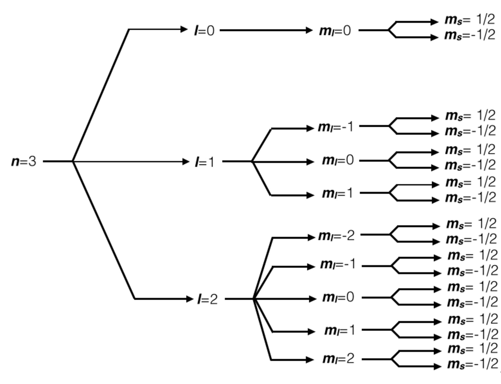
- Pour \(n = 4\) : on ajoute les 14 combinaisons de \(4f\) — soit 32 électrons au total pour cette couche.
Tableau périodique Le bloc \(f\), en bas du tableau périodique, compte bien 14 colonnes.
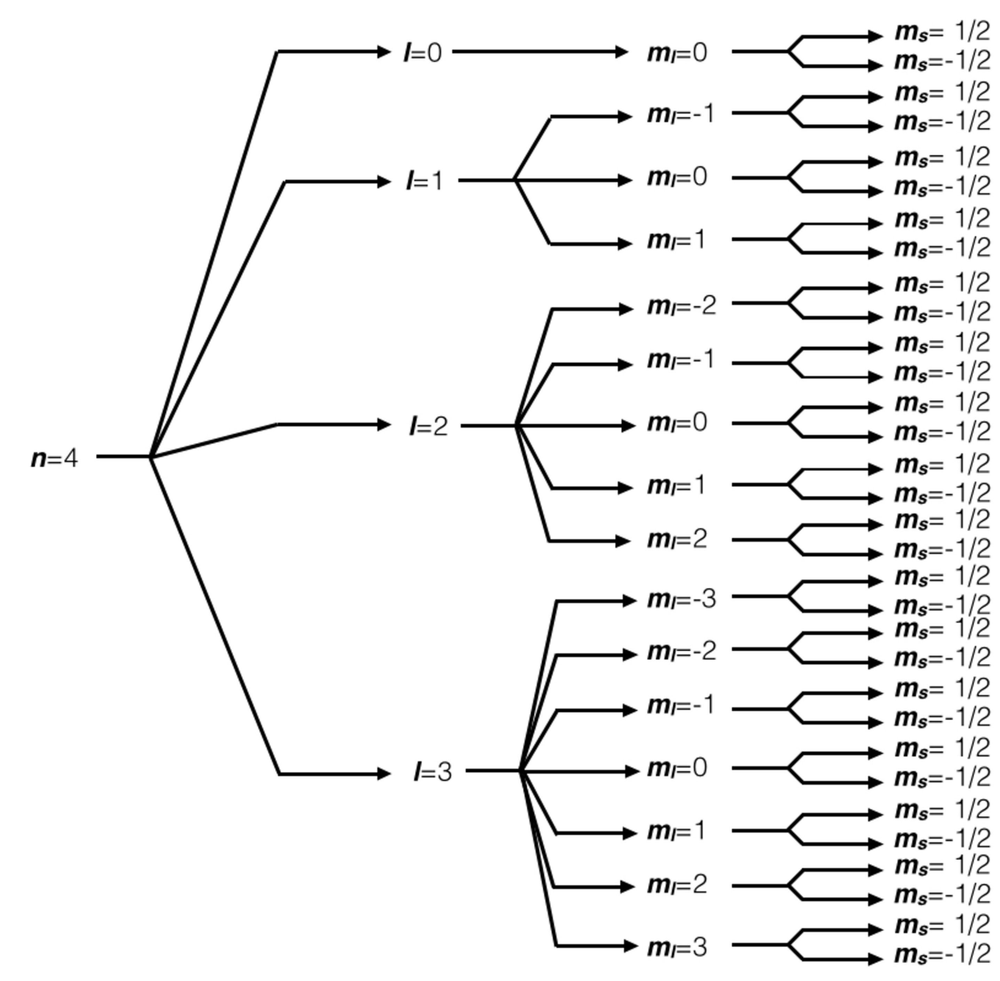
| Sous-couche | \(l\) | Nombre d’orbitales | Nombre max d’électrons | Colonnes dans le tableau |
|---|---|---|---|---|
| \(s\) | 0 | 1 | 2 | 2 |
| \(p\) | 1 | 3 | 6 | 6 |
| \(d\) | 2 | 5 | 10 | 10 |
| \(f\) | 3 | 7 | 14 | 14 |
2.4.2.3 Représentation énergique du nuage
L’approche de Bohr a permis d’obtenir les niveaux d’énergie de Bohr du nuage monoélectronique : celui de l’atome d’hydrogène, ou plus généralement des ions hydrogénoïdes ne possédant qu’un seul électron.
\[E_n = -\dfrac{13{,}6}{n^2} \text{ eV}\]
Cette énergie ne dépend que de la couche n. Ceci pourrait laisser croire que le remplissage suit simplement les couches dans l’ordre : d’abord toute la couche n = 1, puis toute la couche n = 2, et ainsi de suite.
Cette intuition n’est pas fausse — elle est seulement incomplète : elle ne vaut que pour ce nuage à un seul électron. Dès qu’un atome possède plusieurs électrons, cette formule ne suffit plus : les niveaux d’énergie dépendent aussi du nombre quantique orbitalaire \(l\).
Jusqu’ici, une simplification s’est glissée dans notre lecture du stade : nous avons traité chaque sous-couche d’une même couche n comme si elle occupait le même niveau d’énergie. C’est très exactement ce qui se passe chez l’hydrogène — 2s et 2p, tout comme 3s, 3p et 3d, sont rigoureusement à la même hauteur. On parle alors de dégénérescence : plusieurs sous-couches distinctes partagent une seule et même énergie.
Dès qu’un deuxième électron se trouve dans le nuage électronique, la répulsion mutuelle entre électrons brise les niveaux des sous-couches. Chaque électron ne ressent plus seulement l’attraction du noyau : il ressent aussi la présence des autres électrons, et ceci dépend de la forme de la sous-couche qu’il occupe. Les sous-couches d’une même couche, dégénérées chez l’hydrogène, se séparent alors en énergie : 2s passe sous 2p, 3s sous 3p sous 3d.
Récapitulons cette hiérarchie énergétique en une seule image de synthèse.
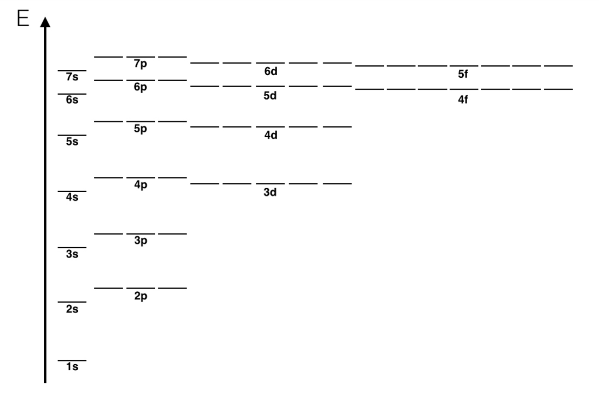
Chacun de ces traits n’est pas qu’un simple repère d’énergie : il correspond à une orbitale réelle, avec sa forme propre dans l’espace. La figure suivante superpose cette géométrie à la même échelle d’énergie.
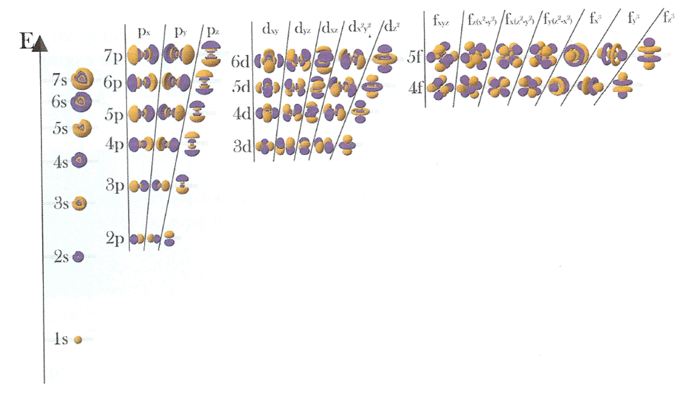
Il existe une convention pour décrire cette répartition : indiquer, pour chaque sous-couche occupée, son identifiant et le nombre d’électrons qu’elle contient en exposant.
L’architecture du stade — les adresses n, l, \(m_l\) — reste rigoureusement la même pour tout atome. Ce qui change d’un atome à l’autre, c’est l’altitude réelle de chaque sous-couche. Et c’est précisément ce réarrangement qui produit l’anomalie la plus célèbre du remplissage électronique : la sous-couche 4s, pourtant dans une couche plus haute que 3d, se retrouve à une énergie plus basse — elle se remplit donc en premier.
Nous touchons ici la limite de la métaphore du stade : elle décrit une géographie fixe, pas les déplacements d’altitude que provoque la présence des autres électrons. Cette nuance suffit cependant à comprendre pourquoi l’ordre de remplissage ne suit pas simplement n croissant, mais les deux règles de remplissage : Klechkowski et Hund.
Exercices :
- Parmi les combinaisons de nombres quantiques \((n, l, m_l, m_s)\) suivantes, lesquelles peuvent décrire un électron réel : \((1,0,0,+\tfrac12)\), \((2,1,-3,+\tfrac12)\), \((3,2,1,-\tfrac12)\), \((4,4,0,+\tfrac12)\) ?116
- Combien d’orbitales atomiques de type « g » (\(l=4\)) existe-t-il ? Quelle est la valeur minimale de \(n\) pour laquelle elles apparaissent ? Combien d’électrons cette sous-couche peut-elle contenir au maximum ?117
- Un électron a pour nombre quantique principal \(n=3\) et pour nombre quantique magnétique \(m_l=2\). Quelles valeurs du nombre quantique orbitalaire \(l\) sont compatibles avec cet électron ?118
- Quel est le nombre maximal d’électrons que peut contenir la couche \(n=3\) ? Et la sous-couche définie par \(n=3\) et \(l=2\) ?119
- Vérifiez que, pour \(n=3\), le nombre maximal d’électrons prévu par la formule \(2n^2\) correspond bien à la somme des capacités des sous-couches 3s, 3p et 3d.120
2.4.3 Remplissage du nuage électronique dans l’état fondamental
Dans l’histoire… L’ordre de remplissage porte le nom du chimiste soviétique Vsevolod Klechkovski, qui n’en donne la justification théorique qu’en 1962. Mais la règle elle-même avait déjà été énoncée en 1936 par Erwin Madelung — et, sept ans plus tôt encore, par Charles Janet (1929), sans que Madelung n’en ait eu connaissance. Un même résultat, découvert trois fois, sous trois noms.
2.4.3.1 Etat fondamental d’un nuage
La description d’un nuage composé d’électron se fait assez facilement quand il correspond à un stade au repos — un soir sans agitation, où chaque spectateur occupe le siège de plus basse énergie qui lui est accessible.
C’est ce qu’on appelle l’état fondamental de l’atome.
Les règles Klechkowski et Hund décrivent cet état au repos et sont deux expressions d’un seul principe :
le nuage électronique cherche toujours la configuration de plus basse énergie possible.
- Klechkowski décrit comment ce principe s’applique entre les sous-couches : les électrons occupent en priorité les sièges de plus basse énergie disponibles, ceux les plus proches du terrain.
- Hund décrit comment ce même principe s’applique à l’intérieur d’une sous-couche : entre plusieurs sièges de même hauteur, les électrons se répartissent d’abord un par un plutôt que de se regrouper deux par deux, ce qui réduit leur répulsion mutuelle et abaisse encore l’énergie totale.
2.4.3.2 Règles de Klechkowski
Règle de Klechkowski : Les sous-couches se remplissent par ordre croissant de la somme n + l. En cas d’égalité, la sous-couche de n le plus petit se remplit en premier. L’ordre de remplissage est :
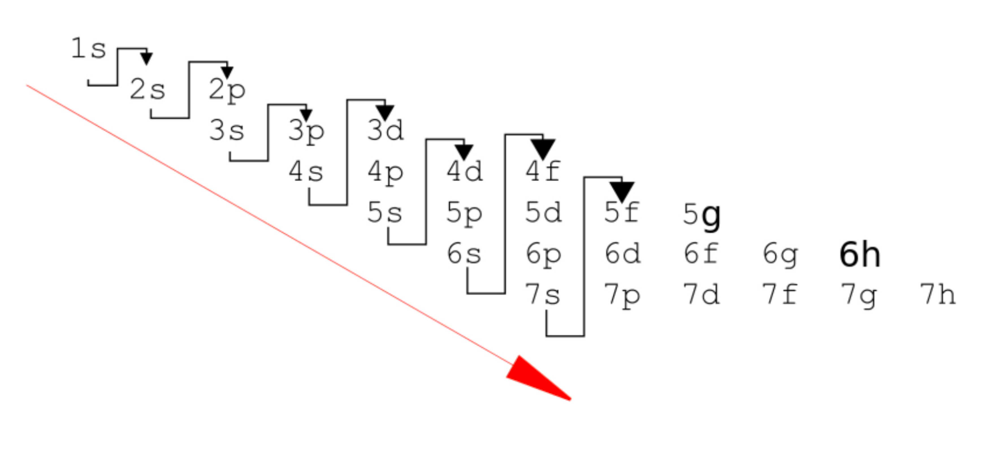
Exceptions notables à la règle de Klechkowski :
Comme nous l’avons vu, l’altitude réelle de chaque sous-couche dépend de l’atome considéré. Klechkowski n’est qu’une approximation, généralement excellente, de l’ordre réel des altitudes.
Dans plusieurs dizaines de cas — surtout parmi les métaux de transition —, l’ordre réel s’écarte de cette approximation.
Deux familles d’exceptions sont particulièrement régulières : - une sous-couche d’exactement à moitié remplie (d⁵) est particulièrement stable - une sous-couche d totalement remplie (d¹⁰) l’est tout autant.
Dans les deux cas, un électron de la sous-couche s voisine est « emprunté » pour l’atteindre :
- Cr (Z = 24) : [Ar] 3d⁵ 4s¹ (et non 3d⁴ 4s²)
- Mo (Z = 42) : [Kr] 4d⁵ 5s¹ (et non 4d⁴ 5s²)
- Cu (Z = 29) : [Ar] 3d¹⁰ 4s¹ (et non 3d⁹ 4s²)
- Ag (Z = 47) : [Kr] 4d¹⁰ 5s¹ (et non 4d⁹ 5s²)
- Au (Z = 79) : [Xe] 4f¹⁴ 5d¹⁰ 6s¹ (et non 5d⁹ 6s²)
D’autres éléments (Nb, Ru, Rh, Pd…) présentent des anomalies du même ordre, mais moins régulières ; nous ne les détaillerons pas ici.
2.4.3.3 Règles de Hund
Règle de Hund : Lorsque plusieurs orbitales de même énergie sont disponibles, les électrons les occupent d’abord individuellement avec des spins parallèles, avant de se coupler. Dans la métaphore du stade : on préfère avoir un spectateur par siège avant d’en mettre deux par siège.
2.4.3.4 Etat excité d’un nuage
Le stade n’est pas toujours calme. Lorsqu’un but est marqué — c’est-à-dire lorsque l’atome absorbe de l’énergie (un photon, un choc, une élévation de température) — un spectateur peut bondir de son siège vers une place vide, plus haute.
L’atome est alors dans un état excité : sa configuration ne suit plus ni Klechkowski ni Hund, puisque ces deux règles ne décrivent que la configuration de plus basse énergie. L’électron promu finira par retomber vers sa place d’origine, restituant l’énergie qu’il avait empruntée.
De telles règles existent pour décrire les états excités, mais nous ne les aborderons pas dans ce manuel.
La notion d’état excité reviendra toutefois lors du chapitre sur les transitions électroniques.
Exercices :
- Représentez en cases quantiques le remplissage de l’azote (\(Z=7\)). Combien d’électrons célibataires la règle de Hund impose-t-elle dans la sous-couche 2p ?121
- Parmi les configurations électroniques proposées pour le nickel (\(Z=28\)), l’une contient une sous-couche \(3p^8\). Cette configuration est-elle possible ? Pourquoi ?122
- Le chrome (\(Z=24\)) a pour configuration \([\text{Ar}]\,3d^5\,4s^1\), et non \([\text{Ar}]\,3d^4\,4s^2\) comme le prédirait Klechkowski seul. Pourquoi cette exception est-elle énergétiquement stable ?123
2.4.4 Le tableau périodique : la carte du nuage électronique
Dans l’histoire… En 1869, Dmitri Mendeleïev et Lothar Meyer proposent indépendamment un tableau ordonnant les éléments par masse atomique croissante et propriétés récurrentes. Mendeleïev va plus loin : il laisse des cases vides pour des éléments encore inconnus, dont la découverte du gallium (1875) puis du germanium (1886) confirmera les propriétés qu’il leur avait attribuées. Le tableau périodique n’est pas un simple inventaire — c’est une théorie déguisée en liste.
Tableau périodique: Le tableau périodique n’est pas une liste arbitraire d’éléments — c’est la carte du nuage électronique. Il nous révèle la structure du nuage électronique à l’état fondamental — et il vaut la peine de le regarder maintenant avec des yeux neufs.
Les blocs du tableau périodique portent le nom des sous-couches qu’ils représentent : - bloc \(s\) (2 colonnes) - bloc \(p\) (6 colonnes) - bloc \(d\) (10 colonnes) - bloc \(f\) (14 colonnes).
Attardons-nous un peu sur le tableau périodique et essayons d’y comprendre sa structure en le lisant de gauche à droite et de haut en bas.
- Hydrogène (Z = 1) : neutre, il nécessite 1 électron, qui se loge en 1s.
- Hélium (Z = 2) : neutre, il nécessite 2 électrons, qui se logent tous deux en 1s. La couche n = 1 est alors complète — elle n’offre plus de place disponible.
- Lithium (Z = 3) : neutre, il nécessite 3 électrons — 2 en 1s et 1 en 2s.
- Béryllium (Z = 4) : neutre, il nécessite 4 électrons — 2 en 1s et 2 en 2s.
- Bore (Z = 5) : neutre, il nécessite 5 électrons — 2 en 1s, 2 en 2s et 1 en 2p.
- Carbone (Z = 6) : neutre, il nécessite 6 électrons — 2 en 1s, 2 en 2s et 2 en 2p.
Si nous continuons cette logique, nous pouvons prendre le scandium (Z = 21). Ce noyau nécessite 21 électrons pour être neutre, qui occupent ainsi 21 places : 2 en 1s, 2 en 2s, 6 en 2p, 2 en 3s, 6 en 3p, 2 en 4s et enfin 1 en 3d.
Remarque : entre l’argon (Z = 18, fin du remplissage 3p) et le scandium, un premier électron entre en 4s au potassium (Z = 19), puis un second au calcium (Z = 20), complétant la sous-couche 4s — avant même que 3d ne commence à se remplir. C’est pour cette raison que le bloc d n’apparaît qu’à partir de la période 4 du tableau périodique, et non dès la période 3. Nous expliquerons pourquoi dans la section suivante, consacrée aux règles de Klechkowski et de Hund.
Avec cette progression, nous réalisons que le tableau périodique est une représentation des positions disponibles dans le nuage électronique pour les électrons.
Tableau périodique dire “les sous-couches se remplissent par ordre croissant de \(n + l\)” (règle de Klechkowski) reste abstrait tant qu’on ne l’a pas vu en action. Or cette règle n’est rien d’autre que le sens de lecture du tableau périodique lui-même — de gauche à droite, de haut en bas.
Le tableau périodique n’est pas une liste arbitraire d’éléments — c’est la carte du nuage électronique.
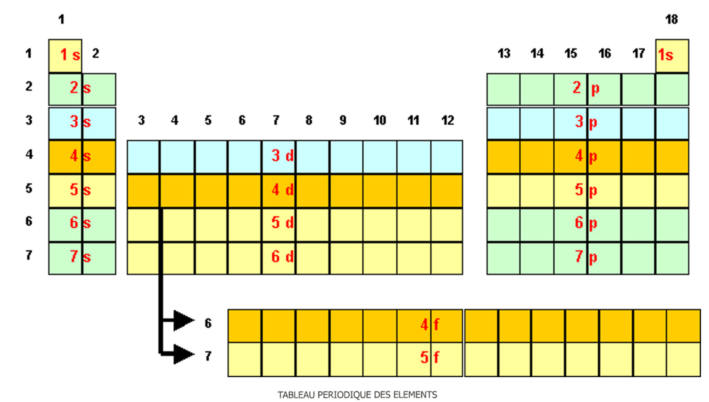
En réalité, cette logique dessine directement les blocs du tableau : bloc \(s\) (2 colonnes), bloc \(p\) (6 colonnes), bloc \(d\) (10 colonnes), bloc \(f\) (14 colonnes).
Le bloc \(f\) n’est pas séparé du reste du tableau : il s’intercale entre le bloc \(s\) et le bloc \(d\), à la période 6 (après le lanthane) et à la période 7 (après l’actinium). On le détache uniquement pour éviter un tableau démesurément large — une convention graphique, pas une réalité physique.
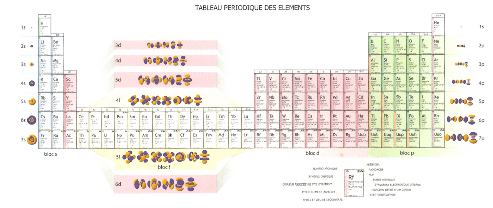
Exercices :
- Le bloc \(d\) du tableau périodique compte 10 colonnes. À quelle caractéristique du nuage électronique ce nombre correspond-il ?124
- Pourquoi le bloc \(d\) n’apparaît-il qu’à partir de la période 4 du tableau périodique, alors que la couche \(n=3\) autorise déjà des orbitales 3d ?125
- Le zinc (\(Z=30\)) appartient-il au bloc s, p, d ou f du tableau périodique ? Justifiez à partir de sa configuration électronique.126
2.4.5 Configuration électronique fondamentale complète.
La configuration électronique est la répartition des électrons dans les sous-couches, notée sous la forme : \[n\ell^{x}\] où \(n\) est le nombre quantique principal, \(\ell\) la lettre de la sous-couche (\(s\), \(p\), \(d\), \(f\)) et \(x\) le nombre d’électrons dans cette sous-couche.
Nous ne prenons pas en compte les noms des différentes orbitales p, d ou f, car ce niveau de détail n’est pas pertinent pour ce manuel.
2.4.5.1 Exemples de configurations électroniques fondamentales:
- Configuration fondamentale de l’atome d’argon \(^{37}_{18}\text{Ar}^{0}\) (possède 18) :
\[\text{N} : 1s^{2}\ 2s^{2}\ 2p^{6}\ 3s^{2}\ 3p^{6}\]
- Configuration fondamentale de l’atome d’oxygène \(^{16}_{8}\text{O}^{0}\) (possède 18) :
\[\text{O} : 1s^{2}\ 2s^{2}\ 2p^{4}\]
Ce principe s’applique à tous les atomes.
Regardons maintenant celles des trois halogènes — fluor , chlore et brome :
Configuration fondamentale de l’atome de fluor \(^{19}_{9}\text{O}^{0}\): \[\text{F}\ (Z=9) : 1s^{2}\ 2s^{2}\ 2p^{5}\]
Configuration fondamentale de l’atome de chlore \(^{35}_{17}\text{O}^{0}\): \[\text{Cl}\ (Z=17) : 1s^{2}\ 2s^{2}\ 2p^{6}\ 3s^{2}\ 3p^{5}\]
Configuration fondamentale de l’atome de brome \(^{75}_{35}\text{O}^{0}\): \[\text{Br}\ (Z=35) : 1s^{2}\ 2s^{2}\ 2p^{6}\ 3s^{2}\ 3p^{6}\ 3d^{10}\ 4s^{2}\ 4p^{5}\]
Ces trois configurations, bien que de longueurs différentes, se terminent toutes de la même façon : - six électrons dans la couche externe (\(ns^{2}\ np^{5}\)).
C’est précisément ce point commun qui explique leurs propriétés chimiques similaires — ils appartiennent à la même famille, la même colonne du tableau périodique.
2.4.5.2 Exemple d’une configuration électronique excitée
Rappel Une configuration qui ne respecte pas la règle de Klechkowski n’est pas la configuration fondamentale de l’atome, mais une configuration excitée.
Exemple: Une configuration excitée possible de l’atome de soufre \(^{32}_{16}\text{S}^{0}\)
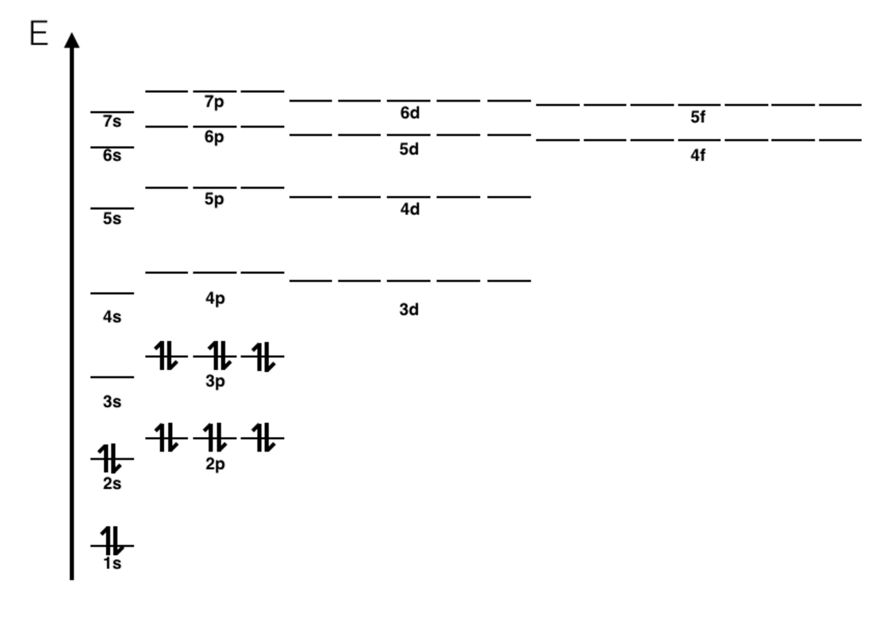
Comptons : \(2 + 2 + 6 + 6 = 16\) électrons — le bon total pour le soufre (\(Z = 16\)).
Mais la sous-couche \(3s\) reste vide alors que \(3p\) est déjà pleine.
Or Klechkowski impose \(3s\) avant \(3p\) : cette configuration ne peut pas correspondre à l’état fondamental du soufre — un électron y a été placé en \(3p\) sans que \(3s\) soit d’abord rempli.
Ce n’est pas une configuration fondamentale, mais une configuration excitée.
Nous le verrons plus tard : une structure électronique excitée émet de l’énergie électromagnétique dans son environnement. Une structure fondamentale, elle, ne peut que l’absorber.
Exercices :
- Donnez la configuration électronique complète du \(^{28}_{14}\text{Si}^{0}\).127
- Une configuration proposée pour \(^{32}_{16}\text{S}^{0}\) s’écrit \(1s^2\,2s^2\,2p^6\,3p^6\). Cette configuration est-elle correcte ? Pourquoi ?128
- Donnez la configuration électronique complète du \(^{40}_{20}\text{Ca}^{0}\).129
2.4.6 Configuration électronique abrégée
Les configurations complètes deviennent rapidement longues pour les éléments lourds.
Exemple : prenons le cas de la configuration électronique complète du \(^{208}_{82}\text{Pb}^{\circ}\) :
\[1s^2\ 2s^2\ 2p^6\ 3s^2\ 3p^6\ 3d^{10}\ 4s^2\ 4p^6\ 4d^{10}\ 4f^{14}\ 5s^2\ 5p^6\ 5d^{10}\ 6s^2\ 6p^2\]
Une bonne partie de cette écriture est redondante : le xénon (Z = 54), gaz noble qui précède le plomb, a pour configuration \(1s^2\ 2s^2\ 2p^6\ 3s^2\ 3p^6\ 3d^{10}\ 4s^2\ 4p^6\ 4d^{10}\ 5s^2\ 5p^6\). Cette suite de sous-couches se retrouve intégralement au sein de celle du plomb — à ceci près qu’elle y est suivie du bloc \(4f^{14}\) (vide chez le xénon, puisque cette sous-couche ne commence à se peupler qu’à partir du lanthane).
Nous pouvons donc remplacer ce bloc entier par le symbole \([\text{Xe}]\), et ne garder que les électrons ajoutés au-delà de cette configuration :
\[[\text{Xe}]\ 4f^{14}\ 5d^{10}\ 6s^2\ 6p^2\]
On peut ainsi facilement alléger l’écriture des configurations électroniques en remplaçant la partie correspondant au gaz noble précédent par son symbole entre crochets. C’est ce qu’on appelle la configuration électronique abrégée.
Exemples travaillés :
- Exemple 1 — Donnez la configuration électronique abrégée du \(^{32}_{16}\text{S}^{\circ}\) :**
Configuration complète : \(1s^{2}\ 2s^{2}\ 2p^{6}\ 3s^{2}\ 3p^{4}\)
Le gaz rare précédent est le néon : \([\text{Ne}] = 1s^{2}\ 2s^{2}\ 2p^{6}\)
Configuration abrégée : \([\text{Ne}]\ 3s^{2}\ 3p^{4}\)
- Exemple 2 — Reprenons nos trois halogènes en notation abrégée :
\[\text{F} : [\text{He}]\ 2s^{2}\ 2p^{5}\] \[\text{Cl} : [\text{Ne}]\ 3s^{2}\ 3p^{5}\] \[\text{Br} : [\text{Ar}]\ 3d^{10}\ 4s^{2}\ 4p^{5}\]
La ressemblance de fin de configuration apparaît encore plus clairement.
Cette écriture abrégée révèle une information essentielle : le nuage électronique se scinde naturellement en deux zones.
- D’un côté, un cœur — la configuration complète d’un gaz noble — dont les électrons sont profondément enfouis près du noyau.
- De l’autre, les électrons ajoutés au-delà de ce cœur, situés plus loin, entre ce cœur et la limite extérieure du nuage.
Nous allons voir que ce sont précisément ces électrons externes — les électrons de valence — qui déterminent l’essentiel du comportement chimique de l’atome.
Exercices :
- Donnez les configurations électroniques abrégées de \(^{24}_{12}\text{Mg}^{0}\), \(^{27}_{13}\text{Al}^{0}\) et \(^{63}_{29}\text{Cu}^{0}\).[^ne126]
2.4.7 Électrons de coeur et de valence
Le nuage électronique se divise naturellement en deux parties :
- les électrons de cœur, formant une région électroniquement quasi inactive.
- les électrons de valence — ceux qui déterminent le comportement chimique de l’atome.
Formalisation IUPAC: Les électrons de cœur sont l’ensemble des électrons d’un atome qui ne participent pas aux liaisons chimiques — par opposition aux électrons de valence.
Une frontière qui n’est pas si simple. Les sous-couches \(d\) ou \(f\) posent en effet quelques difficultés : elles sont spatialement plus proches du noyau que les couches de valence les plus externes, mais leur énergie reste très proche de celle-ci — trop proche pour qu’on puisse les considérer comme un cœur véritablement figé.
2.4.7.1 Élements des blocs \(s\) et \(p\)
Pour les éléments des blocs \(s\) et \(p\), la situation est claire : leurs orbitales \(d\) et \(f\), lorsqu’elles existent, sont soit complètement vides, soit complètement pleines. - Une sous-couche \(d\) ou \(f\) complète est considérée comme électrons de cœur — elle est spatialement enfouie dans le nuage et n’intervient pas dans les liaisons. Les électrons de valence des élements des blocs \(s\) et \(p\) sont donc uniquement ceux de la dernière couche \(n\), et leur nombre est directement égal au numéro du groupe dans le tableau périodique (colonnes 1 à 2 pour le bloc \(s\), colonnes 13 à 18 pour le bloc \(p\)). Tout le reste — y compris une éventuelle sous-couche \(d\) ou \(f\) complète héritée d’une période antérieure — constitue le cœur.
Exemples pour les éléments du groupe 14 :
\[\text{Ge}\ (Z=32) : \underbrace{[\text{Ar}]\ 3d^{10}}_{\text{cœur}}\ \underbrace{4s^{2}\ 4p^{2}}_{\text{valence}} \quad \to \quad 4\ \text{électrons de valence}\]
\[\text{Sn}\ (Z=50) : \underbrace{[\text{Kr}]\ 4d^{10}}_{\text{cœur}}\ \underbrace{5s^{2}\ 5p^{2}}_{\text{valence}} \quad \to \quad 4\ \text{électrons de valence}\]
\[\text{Pb}\ (Z=82) : \underbrace{[\text{Xe}]\ 4f^{14}\ 5d^{10}}_{\text{cœur}}\ \underbrace{6s^{2}\ 6p^{2}}_{\text{valence}} \quad \to \quad 4\ \text{électrons de valence}\]
Ge, Sn et Pb appartiennent tous au groupe 14 : ils ont tous 4 électrons de valence, ce qui leur confère des propriétés chimiques comparables malgré leurs masses très différentes.
Périodicité du tableau périodique
C’est précisément cette architecture universelle qui explique la périodicité du tableau : dans le bloc \(s\) et \(p\), les éléments d’un même groupe (d’une même colonne) ont leurs électrons de valence de même configuration, ce qui leur confère des propriétés chimiques similaires.
2.4.7.2 Élements des blocs \(d\) et \(f\)
Bloc d et bloc f — éléments de transition. Pour les éléments des blocs \(d\) et \(f\), la situation est plus complexe.
Leurs orbitales \(d\) ou \(f\) sont partiellement remplies, spatialement enfouies dans le nuage, et contribuent aux propriétés chimiques de manière variable.
Il n’est pas possible d’attribuer de manière univoque des électrons de cœur et des électrons de valence comme pour les blocs \(s\) et \(p\).
C’est pourquoi on les appelle éléments de transition — ils assurent le passage progressif entre le bloc \(s\) et le bloc \(p\). Nous pouvons écrire leur configuration électronique abrégée, mais nous ne cherchons pas à classer leurs électrons en cœur et valence de façon stricte. Leur nombre d’électron réactif est intérprété par un autre biais, leur nombre d’oxydation - que nous reverrons plus loin.
2.4.7.3 Formalisation — récapitulatif :
| Bloc | Électrons de valence | Règle pratique |
|---|---|---|
| \(s\) | Électrons de la dernière couche \(n\) | Groupe 1–2 |
| \(p\) | Électrons de la dernière couche \(n\) (sous-couches \(d\) et \(f\) pleines → cœur) | Groupe 13–18 |
| \(d\) | Pas de classification stricte | Éléments de transition |
| \(f\) | Pas de classification stricte | Terres rares, actinides |
Exercices :
- Pourquoi le fluor et le chlore ont-ils des propriétés chimiques similaires, malgré des tailles très différentes ?130
- Vérifiez que le germanium, l’étain et le plomb possèdent tous les trois 4 électrons de valence.131
- Deux éléments possèdent le même nombre d’électrons de valence, mais un nombre de couches différent. Se trouvent-ils dans la même colonne ou dans la même période du tableau périodique ?132
2.4.8 La notation de Lewis
Dans l’histoire… En 1916, Gilbert Lewis propose que deux atomes se lient en partageant une paire d’électrons — le doublet liant —, fondement de la liaison covalente. Il invente au passage la notation graphique qui porte son nom : doublets non liants en points, liaisons en tirets. Malgré de nombreuses nominations, Lewis reste l’un des grands absents du prix Nobel.
La chimie s’est massivement développée autour des atomes des blocs s et p. Connaître et représenter le nombre d’électrons de valence d’un atome des blocs \(p\) et \(s\) a été et est un outil incroyable. C’est le but de la notation de Lewis.
Formalisation IUPAC : la notation de Lewis (ou schéma de Lewis) est une représentation symbolique d’un atome, d’un ion ou d’une molécule dans laquelle on indique uniquement les électrons de valence — les électrons de cœur, non impliqués dans les liaisons, ne sont jamais représentés.
Principe :
- Le symbole chimique de l’élément représente le noyau et l’ensemble de ses électrons de cœur.
- Autour de ce symbole, on place les électrons de valence sous forme de points, groupés par paires lorsque c’est possible : - un doublet non liant (ou paire libre) : deux électrons de valence appartenant à un seul atome, non partagés. Ils prennent la forme d’un trait. - un électron célibataire : un point isolé, disponible pour former une liaison.
Cette distinction — doublet non liant contre électron célibataire — est une convention, non une réalité physique absolue, mais elle constitue un cadre d’une puissance remarquable : elle permettra, au chapitre suivant, de prédire quelles liaisons un atome peut former et lesquelles sont impossibles.
Éléments des blocs \(d\) et \(f\) : la notation de Lewis n’a de sens que parce qu’on peut trier les électrons d’un atome en deux catégories nettes. Nous ne représentons donc pas normalement les éléments des blocs \(d\) et \(f\) à l’aide de cette notation.
Exemple travaillé :
- Le silicium possède 4 électrons de valence (groupe 14): on place les 4 électrons seuls, un par côté (quatre côtés disponibles)
- le symbole Si est entouré de quatre point, un par côté .
- L’oxygène possède 6 électrons de valence (groupe 16) : on place d’abord 4 électrons seuls, un par côté, puis on apparie les 2 restants.
- le symbole O est ainsi entouré de 2 doublets non liants et de 2 électrons célibataires.
- Le fluor possède 7 électrons de valence (groupe 17) : on dispose d’abord un par côté, puis on apparie les électrons restants.
- le symbole F est ainsi entouré de 3 doublets non liants (traits) et d’un électron célibataire.
| NOM | CONFIGURATION ÉLECTRONIQUE | REPRÉSENTATION |
|---|---|---|
| H | \(1s^1\) | \(\begin{matrix} & \cdot & \ & \text{H} & \ & & \end{matrix}\) |
| C | \(\underbrace{[\text{He}]}_{\text{cœur}},\underbrace{2s^2,2p^2}_{\text{valence}}\) | \(\begin{matrix} & \cdot & \ \cdot & \text{C} & \cdot \ & \cdot & \end{matrix}\) |
| N | \(\underbrace{[\text{He}]}_{\text{cœur}},\underbrace{2s^2,2p^3}_{\text{valence}}\) | \(\begin{matrix} & \rule{2.2mm}{0.5pt} & \ \cdot & \text{N} & \cdot \ & \cdot & \end{matrix}\) |
| O | \(\underbrace{[\text{He}]}_{\text{cœur}},\underbrace{2s^2,2p^4}_{\text{valence}}\) | \(\begin{matrix} & \rule{2.2mm}{0.5pt} & \ \cdot & \text{O} & \rule{0.5pt}{2.2mm} \ & \cdot & \end{matrix}\) |
| P | \(\underbrace{[\text{Ne}]}_{\text{cœur}},\underbrace{3s^2,3p^3}_{\text{valence}}\) | \(\begin{matrix} & \rule{2.2mm}{0.5pt} & \ \cdot & \text{P} & \cdot \ & \cdot & \end{matrix}\) |
| Cl | \(\underbrace{[\text{Ne}]}_{\text{cœur}},\underbrace{3s^2,3p^5}_{\text{valence}}\) | \(\begin{matrix} & \rule{2.2mm}{0.5pt} & \ \rule{0.5pt}{2.2mm} & \text{Cl} & \rule{0.5pt}{2.2mm} \ & \cdot & \end{matrix}\) |
| Na | \(\underbrace{[\text{Ne}]}_{\text{cœur}},\underbrace{3s^1}_{\text{valence}}\) | \(\begin{matrix} & \cdot & \ & \text{Na} & \ & & \end{matrix}\) |
| Ne | \(\underbrace{[\text{He}]}_{\text{cœur}},\underbrace{2s^2,2p^6}_{\text{valence}}\) | \(\begin{matrix} & \rule{2.2mm}{0.5pt} & \ \rule{0.5pt}{2.2mm} & \text{Ne} & \rule{0.5pt}{2.2mm} \ & \rule{2.2mm}{0.5pt} & \end{matrix}\) |
Exercices :
- Donnez la configuration électronique complète du phosphore (\(Z = 15\)), sa notation abrégée avec le gaz noble précédent ainsi que sa notation de Lewis.133
- Combien d’électrons de valence possèdent respectivement : Na (\(Z = 11\)), Si (\(Z = 14\)), Cl (\(Z = 17\)), Ar (\(Z = 18\)) ? Écrire leur notation de Lewis.134
- Dessinez la notation de Lewis de l’azote (\(Z = 7\)) et du soufre (\(Z = 16\)). Combien d’électrons célibataires chacun possède-t-il ?135
- Le zinc (\(Z = 30\)) a pour configuration \([\text{Ar}]\ 3d^{10}\ 4s^{2}\). Combien d’électrons de valence possède-t-il ? Justifiez. Pouvez-vous dessiner sa notation de Lewis ?136
2.4.9 FIN DE SECTION 4 — Exercices de consolidation
- Combien d’orbitales existe-t-il dans une sous-couche \(d\) ?137
- Quel est le nombre maximal d’électrons dans la couche \(n=4\) ?138
- Un électron a pour nombre quantique principal \(n=2\) et pour nombre quantique orbitalaire \(l=1\). Quelles valeurs du nombre quantique magnétique \(m_l\) sont possibles pour lui ?139
- Donnez la configuration électronique complète de l’argon (\(Z=18\)).140
- Donnez la configuration électronique abrégée du brome (\(Z=35\)).141
- Établissez la notation de Lewis du silicium, qui possède 4 électrons de valence.142
- Combien d’électrons de valence possède l’étain (Sn, \(Z=50\), groupe 14) ?143
- Deux éléments d’une même colonne du tableau périodique ont-ils le même nombre d’électrons de valence ? Le même nombre de couches ?144
- Positionnez dans le tableau périodique un élément ayant 4 couches électroniques et formant préférentiellement des ions \(3+\). De quel élément s’agit-il ?145
- Le sélénium (\(Z=34\)) forme quel ion pour atteindre la configuration électronique d’un gaz noble ?146
- Vrai ou faux : la sous-couche \(4s\) se remplit avant la sous-couche \(3d\).147
- Pourquoi le cuivre, de configuration \([\text{Ar}]\,3d^{10}\,4s^1\), est-il plus stable que la configuration \([\text{Ar}]\,3d^9\,4s^2\) prédite par Klechkowski seul ?148
- (exercice capstone) Le gallium a pour configuration \([\text{Ar}]\,3d^{10}\,4s^2\,4p^1\). Combien possède-t-il d’électrons de valence ? Pourquoi la sous-couche \(3d^{10}\), bien qu’écrite explicitement, n’en fait-elle pas partie ?149
2.5 Interaction lumière-matière et spectres atomiques
Nous concluons ce premier chapitre par l’une des découvertes les plus élégantes de la chimie moderne : l’interaction entre la lumière et la matière. Elle nous éclaire sur les raisons pour lesquelles les atomes absorbent et émettent de la lumière et explique pourquoi les phénomènes d’absorption et d’émission présentent des signatures distinctes pour chaque atome.
2.5.1 Le spectre électromagnétique
Mais qu’est-ce que la lumière, exactement ?
Ce que nos yeux perçoivent, les couleurs de l’arc-en-ciel, du violet au rouge, n’est qu’une infime portion d’un phénomène bien plus vaste nommé le spectre électromagnétique.
La lumière visible, les ondes radio, les rayons X et les micro-ondes sont toutes des ondes électromagnétiques: une caractéristique qui les distingue est leur longueur d’onde, notée \(\lambda\) (lambda). Une onde électromagnétique peut être représentée schématiquement par une sinusoïde, une vague régulière avec des maxima et des minima. La distance entre deux maxima consécutifs correspond précisément à la longueur d’onde.
Les longueurs d’ondes des ondes électromagnétiques constituants le spectre électromagnétique s’étend sur plus de 15 ordres de grandeur.
| Région du spectre | Domaine de \(\lambda\) |
|---|---|
| Ondes radio | \(10^{3}\ \text{m}\) à \(10^{-1}\ \text{m}\) |
| Micro-ondes | \(10^{-1}\ \text{m}\) à \(10^{-3}\ \text{m}\) |
| Infrarouge | \(10^{-3}\ \text{m}\) à \(7 \times 10^{-7}\ \text{m}\) |
| Lumière visible | \(7 \times 10^{-7}\ \text{m}\) à \(4 \times 10^{-7}\ \text{m}\) |
| Ultraviolets (UV) | \(4 \times 10^{-7}\ \text{m}\) à \(10^{-8}\ \text{m}\) |
| Rayons X | \(10^{-8}\ \text{m}\) à \(10^{-11}\ \text{m}\) |
| Rayons gamma | \(< 10^{-11}\ \text{m}\) |
2.5.1.1 La lumière blanche
Le soleil émet-il une lumière blanche ?
La lumière blanche n’a pas de longueur d’onde unique — c’est une combinaison de couleurs dans le visible que notre cerveau interprète comme une teinte unique. Aucune des couleurs du visible qui la composent n’est elle-même blanche.
Un prisme de verre le démontre directement. Chaque longueur d’onde de la lumière blanche y suit un trajet légèrement différent — c’est la dispersion. En faisant traverser un faisceau de lumière blanche à travers une fente puis un prisme, nous séparons ce faisceau en un arc continu de couleurs, du violet au rouge - les couleurs de l’arc en ciel. Ces couleurs étaient déjà présentes dans le faisceau incident ; le prisme ne fait que révéler leurs trajectoires distinctes.
2.5.1.2 Le rayonnement solaire
Ce n’est pas un hasard si le vivant s’est développé précisément autour de ces longueurs d’onde du visible: ce sont elles qui définissent, sur Terre, ce que nous appelons le jour. Les organismes photosynthétiques en tirent leur énergie. La chlorophylle absorbe préférentiellement le rouge et le bleu pour la photosynthèse, et réfléchit ce qu’elle n’utilise pas — le vert. Une plante est verte parce qu’elle rejette cette couleur, pas parce qu’elle l’émet.
Toute la lumière du soleil lumière ne nous parvient cependant pas intacte. L’atmosphère filtre une partie du rayonnement solaire avant qu’il n’atteigne le sol — en particulier dans l’ultraviolet, où l’écart entre le rayonnement extraterrestre et le rayonnement mesuré au sol est le plus marqué. Ce filtrage est un travail fondamental : hors de l’atmosphère, ce rayonnement UV redevient dangereux, et les astronautes doivent s’en protéger activement.
2.5.2 Le photon et la quantification de l’énergie
Dans l’histoire… En 1900, Max Planck démontre que l’énergie n’est pas échangée de manière continue, mais par paquets discrets — des quanta —, dont l’énergie est proportionnelle à la fréquence. Planck lui-même hésite à y croire, la considérant comme une simple astuce mathématique. C’est Albert Einstein (1905) qui généralise l’idée en proposant que la lumière elle-même est constituée de ces quanta — les photons —, expliquant du même coup l’effet photoélectrique : le quantum cesse d’être une astuce, il devient une réalité physique.
Formalisation : Les ondes électromagnétique sont constituées de photons — des paquets d’énergie discrets. L’énergie d’un photon est directement proportionnelle à sa fréquence \(\nu\) :
\[E = h \cdot \nu = \frac{h \cdot c}{\lambda}\]
où \(h = 6{,}626 \times 10^{-34}\ \text{J·s}\) est la constante de Planck, \(c = 2{,}998 \times 10^{8}\ \text{m/s}\) la vitesse de la lumière et \(\lambda\) la longueur d’onde.
Attention : Fréquence et longueur d’onde sont inversement proportionnelles : \(\nu = c / \lambda\). Un photon violet (\(\lambda \approx 400\ \text{nm}\)) est plus énergétique qu’un photon rouge (\(\lambda \approx 700\ \text{nm}\)).
Afin d’illustrer l’interaction entre la lumière et la matière, décrivons deux approches expérimentales:
Exercices :
- Un photon violet, de longueur d’onde 400 nm, est-il plus ou moins énergétique qu’un photon rouge, de longueur d’onde 700 nm ? Répondez sans calcul.150
- Classez par énergie croissante les rayonnements suivants : micro-ondes, rayons X, lumière visible.151
2.5.3 Lien entre ondes électromagnétique et atomes.
Comme nous l’avons vu, le noyau n’est pas qu’un simple point au centre de l’atome : il crée, par son attraction électrique, tout un environnement énergétique autour de lui — c’est lui qui construit le stade dans lequel les électrons trouvent leur place.
Nous avions vu, au début du chapitre, que le spectre électromagnétique pouvait être relié à la taille des objets. Nous allons découvrir ci-dessous que le spectre électromagnétique peut aussi être relié à des phénomènes autour des atomes.
Pour rappel, nous avons vu qu’un nuage électronique peut être dans un état excité : cela signifie qu’un électron occupe une position plus énergétique que dans la configuration à l’état fondamental. Si l’électron bascule dans un état plus bas en énergie, il relâche de l’énergie sous forme d’une onde électromagnétique — autrement dit un photon. Mais dans quel domaine se situe la longueur d’onde de ce photon ? Ce domaine se situe normalement entre les U.V. et l’I.R.
Est-ce que d’autres domaines du spectre électromagnétique sont en lien avec les atomes ?
- Si les électrons ne se déplacent pas dans le nuage mais en sont arrachés, les photons correspondants sont des U.V. et des rayons X.
- Le rayonnement gamma est constitué de photons qui correspondent aux énergies des noyaux. Nous pourrions observer ce genre de photon dans les phénomènes de fusion et de fission nucléaires.
- Les molécules peuvent également vibrer — les noyaux oscillent le long de leurs liaisons — sans qu’aucun électron ne change de niveau. Ces phénomènes absorbent et émettent des photons dans le domaine infrarouge (moyen infrarouge).
- Les molécules peuvent aussi tourner sur elles-mêmes : les photons mis en jeu dans ces mouvements de rotation se situent dans l’infrarouge lointain et les micro-ondes.
Ce manuel se concentre sur les transitions électroniques de valence — celles qui produisent les domaines UV, visible et infrarouge — avec un accent particulier sur le visible, directement accessible à l’œil nu et aux expériences de spectroscopie que nous allons mener.
Question philosophique… L’électron changeant de niveau change d’énergie ; il libère donc cette énergie sous forme de photon. Mais d’où provient ce photon ? Où était-il avant ? Pourquoi était-il dans le nuage ? L’électron, pour rappel, n’a même pas de volume. Bref, par ces questions nous réalisons que nous faisons face à une dualité onde-particule. Le nuage électronique n’est pas intuitif.
2.5.4 Spectre d’émission
Un gaz confiné dans une enceinte hermétique est soumis à des décharges électriques. Le gaz produit alors un rayonnement, qui est envoyé sur un prisme pour le décomposer et obtenir son spectre. Celui-ci est composé de raies brillantes.
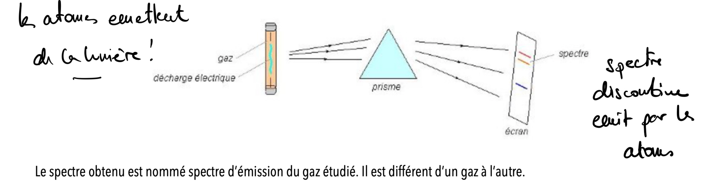
Au niveau particulaire, ce sont les atomes eux-mêmes qui émettent cette lumière : chaque raie brillante correspond à un photon libéré par une transition électronique précise. Le spectre obtenu, discontinu, est nommé spectre d’émission du gaz étudié — il diffère d’un gaz à l’autre.
2.5.5 Spectre d’absorption
Un gaz contenu dans une enceinte est éclairé par une lumière blanche puissante. La lumière transmise par le gaz est envoyée sur un prisme pour obtenir son spectre. Celui-ci se présente comme le spectre de la lumière blanche (bandes continues), à l’exception de raies sombres, nommées raies noires ou raies d’absorption.
Au niveau particulaire, ce sont là aussi les atomes qui agissent : ils absorbent sélectivement certaines longueurs d’onde de la lumière blanche. Les raies noires correspondent précisément à la lumière qui n’a pas été transmise — elle a été captée par les atomes du gaz. Le spectre obtenu est le spectre d’absorption du gaz ; comme pour le spectre d’émission, il change d’un gaz à l’autre.
Retenons l’essentiel avant d’aller plus loin : dans les deux cas, c’est l’atome qui dicte le spectre. Pourquoi ces raies sont-elles aussi précises, et pourquoi sont-elles exactement les mêmes en émission et en absorption ? C’est ce que nous allons maintenant comprendre.
Expérience
Passons un coton-tige imprégné de solution de NaCl dans une flamme : une lumière jaune intense apparaît instantanément. Placé devant un spectroscope — instrument muni d’un prisme qui décompose la lumière selon ses longueurs d’onde — on ne voit pas un arc-en-ciel continu, mais deux raies jaunes très précises, caractéristiques du sodium. Le chlore, lui, émet aussi de la lumière, mais dans l’ultraviolet : invisible à l’œil nu, absent de l’écran du spectroscope. Chaque élément chimique produit un spectre de raies qui lui est propre — une empreinte digitale lumineuse. C’est ce phénomène que Johann Jakob Balmer a quantifié dès 1885 pour l’hydrogène, posant les premières bases de la physique quantique.
Nous avons vu que le nuage électronique d’un atome contient bien plus de places disponibles que d’électrons. Ces places vacantes se trouvent à des niveaux d’énergie plus élevés que ceux occupés à l’état fondamental. Un électron peut quitter sa configuration d’équilibre et transitionner vers une place de plus haute énergie — à condition de recevoir exactement l’énergie correspondant à cet écart. Cette énergie lui est fournie par un photon absorbé. On parle alors de transition électronique et le spectre correspondant est appelé spectre d’absorption.
L’inverse est tout aussi remarquable : un électron placé dans une configuration de haute énergie est instable. Il redescend spontanément vers une configuration de plus basse énergie, et ce faisant, il libère l’excédent d’énergie sous forme d’un photon émis. La fréquence de ce photon — et donc sa couleur, si elle tombe dans le visible — est déterminée de manière rigoureuse par l’écart entre les deux niveaux. C’est le spectre d’émission. Le nuage électronique se comporte ainsi comme un récepteur et un émetteur d’ondes électromagnétiques, capable d’absorber et de réémettre de l’énergie de manière parfaitement sélective.
Certaines transitions sont dites permises, d’autres interdites selon des règles de sélection quantiques — cela dépasse le cadre de ce cours. Retenons l’essentiel : chaque transition correspond à une énergie précise, donc à une longueur d’onde précise, donc à une raie précise dans le spectre.
Exercices :
- Dans un spectre d’émission, les raies apparaissent-elles claires sur fond sombre, ou l’inverse ? Et dans un spectre d’absorption ?152
- Pourquoi le spectre d’émission du sodium, composé de raies jaunes, diffère-t-il de celui du chlore, situé dans l’ultraviolet ?153
2.5.6 Transitions électroniques et spectres d’émission
Dans l’histoire… En 1888, Johannes Rydberg généralise la formule empirique de Balmer à toutes les séries spectrales de l’hydrogène — pas seulement au visible. Ces raies sont un message codé de l’atome ; il reste, à l’époque, à en trouver le déchiffrage.
Au niveau particulaire : Un électron ne peut occuper que des niveaux d’énergie discrets (\(E_1, E_2, E_3, \ldots\)). Lorsqu’il est excité (par chauffage ou décharge électrique), il monte à un niveau supérieur. En revenant à un niveau inférieur, il émet un photon dont l’énergie correspond exactement à la différence entre les deux niveaux :
\[\Delta E = E_{\text{supérieur}} - E_{\text{inférieur}} = h \cdot \nu\]
Représentation symbolique : Pour l’hydrogène, les niveaux d’énergie sont donnés par la formule de Bohr :
\[E_n = -\frac{13{,}6\ \text{eV}}{n^{2}}\]
Les transitions vers \(n = 2\) (série de Balmer) émettent dans le visible :
| Transition | \(\lambda\) (nm) | Couleur |
|---|---|---|
| \(n = 3 \to n = 2\) | 656 | Rouge |
| \(n = 4 \to n = 2\) | 486 | Bleu-vert |
| \(n = 5 \to n = 2\) | 434 | Violet |
| \(n = 6 \to n = 2\) | 410 | Violet |
Spectres d’absorption : L’inverse est aussi possible — un atome peut absorber un photon d’énergie exactement égale à \(\Delta E\) et monter à un niveau supérieur. Le spectre d’absorption contient les mêmes raies que le spectre d’émission, mais en sombre sur fond continu.
Exemple travaillé :
Calculez l’énergie et la longueur d’onde du photon émis lors de la transition \(n = 4 \to n = 2\) de l’hydrogène.
Étape 1 — énergies des niveaux : \(E_4 = -13{,}6 / 16 = -0{,}850\ \text{eV}\) \(E_2 = -13{,}6 / 4 = -3{,}400\ \text{eV}\)
Étape 2 — énergie du photon : \(\Delta E = -0{,}850 - (-3{,}400) = 2{,}550\ \text{eV} = 2{,}550 \times 1{,}602 \times 10^{-19} = 4{,}09 \times 10^{-19}\ \text{J}\)
Étape 3 — longueur d’onde : \(\lambda = hc / \Delta E = (6{,}626 \times 10^{-34} \times 2{,}998 \times 10^{8}) / (4{,}09 \times 10^{-19}) = 486\ \text{nm}\) (bleu-vert, conforme au tableau)
Exercices :
- Calculez l’énergie d’un photon de longueur d’onde \(\lambda = 589\) nm (raie jaune du sodium). Exprimez le résultat en joules et en eV.154
- La transition \(n = 3 \to n = 2\) de l’hydrogène correspond à \(\lambda = 656\) nm. Calculez \(\Delta E\) en eV et vérifiez avec la formule de Bohr.155
- Pourquoi les atomes n’émettent-ils que des raies discrètes et non un spectre continu ?156
- Un photon a une énergie de \(4{,}50 \times 10^{-19}\) J. Calculez sa longueur d’onde. Dans quelle région du spectre se trouve-t-il ?157
- La série de Lyman correspond à des transitions vers \(n = 1\). La transition \(n = 2 \to n = 1\) donne \(\Delta E = 10{,}2\) eV. Calculez \(\lambda\) et déterminez si ce photon est visible.158
2.5.7 FIN DE SECTION 5 — Exercices de consolidation
- Calculez l’énergie d’un photon de longueur d’onde 400 nm, en joules et en eV.159
- Calculez la fréquence d’une onde électromagnétique de longueur d’onde 700 nm.160
- Le spectre d’émission et le spectre d’absorption d’un même gaz présentent-ils les mêmes raies, ou des raies différentes ?161
- Un photon a une énergie de 2,0 eV. Quelle est sa longueur d’onde ? Ce photon est-il visible ?162
- Pourquoi la série de Lyman, correspondant aux transitions vers \(n=1\), tombe-t-elle systématiquement dans l’ultraviolet ?163
- Calculez la longueur d’onde de la transition \(n=5 \to n=2\) de l’hydrogène, qui appartient à la série de Balmer. Cette raie est-elle visible ?164
- Une raie spectrale est observée à \(\lambda = 121\) nm. Dans quel domaine du spectre électromagnétique se situe-t-elle ? À quelle série appartient-elle probablement ?165
- Un atome d’hydrogène absorbe un photon et un électron passe du niveau \(n=1\) au niveau \(n=3\). Quelle est l’énergie absorbée, en eV ?166
- Calculez l’énergie de la transition \(n=4 \to n=1\) de l’hydrogène, qui appartient à la série de Lyman, puis la longueur d’onde correspondante.167
- L’ion \(\text{He}^+\) est hydrogénoïde, avec \(Z=2\) et \(E_0 = 2{,}18 \times 10^{-18}\) J. Calculez l’énergie de son niveau \(n=1\), en joules puis en eV.168
- (exercice capstone) Comparez l’énergie d’ionisation de l’hydrogène, 13,6 eV, à celle de \(\text{He}^+\) calculée à la question précédente. Par quel facteur diffèrent-elles, et d’où vient précisément ce facteur ?169
2.6 Formation d’ions : énergie d’ionisation et affinité électronique
Avec la section sur sur le nuage électronique, nous réalisons que les électrons ne sont pas figés dans leur configuration — ils peuvent absorber de l’énergie et monter vers des niveaux plus élevés. Mais peuvent-ils aller plus loin encore ? Peuvent-ils quitter complètement un nuage électronique et entrer dans un autre ? La réponse est oui — et c’est la clé de compréhension d’une grande famille de liaisons chimiques que nous rencontrerons au chapitre 2.
2.6.1 Énergie d’ionisation
L’énergie qu’il faut fournir pour arracher un électron à un atome neutre à l’état gazeux s’appelle la première énergie d’ionisation (\(EI_1\)). Ce n’est pas n’importe quel électron qui part en premier : c’est toujours celui qui est le moins solidement lié au noyau — autrement dit, l’électron de valence le plus externe.
\[\text{X}_{(g)} \to \text{X}^+_{(g)} + e^- \qquad \Delta E = EI_1\]
Il est possible d’arracher un deuxième électron à l’ion ainsi formé — c’est la deuxième énergie d’ionisation (\(EI_2\)) — puis un troisième, et ainsi de suite. Ces énergies successives sont toujours croissantes : chaque électron arraché laisse un ion de charge plus positive, qui retient les électrons restants plus fortement.
Ce que les énergies d’ionisation nous révèlent. Ces valeurs ne sont pas du tout uniformes — et leurs variations sont extraordinairement informatives. Rappelons que plus un photon est énergétique, plus sa longueur d’onde est courte (\(E = hc/\lambda\)) : un photon de 400 nm (violet) est bien moins énergétique qu’un photon de 0,1 nm (rayons X).
Prenons le sodium (\(Z = 11\), configuration \([\text{Ne}]\ 3s^1\)) :
| Ionisation | Processus | Énergie (eV) | \(\lambda\) équivalente |
|---|---|---|---|
| \(EI_1\) | Na → Na⁺ + e⁻ | 5,1 | ~240 nm (UV proche) |
| \(EI_2\) | Na⁺ → Na²⁺ + e⁻ | 47,3 | ~26 nm (UV extrême) |
| \(EI_3\) | Na²⁺ → Na³⁺ + e⁻ | 71,6 | ~17 nm (rayons X) |
Le saut brutal entre \(EI_1\) et \(EI_2\) est sans équivoque : après avoir perdu son unique électron de valence (\(3s^1\)), Na⁺ adopte la configuration de Ne — et arracher un électron de cœur coûte dix fois plus cher. Voilà pourquoi nous rencontrons Na⁺ partout autour de nous, Na⁰ rarement, et Na²⁺ jamais dans la chimie ordinaire.
Prenons le magnésium (\(Z = 12\), configuration \([\text{Ne}]\ 3s^2\)) :
| Ionisation | Processus | Énergie (eV) | \(\lambda\) équivalente |
|---|---|---|---|
| \(EI_1\) | Mg → Mg⁺ + e⁻ | 7,6 | ~163 nm (UV lointain) |
| \(EI_2\) | Mg⁺ → Mg²⁺ + e⁻ | 15,0 | ~83 nm (UV extrême) |
| \(EI_3\) | Mg²⁺ → Mg³⁺ + e⁻ | 80,1 | ~15 nm (rayons X) |
Ici, \(EI_1\) et \(EI_2\) sont du même ordre de grandeur — les deux électrons \(3s\) sont équivalents. Le saut colossal apparaît entre \(EI_2\) et \(EI_3\) : Mg²⁺ a atteint la configuration de Ne, et le troisième électron est un électron de cœur. Résultat : dans la nature, le magnésium existe sous forme Mg⁰ ou Mg²⁺, jamais Mg³⁺.
Quelques autres exemples pour ancrer la règle générale :
- Potassium (K, groupe 1) : \(EI_1 = 4{,}3\) eV — le plus faible des métaux alcalins courants. K⁺ est omniprésent dans les cellules vivantes.
- Calcium (Ca, groupe 2) : \(EI_1 = 6{,}1\) eV, \(EI_2 = 11{,}9\) eV, \(EI_3 = 50{,}9\) eV. Ca²⁺ est l’ion stable — constitutif des os, du calcaire, du ciment.
- Aluminium (Al, groupe 13) : \(EI_1 = 6{,}0\) eV, \(EI_2 = 18{,}8\) eV, \(EI_3 = 28{,}4\) eV, \(EI_4 = 120\) eV. Le saut apparaît entre \(EI_3\) et \(EI_4\) : Al³⁺ est l’ion stable.
- Chlore (Cl, groupe 17) : \(EI_1 = 13{,}0\) eV — élevée. Le chlore ne cède pas facilement ses électrons. Il en gagne, comme nous allons le voir.
2.6.2 Lien avec la configuration électronique.
La règle générale se dégage clairement : le saut brutal dans les énergies d’ionisation apparaît toujours lorsqu’on tente d’arracher un électron de cœur. Les atomes perdent leurs électrons de valence relativement facilement, puis s’arrêtent. Les cations les plus stables sont ceux qui imitent la configuration d’un gaz noble.
Pour un ion, on retire (cation) ou on ajoute (anion) des électrons à partir de la sous-couche de plus haute énergie. Pour les métaux de transition, cette règle réserve une surprise : ce sont les électrons \(4s\) qui sont retirés en premier, avant les \(3d\), car la sous-couche \(4s\) devient plus haute en énergie que \(3d\) une fois le remplissage effectué.
\[\text{Fe}^{2+} : [\text{Ar}]\ 3d^{6} \quad \text{(perte des deux électrons } 4s\text{)}\] \[\text{Fe}^{3+} : [\text{Ar}]\ 3d^{5} \quad \text{(perte d'un électron } 3d \text{ supplémentaire)}\]
Exemple — Donnez la configuration électronique abrégée de l’ion \(\text{Fe}^{2+}\) (Z = 26) :
Configuration de Fe à l’état neutre : \([\text{Ar}]\ 3d^{6}\ 4s^{2}\)
\(\text{Fe}^{2+}\) a perdu 2 électrons. Ce sont les électrons 4s — les plus hauts en énergie — qui partent en premier :
Configuration de \(\text{Fe}^{2+}\) : \([\text{Ar}]\ 3d^{6}\)
Les ions positifs stables ainsi formés portent le nom de cations monoatomiques — des ions chargés positivement ne contenant qu’un seul atome.
Exercices :
- Quel élément parmi le calcium, le soufre et l’argon possède l’énergie de première ionisation la plus faible ? Donnez deux arguments différents qui justifient votre réponse.170
- L’énergie de première ionisation augmente généralement le long d’une période, sauf pour le bore par rapport au béryllium, et l’oxygène par rapport à l’azote. Expliquez ces deux exceptions à l’aide des configurations électroniques.171
- Sans chercher les valeurs numériques, classez les atomes suivants par énergie de première ionisation croissante : sélénium, strontium, tellure, fluor, brome et césium.172
- Les énergies de première ionisation du lithium, du sodium et du potassium valent respectivement 5,4, 5,1 et 4,3 eV. Expliquez cette tendance, puis déduisez-en lequel de ces trois métaux réagit le plus violemment avec l’eau.173
2.6.3 Affinité électronique
Si certains atomes perdent facilement des électrons, d’autres en gagnent tout aussi facilement. L’affinité électronique (\(AE\)) est l’énergie libérée lorsqu’un atome neutre à l’état gazeux capture un électron supplémentaire :
\[\text{X}_{(g)} + e^- \to \text{X}^-_{(g)} \qquad \Delta E = -AE\]
Par convention, une affinité électronique positive signifie que la réaction est exothermique — l’atome gagne de l’énergie en capturant l’électron, et l’ion formé est plus stable que l’atome neutre.
Ce que les affinités électroniques nous révèlent. Là encore, les valeurs sont très inégales — et tout aussi informatives.
Prenons le chlore (\(Z = 17\), configuration \([\text{Ne}]\ 3s^2\ 3p^5\)) :
\[\text{Cl}_{(g)} + e^- \to \text{Cl}^-_{(g)} \qquad AE = 3{,}61\ \text{eV}\]
Le chlore manque d’un seul électron pour atteindre la configuration de l’argon (\([\text{Ar}]\)). Il capte cet électron avec une affinité élevée — et Cl⁻ est extraordinairement stable. C’est l’ion chlorure, omniprésent dans le sel de cuisine, le plasma sanguin, l’eau de mer.
Quelques autres exemples :
- Fluor (F, groupe 17) : \(AE = 3{,}40\) eV — légèrement inférieure à celle du chlore, car l’orbitale \(2p\) est très compacte et l’électron supplémentaire subit plus de répulsion. F⁻ est néanmoins très stable.
- Oxygène (O, groupe 16) : \(AE_1 = 1{,}46\) eV pour O → O⁻, mais \(AE_2 = -7{,}7\) eV pour O⁻ → O²⁻ — cette deuxième capture est endothermique ! O²⁻ n’est stable que dans un cristal ionique (oxydes, silicates), jamais en phase gazeuse isolée.
- Soufre (S, groupe 16) : \(AE_1 = 2{,}08\) eV. S²⁻ existe dans les sulfures métalliques (pyrite, galène).
- Azote (N, groupe 15) : \(AE \approx 0\) eV — quasi nulle. La demi-sous-couche \(2p^3\) est particulièrement stable (règle de Hund), et N³⁻ n’existe que dans des nitrures métalliques très ioniques.
- Gaz nobles (He, Ne, Ar…) : \(AE < 0\) — ils repoussent l’électron supplémentaire. Leur couche externe est complète, aucun gain de stabilité possible.
Lien avec la configuration électronique. La règle symétrique de celle des cations : les atomes qui manquent de peu d’électrons pour atteindre une configuration de gaz noble ont les affinités électroniques les plus élevées — halogènes en tête. Ils capturent un ou deux électrons et s’arrêtent là.
Les ions négatifs stables ainsi formés portent le nom d’anions monoatomiques.
Pont vers le chapitre 2. Nous avons maintenant deux familles d’atomes : ceux qui cèdent facilement des électrons (métaux des groupes 1 et 2, faible \(EI_1\)) et ceux qui en captent avidement (non-métaux des groupes 16 et 17, grande \(AE\)). Lorsque ces deux familles se rencontrent, le transfert d’électrons est spontané — et le résultat est un composé ionique. C’est précisément ce que nous formaliserons au chapitre 2.
Exercices :
- Comparez l’affinité électronique de l’atome d’oxygène, lors de la formation de \(\text{O}^-\), à celle de l’anion \(\text{O}^-\), lors de la formation de \(\text{O}^{2-}\). Laquelle des deux captures est exothermique ?174
- Le soufre gazeux doit-il recevoir de l’énergie pour capter un premier électron ? Et pour en capter un deuxième ?175
- Pourquoi les gaz nobles ont-ils une affinité électronique négative, c’est-à-dire qu’ils repoussent l’électron supplémentaire ?176
2.6.4 FIN DE SECTION 6 — Exercices de consolidation
- Comparez la taille du sodium et de son ion \(\text{Na}^+\). Lequel des deux est le plus grand ?177
- Comparez la taille du chlore et de son ion \(\text{Cl}^-\). Lequel des deux est le plus grand ?178
- Classez le sodium, le magnésium et l’aluminium, tous trois de la période 3, par rayon atomique croissant.179
- Pourquoi le magnésium possède-t-il une énergie de première ionisation plus grande que le sodium, alors qu’il se trouve juste à sa droite dans le tableau périodique ?180
- Classez le potassium, le calcium et le gallium, qui appartiennent à la même période, par énergie de première ionisation croissante.181
- Le chlore a une affinité électronique de 3,61 eV, alors que celle de l’argon est négative. Expliquez cette différence.182
- Pourquoi l’ion fluorure \(\text{F}^-\) est-il si stable ?183
- Quel ion l’aluminium forme-t-il préférentiellement ? Pourquoi ne forme-t-il ni \(\text{Al}^{4+}\) ni \(\text{Al}^{2+}\) ?184
- Un ion \(M^{2+}\), dérivé d’un métal de la première série de transition, possède 6 électrons de valence, tous situés dans la sous-couche 3d. De quel élément s’agit-il ?185
- Pourquoi la deuxième énergie d’ionisation d’un élément est-elle toujours plus grande que la première ?186
- Le sodium présente un saut brutal entre sa première énergie d’ionisation, 5,1 eV, et sa deuxième, 47,3 eV. Expliquez ce saut à l’aide de sa configuration électronique.187
- (exercice capstone) Classez le sodium, le chlore et l’argon par affinité électronique croissante, en justifiant chaque position.188
2.7 Exercices de synthèse
- Un atome de phosphore (\(Z = 15\)) possède 16 neutrons. Donnez son symbole complet, sa configuration électronique abrégée, le nombre d’électrons de valence et sa notation de Lewis.189
- Exprimez la taille d’un atome de carbone (\(d \approx 154\ \text{pm}\)) en mètres, en nanomètres et en angströms. Comparez à la taille de son noyau (\(r_{\text{noyau}} \approx 2{,}7\ \text{fm}\)) : quel facteur sépare les deux ordres de grandeur ?190
- Le magnésium naturel contient \(^{24}\)Mg (78,99 %, 23,985 u), \(^{25}\)Mg (10,00 %, 24,986 u) et \(^{26}\)Mg (11,01 %, 25,983 u). Calculez la masse atomique relative moyenne. Combien de moles y a-t-il dans 12,15 g de magnésium ?191
- Calculez la masse en grammes de \(3{,}61 \times 10^{24}\) atomes de soufre (\(M = 32{,}06\) g/mol). Exprimez ensuite cette masse en kg.192
- L’hélium-4 possède 2 protons et 2 neutrons. Sachant que \(m_p = 1{,}00728\) u, \(m_n = 1{,}00866\) u et \(m_{^4\text{He}} = 4{,}00260\) u, calculez le défaut de masse en u et l’énergie de liaison en MeV (\(1\ \text{u} = 931{,}5\ \text{MeV}/c^2\)).193
- La raie rouge de l’hydrogène correspond à la transition \(n = 3 \to n = 2\) (\(\lambda = 656\) nm). Calculez l’énergie de ce photon en joules et en eV. À quelle série spectrale appartient-elle ?194
- Le fer (\(Z = 26\)) possède 30 neutrons. Donnez son symbole complet \(^A_Z\text{X}\), sa configuration électronique abrégée \(\ce{[Ar]}\ 3d^x\ 4s^y\) et le nombre d’électrons de valence.195
- Convertissez les valeurs suivantes en appliquant l’analyse dimensionnelle : (a) \(2{,}50 \times 10^{-3}\) km en cm ; (b) \(0{,}450\ \mu\text{g}\) en ng ; (c) \(3{,}20\ \text{dm}^3\) en \(\text{cm}^3\).196
- Le zirconium (\(Z = 40\), \(M = 91{,}22\) g/mol) possède l’isotope \(^{90}\)Zr avec une abondance de 51,45 % et \(M_A = 89{,}905\) u. Calculez la contribution de cet isotope à la masse atomique moyenne. Puis calculez combien d’atomes de Zr contient 1,00 g de zirconium naturel.197
- Un élément X a la configuration électronique de valence \(ns^2np^4\). Identifiez le groupe du tableau périodique, l’ion stable qu’il forme préférentiellement, et donnez deux exemples d’éléments X. Pour l’un d’eux (\(Z = 8\)), donnez la configuration électronique complète de l’ion formé et indiquez quel gaz noble il imite.198
Ces défis s’adressent à ceux qui veulent aller réellement plus loin. Ils exigent de mobiliser les notions de Zone 2 dans des contextes nouveaux.
Défi A — La masse volumique du noyau d’hélium
Le noyau de l’atome d’hélium-4 contient 2 protons et 2 neutrons. Son rayon vaut \(r = 1{,}0 \times 10^{-15}\ \text{m}\). On rappelle que \(m_{\text{p}} = m_{\text{n}} = 1{,}67 \times 10^{-24}\ \text{g}\) et que le volume d’une sphère est \(V = \frac{4}{3}\pi r^{3}\).
Calculons la masse volumique du noyau d’hélium-4 en \(\text{g/cm}^{3}\). Comparons ce résultat à celui de l’eau (\(1\ \text{g/cm}^{3}\)) et à celui estimé pour les étoiles à neutrons (\(\approx 5 \times 10^{14}\ \text{g/cm}^{3}\)). Que révèle ce calcul sur la structure de la matière ordinaire ?199
Défi B — Carbone-14 et datation archéologique
Le carbone-14 (\(^{14}\)C, \(Z = 6\)) est un isotope radioactif du carbone dont la demi-vie est \(t_{1/2} = 5\ 730\) ans. Tout être vivant maintient un rapport constant \(^{14}\text{C}/^{12}\text{C}\) grâce aux échanges avec l’atmosphère. À la mort, ce rapport diminue selon la loi de désintégration :
\[N(t) = N_0 \cdot \left(\frac{1}{2}\right)^{t/t_{1/2}}\]
Un morceau de bois fossilisé contient 25 % de la quantité initiale de \(^{14}\)C. Calculez l’âge de cet échantillon. Puis estimez combien d’atomes de \(^{14}\)C restent dans 1,00 g de ce bois, sachant que le rapport \(^{14}\text{C}/^{12}\text{C}\) initial est de \(1{,}2 \times 10^{-12}\).200
Défi C — Vers les liaisons chimiques
La configuration électronique du sodium est \(\ce{[Ne]}\ 3s^{1}\) et celle du chlore est \(\ce{[Ne]}\ 3s^{2}\ 3p^{5}\).
En nous appuyant sur les notions d’énergie d’ionisation (pour Na) et d’affinité électronique (pour Cl), expliquez qualitativement pourquoi le sodium cède spontanément un électron au chlore lors de leur rencontre. Quelles configurations électroniques les deux ions formés adoptent-ils ? Ce type de transfert d’électron est à la base d’une grande famille de composés chimiques que nous étudierons au chapitre 2 — les composés ioniques.
Piste de réflexion : L’énergie d’ionisation du sodium est faible (5,1 eV) — il cède facilement son électron 3s. L’affinité électronique du chlore est grande (3,6 eV) — il gagne volontiers un électron. Le bilan énergétique global est favorable. \(\ce{Na+}\) adopte la configuration \(\ce{[Ne]}\) ; \(\ce{Cl-}\) adopte la configuration \(\ce{[Ar]}\) — tous deux imitent un gaz noble.201
2.8 Mots-clés
Atome : plus petite entité chimique d’un élément, constituée d’un noyau (protons et neutrons) entouré d’un nuage électronique.
Numéro atomique (\(Z\)) : nombre de protons dans le noyau ; définit l’identité de l’élément chimique.
Nombre de masse (\(A\)) : nombre total de nucléons (protons + neutrons) dans le noyau.
Isotopes : atomes d’un même élément (même \(Z\)) ayant un nombre de neutrons différent (donc un \(A\) différent).
Mole : unité SI de quantité de matière ; une mole contient \(N_A = 6{,}022 \times 10^{23}\) entités élémentaires.
Masse molaire (\(M\)) : masse d’une mole d’un élément ou d’une substance, exprimée en g/mol ; sa valeur numérique est identique à la masse atomique relative moyenne en u.
Défaut de masse (\(\Delta m\)) : différence entre la masse des nucléons constituant le noyau pris séparément et la masse mesurée du noyau ; toujours positif, converti en énergie de liaison par \(E = \Delta m \cdot c^{2}\).
Configuration électronique : répartition des électrons d’un atome dans ses sous-couches (\(1s^{2}\ 2s^{2}\ 2p^{6}\ldots\)), déterminée par les règles de Klechkowski et de Hund.
Électrons de valence : électrons de la couche externe d’un atome ; seuls ceux-ci participent aux liaisons chimiques.
Orbitale : région de l’espace autour du noyau où la probabilité de trouver un électron est supérieure à 90 % ; caractérisée par les trois nombres quantiques \(n\), \(l\) et \(m_l\). Contrairement à une orbite, elle ne définit pas une trajectoire mais une zone de présence probable.
Photon : paquet d’énergie élémentaire constituant la lumière et, plus généralement, tout rayonnement électromagnétique. Son énergie est \(E = h\nu\), où \(h\) est la constante de Planck et \(\nu\) la fréquence du rayonnement.
Spectre d’émission : ensemble de raies lumineuses produites par un atome excité lorsque ses électrons reviennent à leur état fondamental en émettant des photons d’énergie bien définie \(\Delta E = h\nu\).
Projet-Balmer — Manuel de chimie pour les gymnases vaudois
Masse : 1 kg dans chaque verre — extensive, elle se divise. Température : \(20\ ^\circ\text{C}\) dans chaque verre — intensive, elle ne se divise pas.↩︎
19,3 g/mL. La densité est intensive : elle ne dépend pas de la quantité de matière. Couper un morceau d’or en deux ne change pas sa densité — chaque morceau a toujours la même densité que le bloc initial.↩︎
L’élève a raison. L’énergie nécessaire est extensive : elle dépend de la quantité d’eau à chauffer — doubler la masse double l’énergie requise. La température (\(20\ ^\circ\text{C}\), \(40\ ^\circ\text{C}\)) est intensive : elle ne dépend pas de la quantité d’eau et ne s’additionne pas.↩︎
\(P = \dfrac{\text{kg}\cdot\text{m}\cdot\text{s}^{-2}}{\text{m}^{2}} = \text{kg}\cdot\text{m}^{-1}\cdot\text{s}^{-2}\). Cette combinaison porte le nom de pascal (Pa).↩︎
Non, elle n’est pas homogène. \(v\) et \(v_0\) s’expriment en \(\text{m}\cdot\text{s}^{-1}\), alors que \(a \cdot t^{2}\) s’exprime en \(\text{m}\cdot\text{s}^{-2} \cdot \text{s}^{2} = \text{m}\) — une longueur, pas une vitesse. L’équation correcte est \(v = v_0 + a \cdot t\), où \(a \cdot t\) s’exprime bien en \(\text{m}\cdot\text{s}^{-1}\).↩︎
\(E_c = \text{kg} \cdot (\text{m}\cdot\text{s}^{-1})^{2} = \text{kg}\cdot\text{m}^{2}\cdot\text{s}^{-2}\). Cette combinaison porte le nom de joule (J).↩︎
\(0{,}00012\ \text{mm} = 1{,}2 \times 10^{-4}\ \text{mm}\). Facteur mm → nm : \(10^{6}\). \(1{,}2 \times 10^{-4} \times 10^{6} = 1{,}2 \times 10^{2}\ \text{nm} = 120\ \text{nm}\).↩︎
\(0{,}3\ \text{mm} = 3 \times 10^{-1}\ \text{mm}\). Facteur mm → µm : \(10^{3}\). \(3 \times 10^{-1} \times 10^{3} = 3 \times 10^{2}\ \mu\text{m} = 300\ \mu\text{m}\).↩︎
\(54 \times 10^{3}\ \text{pm} = 5{,}4 \times 10^{4}\ \text{pm}\). Facteur pm → km : \(10^{-12} \times 10^{-3} = 10^{-15}\). \(5{,}4 \times 10^{4} \times 10^{-15} = 5{,}4 \times 10^{-11}\ \text{km}\).↩︎
D’abord \(0{,}0027\ \text{tonne} = 0{,}0027 \times 10^{6}\ \text{g} = 2{,}7 \times 10^{3}\ \text{g}\) (la tonne ne suit pas la règle des préfixes). Ensuite, facteur g → mg : \(10^{3}\). \(2{,}7 \times 10^{3} \times 10^{3} = 2{,}7 \times 10^{6}\ \text{mg}\).↩︎
\(2{,}5 \times 10^{8}\ \text{Å} = 2{,}5 \times 10^{8} \times 10^{-10}\ \text{m} = 2{,}5 \times 10^{-2}\ \text{m}\) (rappel : \(1\ \text{Å} = 10^{-10}\ \text{m}\)). Facteur m → km : \(10^{-3}\). \(2{,}5 \times 10^{-2} \times 10^{-3} = 2{,}5 \times 10^{-5}\ \text{km}\).↩︎
\(0{,}23\ \text{nm}^{2}\). Facteur nm² → cm² : \(10^{-14}\). \(0{,}23 \times 10^{-14} = 2{,}3 \times 10^{-15}\ \text{cm}^{2}\).↩︎
\(20\ \text{km}^{3}\). Facteur km³ → nm³ : \(10^{36}\). \(20 \times 10^{36} = 2 \times 10^{37}\ \text{nm}^{3}\).↩︎
\(4{,}7 \times 10^{2}\ \text{µm}^{2}\). Facteur µm² → mm² : \((10^{-3})^{2} = 10^{-6}\). \(4{,}7 \times 10^{2} \times 10^{-6} = 4{,}7 \times 10^{-4}\ \text{mm}^{2}\).↩︎
Facteur m³ → dm³ : \((10^{1})^{3} = 10^{3}\). \(2{,}4 \times 10^{3} = 2400\ \text{dm}^{3}\). Comme \(1\ \text{dm}^{3} = 1\ \text{L}\), ce volume vaut aussi \(2400\ \text{L}\).↩︎
\(850\ \text{cm}^{3} = 8{,}5 \times 10^{2}\ \text{cm}^{3}\). Facteur cm³ → dm³ : \((10^{-1})^{3} = 10^{-3}\). \(8{,}5 \times 10^{2} \times 10^{-3} = 8{,}5 \times 10^{-1}\ \text{dm}^{3} = 0{,}85\ \text{dm}^{3}\).↩︎
La masse du morceau de plomb est de 9,56 kg.↩︎
Sa masse est \(0{,}042 / 9{,}81 \approx 4{,}28 \times 10^{-3}\ \text{kg} = 4{,}28\ \text{g}\) ; son poids sur la Lune serait \(4{,}28 \times 10^{-3} \times 1{,}62 \approx 6{,}94 \times 10^{-3}\ \text{N} = 6{,}94\ \text{mN}\).↩︎
\(m = 2{,}6\ \text{g} = 2{,}6 \times 10^{-3}\ \text{kg}\). \(P_{\text{Lune}} \approx 4{,}21\ \text{mN}\) ; \(P_{\text{Mars}} \approx 9{,}67\ \text{mN}\) ; \(P_{\text{Terre}} \approx 25{,}5\ \text{mN}\). Le poids varie fortement d’un astre à l’autre, contrairement à la masse.↩︎
\(1\ \text{g/mL} = 1\ \text{g/cm}^3 = 1000\ \text{kg/m}^3\).↩︎
Volume déplacé : \(96{,}7 - 50{,}0 = 46{,}7\ \text{dL} = 4670\ \text{mL}\). \(\rho = 39\,600 / 4670 \approx 8480\ \text{kg/m}^3\) — cohérente avec la valeur trouvée à l’exercice précédent (8476 kg/m³).↩︎
0,36 kg/L.↩︎
Environ 17,0 cm.↩︎
\(T_{(\text{K})} = 273{,}15 + 100 = 373{,}15\ \text{K}\)↩︎
\(T_{(^\circ\text{C})} = 52 - 273{,}15 = -221{,}15\ ^\circ\text{C}\)↩︎
\(T_{(^\circ\text{C})} = 25\ ^\circ\text{C}\) ; \(T_{(\text{K})} = 298{,}15\ \text{K}\)↩︎
La hausse correspond exactement à 10 K (\(283{,}15 \to 293{,}15\) K), mais la température en kelvin n’a absolument pas doublé : la relation entre °C et K est affine, pas proportionnelle — doubler une valeur en °C ne double jamais la valeur en K.↩︎
Diamètre de la Terre \(\approx 1{,}3 \times 10^{7}\ \text{m} = 0{,}013\) Gm. Soleil-Terre : \(150 \div 0{,}013 \approx 11 500\) Terres. Terre-Mars (\(5{,}5 \times 10^{7}\ \text{km} = 55\) Gm) : \(55 \div 0{,}013 \approx 4 200\) Terres.↩︎
Comme les deux objets sont des sphères, le rapport des volumes est égal au cube du rapport des diamètres : \[\frac{V_{\text{Soleil}}}{V_{\text{Terre}}} = \left(\frac{D_{\text{Soleil}}}{D_{\text{Terre}}}\right)^{3} = \left(\frac{1{,}4 \times 10^{9}}{1{,}3 \times 10^{7}}\right)^{3} \approx (107{,}7)^{3} \approx 1{,}25 \times 10^{6}\] Environ 1,25 million de Terres pourraient, en théorie, tenir dans le volume du Soleil.↩︎
\(r = 50\ \mu\text{m} = 5 \times 10^{-5}\ \text{m}\), \(h = 20\ \text{cm} = 0{,}2\ \text{m}\). \[V_{\text{un cheveu}} = \pi r^{2} h = \pi \times (5 \times 10^{-5})^{2} \times 0{,}2 \approx 1{,}57 \times 10^{-9}\ \text{m}^{3}\] Pour 100 000 cheveux : \(V_{\text{total}} = 100,000 \times 1{,}57 \times 10^{-9} = 1{,}57 \times 10^{-4}\ \text{m}^{3}\). Conversion en dm³ (facteur \(10^{3}\)) : \(1{,}57 \times 10^{-4} \times 10^{3} = 0{,}157\ \text{dm}^{3}\) — environ 157 cm³, à peu près le volume d’une tasse.↩︎
À cette échelle, aucun instrument optique ne permet d’imager directement la structure de l’atome ou de son noyau. Les méthodes expérimentales qui ont permis de la révéler sont d’une autre nature : diffusion de particules, spectroscopie, accélérateurs.↩︎
\(0{,}1\ \text{nm} = 10^{-10}\ \text{m}\) ; \(1\ \text{fm} = 10^{-15}\ \text{m}\) ; rapport : \(10^{-10} \div 10^{-15} = 10^{5}\).↩︎
Diamètre d’un ballon de foot ≈ 22 cm, soit un rayon de \(0{,}11\ \text{m}\) assimilé au rayon du noyau. Rapport atome/noyau : \(10^{-10} \div 10^{-15} = 10^{5}\). Rayon de l’atome à cette échelle : \(0{,}11\ \text{m} \times 10^{5} = 11,000\ \text{m} = 11\ \text{km}\) ; diamètre \(\approx 22\ \text{km}\). Un hectare (\(100\ \text{m} \times 100\ \text{m}\)) est totalement insuffisant : il faudrait environ \(38,000\) hectares (\(\approx 380\ \text{km}^2\)) rien que pour la surface du nuage électronique.↩︎
\(23\ \text{m} \div 10^{5} = 2{,}3 \times 10^{-4}\ \text{m} = 0{,}23\ \text{mm}\) – environ le diamètre d’un grain de sel fin.↩︎
a) Grandeurs fondamentales (parmi la liste) : la masse (kg), le temps (s), la température (K), l’intensité électrique (A). b) La masse est extensive. Le temps est ambigu (dépend du mode de combinaison, voir plus haut). La température, l’intensité électrique et la pression sont intensives. La vitesse est intensive (doubler la quantité de matière ne double pas la vitesse). La force est extensive (à accélération égale, doubler la masse double la force : \(F = ma\)). L’énergie cinétique est extensive (à vitesse égale, doubler la masse double \(E_c\)). L’aire, comme la longueur, dépend du mode de combinaison (mise bout à bout vs mise à l’échelle proportionnelle).↩︎
\(1{,}67\times10^{-24}\ \text{g} \times 10^{-3} = 1{,}67\times10^{-27}\ \text{kg}\) ; \(1{,}67\times10^{-24}\ \text{g} \times 10^{9} = 1{,}67\times10^{-15}\ \text{ng}\).↩︎
\(4{,}2\ \text{cm} = 4{,}2 \times 10^{-2}\ \text{m}\). Facteur cm → µm : \(10^{4}\). \(4{,}2 \times 10^{4}\ \mu\text{m} = 42 000\ \mu\text{m}\).↩︎
Facteur mg → kg : \(10^{-6}\). \(750 \times 10^{-6} = 7{,}5 \times 10^{-4}\ \text{kg}\).↩︎
Facteur µs → ns : \(10^{3}\). \(0{,}066 \times 10^{3} = 66\ \text{ns}\).↩︎
77,15 K.↩︎
Environ \(-273{,}15\ ^\circ\text{C}\) — une valeur indiscernable du zéro absolu à cette précision.↩︎
\(V = 27\ \text{cm}^3\) ; \(m = 2{,}70 \times 27 = 72{,}9\ \text{g} = 0{,}0729\ \text{kg}\). Poids sur la Lune : \(0{,}0729 \times 1{,}62 \approx 0{,}118\ \text{N}\).↩︎
Environ 7697 kg/m³ pour chaque partie — la masse volumique ne change pas (grandeur intensive).↩︎
25,0 mL.↩︎
Terre : \(r = 6{,}5 \times 10^{6}\ \text{m}\) ; \(V \approx 1{,}15 \times 10^{21}\ \text{m}^{3}\). \[\rho_{\text{Terre}} = \frac{5{,}97 \times 10^{24}}{1{,}15 \times 10^{21}} \approx 5190\ \text{kg/m}^{3}\] (proche de la valeur réelle, \(5514\ \text{kg/m}^3\).) Lune : \(r = 1{,}75 \times 10^{6}\ \text{m}\) ; \(V \approx 2{,}24 \times 10^{19}\ \text{m}^{3}\). \[\rho_{\text{Lune}} = \frac{7{,}35 \times 10^{22}}{2{,}24 \times 10^{19}} \approx 3280\ \text{kg/m}^{3}\] (proche de la valeur réelle, \(3344\ \text{kg/m}^3\).)↩︎
\(r = 0{,}14\ \text{nm} = 1{,}4 \times 10^{-10}\ \text{m}\). \[V_{\text{molécule}} \approx 1{,}15 \times 10^{-29}\ \text{m}^{3}\] \[V_{\text{baignoire}} = 150\ \text{L} = 0{,}150\ \text{m}^{3}\] \[N = \frac{0{,}150}{1{,}15 \times 10^{-29}} \approx 1{,}30 \times 10^{28}\ \text{molécules}\] À titre de comparaison, le calcul exact via la mole (que nous verrons plus tard) donne environ \(5{,}0 \times 10^{27}\) molécules — le même ordre de grandeur. L’écart vient du fait que des sphères ne peuvent jamais remplir tout l’espace disponible sans laisser de vide entre elles.↩︎
Nombre d’étoiles \(= 2\times10^{12} \times 10^{11} = 2\times10^{23}\). Masse totale \(= 2\times10^{23} \times 2\times10^{30} = 4\times10^{53}\ \text{kg}\). Nombre d’atomes \(= 4\times10^{53} \div 1{,}67\times10^{-27} \approx 2{,}4\times10^{80}\) atomes.↩︎
\(q=+1\) ; \(q=0\) ; \(q=-1\).↩︎
\(q=+2\) ; avec \(Z=25\), il s’agit du manganèse (Mn).↩︎
\(Z = 19\), \(N = 20\) → \(A = 39\) ; élément : potassium (K) ; notation : \(^{39}_{19}\text{K}\).↩︎
\(Z = 11\), \(N = 12\) → \(A = 23\) ; notation : \(^{23}_{11}\text{Na}\) ; nombre d’électrons (atome neutre) : 11.↩︎
\(Z = 8\) → élément : oxygène (O) ; \(N = A - Z = 16 - 8 = 8\) neutrons ; notation complète : \(^{16}_{8}\text{O}\).↩︎
Deutérium : 1 proton, 1 neutron. Tritium : 1 proton, 2 neutrons. Oui, ils ont les mêmes propriétés chimiques : ils partagent le même numéro atomique (\(Z=1\)), seule leur masse diffère.↩︎
C’est un isotope du carbone-12, car les deux ont le même numéro atomique (\(Z=6\)). Le carbone-14 et l’azote-14 sont isobares — même nombre de masse — mais pas isotopes.↩︎
La légère différence de masse entre les isotopes entraîne des vitesses d’évaporation et de condensation différentes, ce qui fait varier leur proportion relative selon la température.↩︎
\(q=-1\).↩︎
15 électrons.↩︎
10 électrons ; il s’agit de l’aluminium (Al).↩︎
\(A=12\) ; il s’agit du carbone.↩︎
\(q=0\) ; il s’agit du chlore.↩︎
\(q=-1\) ; \(^{35}_{17}\text{Cl}^-\).↩︎
Faux — ce sont des isotopes : ils ont les mêmes propriétés chimiques, seule leur masse diffère.↩︎
Oui — même numéro atomique (chlore), mais nombre de masse différent (35 et 37).↩︎
Vrai, par définition d’un atome neutre.↩︎
\(A=235\) ; il s’agit de l’uranium.↩︎
24 électrons ; il s’agit du fer, sous forme \(^{56}\text{Fe}^{2+}\).↩︎
\(q=+3\) ; il lui reste 76 électrons.↩︎
Non — deux isotopes ont le même nombre de protons, mais pas nécessairement le même nombre de neutrons. Exemple : \(^{35}\text{Cl}\) et \(^{37}\text{Cl}\) ont tous deux 17 protons, mais 18 et 20 neutrons respectivement.↩︎
\(Z=19\) ; il s’agit du potassium.↩︎
19 protons, 20 neutrons, 19 électrons ; après la perte d’un électron, \(q=+1\). La charge change ; le nombre de nucléons (donc la masse) ne change pas.↩︎
Environ 10,4 g/cm³ — du même ordre de grandeur que la matière ordinaire qui nous entoure, comme pour l’atome d’hydrogène.↩︎
Environ \(2{,}3\times10^{14}\) g/cm³ — du même ordre de grandeur : la densité nucléaire est étonnamment constante d’un élément à l’autre.↩︎
23, 35, 56 et 238 u respectivement — l’approximation fonctionne car chaque nucléon a une masse voisine de 1 u.↩︎
20,0 u — probablement un atome de néon.↩︎
K-40 (\(Z=19\), \(N=21\)) — Masse des constituants (avec 19 électrons) : \[19 \times 1{,}00728 + 21 \times 1{,}00866 + 19 \times 0{,}000548 = 19{,}1383 + 21{,}1819 + 0{,}0104 = 40{,}3306\ \text{u}\] \[\Delta m = 40{,}3306 - 39{,}9640 = 0{,}3666\ \text{u}\] \[E_l = 0{,}3666 \times 931{,}5 = 341{,}5\ \text{MeV}\]↩︎
Fe-56 (\(Z=26\), \(N=30\)) — Masse des constituants (avec 26 électrons) : \[26 \times 1{,}00728 + 30 \times 1{,}00866 + 26 \times 0{,}000548 = 26{,}1893 + 30{,}2598 + 0{,}0142 = 56{,}4633\ \text{u}\] \[\Delta m = 56{,}4633 - 55{,}9349 = 0{,}5284\ \text{u}\] \[E_l = 0{,}5284 \times 931{,}5 = 492{,}2\ \text{MeV}\]↩︎
\(\Delta m = 0{,}0592\) u ; environ 6,14 MeV par nucléon.↩︎
Le \(^{62}\)Ni est en réalité le noyau le plus stable connu, légèrement au-dessus du fer — même si le fer est bien plus abondant dans l’univers pour des raisons de nucléosynthèse, pas de stabilité pure.↩︎
Uranium 235 (\(Z = 92\), \(N = 143\), \(A = 235\)) — a) Masse des constituants séparés : \(92 \times 1{,}007825 + 143 \times 1{,}008665 = 236{,}958995\ \text{u}\). b) Défaut de masse : \(\Delta m_{235} = 236{,}958995 - 235{,}043930 = 1{,}915065\ \text{u}\). c) Énergie de liaison : \(E_{\ell,235} = 1{,}915065 \times 931{,}494 \approx 1783{,}9\ \text{MeV}\). d) Énergie de liaison par nucléon : \(1783{,}9 / 235 \approx 7{,}591\ \text{MeV/nucléon}\). Uranium 238 (\(Z = 92\), \(N = 146\), \(A = 238\)) — a) Masse des constituants séparés : \(92 \times 1{,}007825 + 146 \times 1{,}008665 = 239{,}984990\ \text{u}\). b) Défaut de masse : \(\Delta m_{238} = 239{,}984990 - 238{,}050788 = 1{,}934202\ \text{u}\). c) Énergie de liaison : \(E_{\ell,238} = 1{,}934202 \times 931{,}494 \approx 1801{,}7\ \text{MeV}\). d) Énergie de liaison par nucléon : \(1801{,}7 / 238 \approx 7{,}570\ \text{MeV/nucléon}\). e) Le \(^{235}_{92}\text{U}\) (\(7{,}591\ \text{MeV/nucléon}\)) est très légèrement plus stable que le \(^{238}_{92}\text{U}\) (\(7{,}570\ \text{MeV/nucléon}\)) — l’écart reste faible, les deux isotopes se situant loin du maximum de la courbe (atteint vers le fer et le nickel). C’est d’ailleurs le \(^{235}_{92}\text{U}\), plus instable face à la fission, qui est utilisé comme combustible dans les réacteurs et les bombes atomiques.↩︎
\(E = 0{,}09894 \times 931{,}5 = 92{,}2\) MeV ; par nucléon : \(92{,}2 / 12 = 7{,}68\) MeV/nucléon.↩︎
Le maximum se situe autour du \(^{62}\)Ni (A≈56-62). Dans les deux cas, on se rapproche de ce maximum, donc l’énergie de liaison par nucléon augmente et l’excédent est libéré sous forme d’énergie.↩︎
L’hydrogène et l’hélium se trouvent à gauche du maximum de la courbe d’Aston : les fusionner augmente leur énergie de liaison par nucléon. Le fer est déjà proche de ce maximum ; le fusionner l’en éloignerait, ce qui coûterait de l’énergie plutôt que d’en libérer.↩︎
\(M_A = 0{,}199 \times 10{,}013 + 0{,}801 \times 11{,}009 = 1{,}993 + 8{,}818 = 10{,}81\) u.↩︎
\(M_A = 0{,}7899 \times 23{,}985 + 0{,}1000 \times 24{,}986 + 0{,}1101 \times 25{,}983 = 18{,}944 + 2{,}499 + 2{,}861 = 24{,}30\) u, soit 24,31 u (valeur tabulée).↩︎
Parce que le carbone naturel contient 1,07 % de \(^{13}\)C (masse 13,003 u), ce qui tire la moyenne légèrement au-dessus de 12,000 u.↩︎
24 g représente exactement 2 moles de \(^{12}\text{C}\) (\(24/12=2\)). Nombre d’atomes \(= 2 \times N_A = 2 \times 6{,}022\times10^{23} = 1{,}2044\times10^{24}\) atomes.↩︎
Même nombre d’atomes (\(N_A\) dans les deux cas, par définition de la mole), mais masses différentes : \(m(^1\text{H}) = 1{,}007825\) g et \(m(^{12}\text{C}) = 12\) g (car \(1\ \text{u} \times N_A = 1\ \text{g}\), la masse molaire en grammes reprend numériquement la masse atomique en u). Une mole de carbone-12 est donc environ 12 fois plus lourde qu’une mole d’hydrogène, bien que les deux renferment le même nombre d’atomes.↩︎
Masse d’une mole : \(m = 55{,}85\) g (numériquement égale à la masse atomique en u). Masse d’un seul atome : \(m_{\text{atome}} = \dfrac{55{,}85\ \text{g}}{N_A} = \dfrac{55{,}85}{6{,}022\times10^{23}} \approx 9{,}27\times10^{-23}\) g.↩︎
\(n = \dfrac{5{,}00}{12} \approx 0{,}4167\) mol. Nombre d’atomes \(= 0{,}4167 \times 6{,}022\times10^{23} \approx 2{,}51\times10^{23}\) atomes.↩︎
\(n = \dfrac{15{,}7}{197{,}0} \approx 0{,}0797\) mol. Nombre d’atomes \(= 0{,}0797 \times 6{,}022\times10^{23} \approx 4{,}80\times10^{22}\) atomes.↩︎
\(n = 1{,}73 \times 10^{-2}\) mol ; \(N = 1{,}04 \times 10^{22}\) atomes.↩︎
\(m = 2{,}50 \times 55{,}85 = 139{,}6\) g.↩︎
\(n = \dfrac{50{,}0}{207{,}2} \approx 0{,}241\) mol.↩︎
\(m = 0{,}75 \times 196{,}97 \approx 147{,}7\) g.↩︎
\(n = \dfrac{3{,}00}{12{,}011} \approx 0{,}2498\) mol. Nombre d’atomes \(= 0{,}2498 \times 6{,}022\times10^{23} \approx 1{,}50\times10^{23}\) atomes.↩︎
\(n = \dfrac{2{,}50\times10^{22}}{6{,}022\times10^{23}} \approx 0{,}0415\) mol. \(m = 0{,}0415 \times 196{,}97 \approx 8{,}18\) g.↩︎
\(M(\ce{NaCl}) = 22{,}99 + 35{,}45 = 58{,}44\ \text{g/mol}\).↩︎
\(M(\ce{C6H12O6}) = 6 \times 12{,}011 + 12 \times 1{,}008 + 6 \times 15{,}999 = 72{,}066 + 12{,}096 + 95{,}994 = 180{,}16\ \text{g/mol}\).↩︎
\(n = 9{,}00 / 18{,}015 = 0{,}4996 \approx 0{,}500\) mol ; \(N = 0{,}500 \times 6{,}022 \times 10^{23} = 3{,}01 \times 10^{23}\) molécules.↩︎
Chaque molécule de \(\ce{CO2}\) contient 2 atomes d’O ; \(N(\text{O}) = 0{,}100 \times 2 \times 6{,}022 \times 10^{23} = 1{,}20 \times 10^{23}\) atomes.↩︎
Masse d’une molécule : \(5 808\) Da (par définition, \(1\ \text{Da} = 1\ \text{u}\), et la masse molaire en g/mol reprend numériquement la masse d’une molécule en Da). En grammes : \(m_{\text{molécule}} = \dfrac{M}{N_A} = \dfrac{5 808}{6{,}022\times10^{23}} \approx 9{,}64\times10^{-21}\) g. Pour la dose : \(0{,}20\) mg \(= 2{,}0\times10^{-4}\) g, donc \(n = \dfrac{2{,}0\times10^{-4}}{5 808} \approx 3{,}44\times10^{-8}\) mol, soit \(3{,}44\times10^{-8} \times 6{,}022\times10^{23} \approx 2{,}07\times10^{16}\) molécules d’insuline.↩︎
16,0 u — probablement un atome d’oxygène.↩︎
96,3 g.↩︎
\(M = 40{,}00\) g/mol ; \(n = 0{,}500\) mol.↩︎
\(n = 0{,}1\) mol.↩︎
\(y = 3000\).↩︎
\(M_A = 6{,}94\) u — une correspondance quasi parfaite avec la valeur du tableau périodique.↩︎
Environ 83,89.↩︎
Environ 65,45 u.↩︎
\(\Delta m = 0{,}137\) u ; \(E = 127{,}6\) MeV, soit 7,98 MeV par nucléon.↩︎
2 moles de sodium, soit 45,98 g, contre 24,31 g pour 1 mole de magnésium.↩︎
\(M = 342\) g/mol par les deux méthodes ; \(N = 1{,}76 \times 10^{24}\) molécules ; masse d’une molécule ≈ \(5{,}7 \times 10^{-22}\) g.↩︎
Environ \(1{,}78 \times 10^{18}\) gouttes — soit environ 940 fois moins que le nombre de molécules dans une seule goutte.↩︎
Il prédirait des périodes de 2, 8, 18 puis 32 éléments, ce qui ne correspond pas à la structure réelle du tableau au-delà des deux premières lignes.↩︎
Une couche correspond à une tribune, une sous-couche à une rangée, et une orbitale à un siège pouvant accueillir deux électrons.↩︎
Seules la première et la troisième sont valides. La deuxième viole la règle \(-l \le m_l \le +l\) ; la quatrième viole la règle \(l \le n-1\).↩︎
9 orbitales ; \(n\) minimal égal à 5 ; 18 électrons au maximum.↩︎
Seule la valeur \(l=2\) convient, car il faut à la fois \(l \ge |m_l|\) et \(l \le n-1\).↩︎
18 électrons pour la couche \(n=3\) ; 10 électrons pour la sous-couche 3d.↩︎
\(2+6+10=18\), ce qui correspond bien à \(2\times3^2=18\).↩︎
3 électrons célibataires, un par case, avec des spins parallèles.↩︎
Non — une sous-couche p ne peut contenir que 6 électrons au maximum.↩︎
Une sous-couche d exactement à moitié remplie, avec cinq électrons célibataires, est énergétiquement favorable.↩︎
Au nombre maximal d’électrons d’une sous-couche d : 5 orbitales, à 2 électrons chacune, soit 10.↩︎
Parce que la sous-couche 4s se remplit avant la sous-couche 3d : le potassium et le calcium remplissent 4s avant que 3d ne commence à se peupler.↩︎
Au bloc d — sa dernière sous-couche remplie est \(3d^{10}\).↩︎
\(1s^2\,2s^2\,2p^6\,3s^2\,3p^2\).↩︎
Non — la sous-couche 3s reste vide alors que 3p est déjà pleine, ce qui viole la règle de Klechkowski.↩︎
Ca : \([\text{Ar}]\,4s^2\) ; \(\text{Ca}^{2+}\) : \([\text{Ar}]\).↩︎
Parce qu’ils partagent la même configuration de valence, \(ns^2\,np^5\).↩︎
Les trois éléments ont une configuration de valence \(ns^2\,np^2\).↩︎
Dans la même colonne.↩︎
\(1s^{2}\ 2s^{2}\ 2p^{6}\ 3s^{2}\ 3p^{3}\) ; notation abrégée : \([\text{Ne}]\ 3s^{2}\ 3p^{3}\).↩︎
Na : 1 ; Si : 4 ; Cl : 7 ; Ar : 8.↩︎
N (\(Z=7\), \([\text{He}]\ 2s^2\ 2p^3\)) : 3 électrons célibataires ; S (\(Z=16\), \([\text{Ne}]\ 3s^2\ 3p^4\)) : 2 électrons célibataires.↩︎
2 électrons de valence (sous-couche \(4s^2\)) — la sous-couche \(3d\) est complète et n’est pas considérée comme couche de valence pour Zn.↩︎
5 orbitales.↩︎
32 électrons.↩︎
\(m_l = -1, 0, +1\).↩︎
\(1s^2\,2s^2\,2p^6\,3s^2\,3p^6\).↩︎
\([\text{Ar}]\,3d^{10}\,4s^2\,4p^5\).↩︎
4 électrons célibataires, un de chaque côté du symbole.↩︎
4 électrons de valence.↩︎
Ils ont le même nombre d’électrons de valence, mais un nombre de couches différent.↩︎
Il s’agit du gallium (Ga).↩︎
\(\text{Se}^{2-}\), qui atteint la configuration du krypton.↩︎
Vrai.↩︎
Parce qu’une sous-couche d complètement remplie est énergétiquement plus stable.↩︎
3 électrons de valence (\(4s^2\,4p^1\)) — la sous-couche \(3d^{10}\) est complète, ce qui en fait un électron de cœur chimiquement inerte plutôt qu’un électron de valence.↩︎
Le photon violet est plus énergétique — l’énergie d’un photon est inversement proportionnelle à sa longueur d’onde.↩︎
Micro-ondes, puis lumière visible, puis rayons X.↩︎
En émission : des raies claires sur fond sombre. En absorption : des raies sombres sur un fond continu clair.↩︎
Chaque élément possède des niveaux d’énergie propres à sa configuration électronique — les écarts d’énergie, donc les longueurs d’onde émises, sont uniques à chaque élément.↩︎
\(E = hc/\lambda = (6{,}626 \times 10^{-34} \times 2{,}998 \times 10^8) / (589 \times 10^{-9}) = 3{,}37 \times 10^{-19}\) J \(= 2{,}10\) eV.↩︎
\(\Delta E = E_3 - E_2 = (-13{,}6/9) - (-13{,}6/4) = -1{,}511 + 3{,}400 = 1{,}89\) eV ; \(\lambda = hc/\Delta E = 656\) nm, cohérent avec la valeur donnée.↩︎
Parce que les niveaux d’énergie des électrons sont quantifiés — seules des différences d’énergie précises sont possibles, donc seules des fréquences précises sont émises.↩︎
\(\lambda = hc/E = (6{,}626 \times 10^{-34} \times 2{,}998 \times 10^8) / (4{,}50 \times 10^{-19}) = 441\) nm → violet (visible).↩︎
\(\lambda = hc/\Delta E = (6{,}626 \times 10^{-34} \times 2{,}998 \times 10^8) / (10{,}2 \times 1{,}602 \times 10^{-19}) = 121\) nm → ultraviolet, non visible.↩︎
\(4{,}97 \times 10^{-19}\) J, soit 3,10 eV.↩︎
Environ \(4{,}28 \times 10^{14}\) Hz.↩︎
Les mêmes raies, correspondant aux mêmes écarts d’énergie — seule leur coloration est inversée.↩︎
Environ 620 nm — il est visible, dans le orange-rouge.↩︎
Parce que les transitions vers \(n=1\) correspondent aux plus grands écarts d’énergie possibles pour l’hydrogène, donc aux longueurs d’onde les plus courtes.↩︎
\(\Delta E = 2{,}856\) eV ; \(\lambda \approx 434\) nm — violet, donc visible.↩︎
Dans l’ultraviolet ; il s’agit très probablement de la raie Lyman-alpha.↩︎
Environ 12,1 eV.↩︎
12,75 eV ; environ 97,3 nm (ultraviolet).↩︎
\(-8{,}72 \times 10^{-18}\) J, soit \(-54{,}4\) eV.↩︎
L’ion \(\text{He}^+\) est 4 fois plus difficile à ioniser que l’hydrogène — un facteur qui correspond exactement à \(Z^2=4\).↩︎
Le calcium — son rayon atomique est plus grand, et sa charge nucléaire effective plus faible sur son électron de valence.↩︎
Le béryllium a une sous-couche 2s pleine, donc stable, alors que le bore commence à remplir 2p, moins stable. L’azote a une sous-couche 2p à moitié remplie, stabilisée par la règle de Hund, alors que l’oxygène doit apparier un électron, ce qui facilite son arrachement.↩︎
Cs < Sr < Te < Se < Br < F.↩︎
L’énergie de première ionisation décroît en descendant le long du groupe, car l’électron de valence s’éloigne du noyau. Le potassium réagit le plus violemment avec l’eau.↩︎
La première capture, \(\text{O} \to \text{O}^-\), est exothermique (−146 kJ/mol). La seconde, \(\text{O}^- \to \text{O}^{2-}\), est endothermique (+856 kJ/mol) : il faut fournir de l’énergie pour surmonter la répulsion électrostatique sur un anion déjà chargé.↩︎
Il libère de l’énergie en captant son premier électron, mais il doit en recevoir pour former l’anion doublement chargé \(\text{S}^{2-}\).↩︎
Parce que leur couche de valence est déjà complète — l’électron supplémentaire devrait occuper une couche plus éloignée, sans aucun gain énergétique.↩︎
L’atome de sodium est plus grand — l’ion \(\text{Na}^+\) a perdu sa couche de valence entière.↩︎
L’ion \(\text{Cl}^-\) est plus grand — l’électron supplémentaire augmente la répulsion électronique dans le nuage.↩︎
Al < Mg < Na.↩︎
Parce que sa charge nucléaire effective est plus grande sur des électrons de valence situés dans la même couche.↩︎
K < Ca < Ga.↩︎
Le chlore ne manque que d’un électron pour atteindre la configuration de l’argon, ce qui rend la capture très favorable. L’argon possède déjà une couche de valence complète et repousse tout électron supplémentaire.↩︎
Parce qu’il atteint la configuration électronique du néon.↩︎
Il forme \(\text{Al}^{3+}\), qui atteint la configuration du néon. Un quatrième électron arraché serait un électron de cœur, ce qui coûterait beaucoup plus d’énergie.↩︎
Il s’agit du fer, sous forme \(\text{Fe}^{2+}\), de configuration \([\text{Ar}]\,3d^6\).↩︎
Parce que l’ion déjà formé est plus positif : il retient ses électrons restants plus fortement.↩︎
Après avoir perdu son unique électron de valence, \(\text{Na}^+\) atteint la configuration du néon, une couche complète. Arracher ensuite un électron de cœur coûte nettement plus d’énergie.↩︎
Ar < Na < Cl. L’argon repousse tout électron supplémentaire, sa couche étant déjà complète. Le sodium, un métal, a une affinité faible. Le chlore, un halogène, a l’affinité la plus élevée du trio.↩︎
\(^{31}_{15}\)P ; \(\ce{[Ne]}\ 3s^{2}\ 3p^{3}\) ; 5 électrons de valence ; Lewis : symbole P entouré de 2 paires et 1 électron célibataire de chaque côté des trois axes non appariés.↩︎
\(154\ \text{pm} = 1{,}54 \times 10^{-10}\ \text{m} = 0{,}154\ \text{nm} = 1{,}54\ \text{Å}\) ; \(r_{\text{noyau}} = 2{,}7 \times 10^{-15}\ \text{m}\) ; rapport : \(1{,}54 \times 10^{-10} / 2{,}7 \times 10^{-15} \approx 5{,}7 \times 10^4\) — l’atome est environ 57 000 fois plus grand que son noyau.↩︎
\(M_A = 0{,}7899 \times 23{,}985 + 0{,}1000 \times 24{,}986 + 0{,}1101 \times 25{,}983 = 24{,}30\) g/mol ; \(n = 12{,}15 / 24{,}30 = 0{,}500\) mol.↩︎
\(n = 3{,}61 \times 10^{24} / 6{,}022 \times 10^{23} = 5{,}995 \approx 6{,}00\) mol ; \(m = 6{,}00 \times 32{,}06 = 192{,}4\) g \(= 0{,}1924\) kg.↩︎
\(\Delta m = 2 \times 1{,}00728 + 2 \times 1{,}00866 - 4{,}00260 = 0{,}02928\) u ; \(E = 0{,}02928 \times 931{,}5 = 27{,}3\) MeV.↩︎
\(E = hc/\lambda = (6{,}626 \times 10^{-34} \times 2{,}998 \times 10^8)/(656 \times 10^{-9}) = 3{,}03 \times 10^{-19}\) J \(= 1{,}89\) eV ; série de Balmer (transitions vers \(n = 2\)).↩︎
\(^{56}_{26}\)Fe ; \(\ce{[Ar]}\ 3d^{6}\ 4s^{2}\) ; 2 électrons de valence (sous-couche \(4s\)).↩︎
- \(250\) cm ; (b) \(450\) ng ; (c) \(3200\ \text{cm}^3\).
Contribution \(^{90}\)Zr : \(89{,}905 \times 0{,}5145 = 46{,}26\) u ; \(n = 1{,}00/91{,}22 = 0{,}010962\) mol ; \(N = 0{,}010962 \times 6{,}022 \times 10^{23} = 6{,}60 \times 10^{21}\) atomes.↩︎
Groupe 16 (chalcogènes) ; ion \(\text{X}^{2-}\) ; exemples : O (\(Z=8\)) et S (\(Z=16\)). Pour \(\ce{O^{2-}}\) : \(1s^2\ 2s^2\ 2p^6\) — imite le néon (\(\ce{[Ne]}\)).↩︎
\(m_{\text{noyau}} = 4 \times 1{,}67 \times 10^{-24}\ \text{g} = 6{,}68 \times 10^{-24}\ \text{g}\) ; \(V = \frac{4}{3}\pi (10^{-13}\ \text{cm})^{3} = 4{,}19 \times 10^{-39}\ \text{cm}^{3}\) ; \(\rho = 6{,}68 \times 10^{-24} / 4{,}19 \times 10^{-39} \approx 1{,}6 \times 10^{15}\ \text{g/cm}^{3}\). La masse volumique du noyau est comparable à celle des étoiles à neutrons — la matière ordinaire est essentiellement constituée de vide.↩︎
\(25\ \% = (1/2)^{t/5730}\) → \(t/5730 = 2\) → \(t = 11\ 460\) ans. Pour le nombre d’atomes : \(n(^{12}\text{C}) = 1{,}00/12{,}011 = 0{,}08326\) mol → \(N(^{12}\text{C}) = 5{,}01 \times 10^{22}\) atomes ; \(N_0(^{14}\text{C}) = 1{,}2 \times 10^{-12} \times 5{,}01 \times 10^{22} = 6{,}0 \times 10^{10}\) atomes initiaux ; aujourd’hui : \(25\ \% \times 6{,}0 \times 10^{10} = 1{,}5 \times 10^{10}\) atomes de \(^{14}\)C restants.↩︎
Il n’existe pas de réponse unique — l’argumentation doit articuler : faible énergie d’ionisation de Na, grande affinité électronique de Cl, stabilisation par configuration de gaz noble, bilan énergétique global favorable. Le sel formé (\(\ce{NaCl}\)) est stabilisé en outre par l’énergie de réseau cristallin (notion abordée au chapitre 2).↩︎